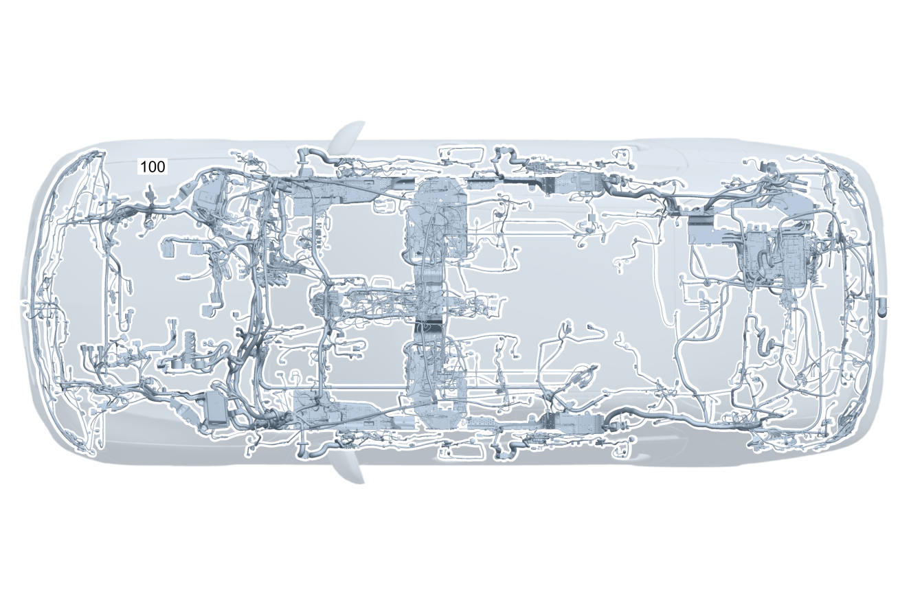

| № | Артикул | Название | Кол. | Примечание | Ограничение |
|---|---|---|---|---|---|
| 100 | A 205 540 21 12 | Электрический жгут (ELECTRICAL WIRING HARNESS) | 1 | Основной жгут электропроводки системы рамы и пола [001660] В ЖГУТЕ ЭЛЕКТРОПРОВОДКИ ИМЕЮТСЯ СООТВЕТСТВ. СПЕЦ.ИСПОЛНЕНИЯ СОГЛАСНО ЗАВОДСКОМУ НОМЕРУ АВТОМОБИЛЯ [622] ПРИ ЗАКАЗЕ УКАЗАТЬ ИДЕНТ.№ | |
| 100 | A 205 540 22 12 | Электрический жгут (ELECTRICAL WIRING HARNESS) | 1 | Основной жгут электропроводки системы рамы и пола [001660] В ЖГУТЕ ЭЛЕКТРОПРОВОДКИ ИМЕЮТСЯ СООТВЕТСТВ. СПЕЦ.ИСПОЛНЕНИЯ СОГЛАСНО ЗАВОДСКОМУ НОМЕРУ АВТОМОБИЛЯ [622] ПРИ ЗАКАЗЕ УКАЗАТЬ ИДЕНТ.№ | 184 |
| 100 | A 205 540 23 12 | Электрический жгут (ELECTRICAL WIRING HARNESS) | 1 | Основной жгут электропроводки системы рамы и пола [001660] В ЖГУТЕ ЭЛЕКТРОПРОВОДКИ ИМЕЮТСЯ СООТВЕТСТВ. СПЕЦ.ИСПОЛНЕНИЯ СОГЛАСНО ЗАВОДСКОМУ НОМЕРУ АВТОМОБИЛЯ [622] ПРИ ЗАКАЗЕ УКАЗАТЬ ИДЕНТ.№ | 700 |
| 100 | A 205 540 24 12 | Электрический жгут (ELECTRICAL WIRING HARNESS) | 1 | Основной жгут электропроводки системы рамы и пола [001660] В ЖГУТЕ ЭЛЕКТРОПРОВОДКИ ИМЕЮТСЯ СООТВЕТСТВ. СПЕЦ.ИСПОЛНЕНИЯ СОГЛАСНО ЗАВОДСКОМУ НОМЕРУ АВТОМОБИЛЯ [622] ПРИ ЗАКАЗЕ УКАЗАТЬ ИДЕНТ.№ | 165 |
| 120 | Q 000000000002 | - Возможен заказ только отдельных компонентов жгута проводов | 1 | ESP®, базовый объем Рулевое управление: Влево | |
| 120 | Q 000000000002 | - Возможен заказ только отдельных компонентов жгута проводов | 1 | ESP®, базовый объем Рулевое управление: Вправо | |
| 120 | Q 000000000002 | - Возможен заказ только отдельных компонентов жгута проводов | 1 | Электронная система стабилизации движения (ESP®) Рулевое управление: Влево | |
| 120 | Q 000000000002 | - Возможен заказ только отдельных компонентов жгута проводов | 1 | Электронная система стабилизации движения (ESP®) Рулевое управление: Вправо | |
| 120 | Q 000000000002 | - Возможен заказ только отдельных компонентов жгута проводов | 1 | Блок управления ESP® Рулевое управление: Влево | |
| 120 | Q 000000000002 | - Возможен заказ только отдельных компонентов жгута проводов | 1 | Блок управления ESP® Рулевое управление: Вправо | |
| 120 | Q 000000000002 | - Возможен заказ только отдельных компонентов жгута проводов | 1 | Блок управления ESP® Рулевое управление: Влево | 809 |
| 120 | Q 000000000002 | - Возможен заказ только отдельных компонентов жгута проводов | 1 | Блок управления ESP® Рулевое управление: Влево | |
| 120 | Q 000000000002 | - Возможен заказ только отдельных компонентов жгута проводов | 1 | Блок управления ESP® Рулевое управление: Влево | |
| 120 | Q 000000000002 | - Возможен заказ только отдельных компонентов жгута проводов | 1 | Блок управления ESP® Рулевое управление: Вправо | 809 |
| 120 | Q 000000000002 | - Возможен заказ только отдельных компонентов жгута проводов | 1 | Блок управления ESP® Рулевое управление: Вправо | |
| 120 | Q 000000000002 | - Возможен заказ только отдельных компонентов жгута проводов | 1 | Пневмоподвеска Рулевое управление: Влево | 489 |
| 120 | Q 000000000002 | - Возможен заказ только отдельных компонентов жгута проводов | 1 | Пневмоподвеска Рулевое управление: Вправо | 489 |
| 120 | Q 000000000002 | - Возможен заказ только отдельных компонентов жгута проводов | 1 | Система адаптивной амортизации (ADS) Рулевое управление: Влево | 809+459 |
| 120 | Q 000000000002 | - Возможен заказ только отдельных компонентов жгута проводов | 1 | Система адаптивной амортизации (ADS) Рулевое управление: Влево | 459 |
| 120 | Q 000000000002 | - Возможен заказ только отдельных компонентов жгута проводов | 1 | Система адаптивной амортизации (ADS) Рулевое управление: Вправо | 809+459 |
| 120 | Q 000000000002 | - Возможен заказ только отдельных компонентов жгута проводов | 1 | Система адаптивной амортизации (ADS) Рулевое управление: Вправо | 459 |
| 120 | Q 000000000002 | - Возможен заказ только отдельных компонентов жгута проводов | 1 | Аварийный натяжитель ремня безопасности, PRE\-SAFE® Рулевое управление: Влево | |
| 120 | Q 000000000002 | - Возможен заказ только отдельных компонентов жгута проводов | 1 | Аварийный натяжитель ремня безопасности, PRE\-SAFE® Рулевое управление: Вправо | |
| 120 | Q 000000000002 | - Возможен заказ только отдельных компонентов жгута проводов | 1 | Аварийный натяжитель ремня безопасности, PRE\-SAFE® Рулевое управление: Влево | 299 |
| 120 | Q 000000000002 | - Возможен заказ только отдельных компонентов жгута проводов | 1 | Аварийный натяжитель ремня безопасности, PRE\-SAFE® Рулевое управление: Вправо | 299 |
| 120 | Q 000000000002 | - Возможен заказ только отдельных компонентов жгута проводов | 1 | Аварийный натяжитель ремня безопасности, PRE\-SAFE® Рулевое управление: Влево | 299+(460/494) |
| 120 | Q 000000000002 | - Возможен заказ только отдельных компонентов жгута проводов | 1 | Аварийный натяжитель ремня безопасности, PRE\-SAFE® Рулевое управление: Влево | 809 |
| 120 | Q 000000000002 | - Возможен заказ только отдельных компонентов жгута проводов | 1 | Аварийный натяжитель ремня безопасности, PRE\-SAFE® Рулевое управление: Влево | |
| 120 | Q 000000000002 | - Возможен заказ только отдельных компонентов жгута проводов | 1 | Аварийный натяжитель ремня безопасности, PRE\-SAFE® Рулевое управление: Вправо | 809 |
| 120 | Q 000000000002 | - Возможен заказ только отдельных компонентов жгута проводов | 1 | Аварийный натяжитель ремня безопасности, PRE\-SAFE® Рулевое управление: Вправо | |
| 120 | Q 000000000002 | - Возможен заказ только отдельных компонентов жгута проводов | 1 | Аварийный натяжитель ремня безопасности, PRE\-SAFE® Рулевое управление: Влево | 809+299 |
| 120 | Q 000000000002 | - Возможен заказ только отдельных компонентов жгута проводов | 1 | Аварийный натяжитель ремня безопасности, PRE\-SAFE® Рулевое управление: Влево | 299 |
| 120 | Q 000000000002 | - Возможен заказ только отдельных компонентов жгута проводов | 1 | Аварийный натяжитель ремня безопасности, PRE\-SAFE® Рулевое управление: Вправо | 809+299 |
| 120 | Q 000000000002 | - Возможен заказ только отдельных компонентов жгута проводов | 1 | Аварийный натяжитель ремня безопасности, PRE\-SAFE® Рулевое управление: Вправо | 299 |
| 120 | Q 000000000002 | - Возможен заказ только отдельных компонентов жгута проводов | 1 | Аварийный натяжитель ремня безопасности, PRE\-SAFE® Рулевое управление: Влево | 809+299+(460/494) |
| 120 | Q 000000000002 | - Возможен заказ только отдельных компонентов жгута проводов | 1 | Аварийный натяжитель ремня безопасности, PRE\-SAFE® Рулевое управление: Влево | 299+(460/494) |
| 120 | Q 000000000002 | - Возможен заказ только отдельных компонентов жгута проводов | 1 | Аварийный натяжитель ремня безопасности, PRE\-SAFE® Рулевое управление: Влево | 299+(460/494) |
| 120 | Q 000000000002 | - Возможен заказ только отдельных компонентов жгута проводов | 1 | Защита пешеходов Рулевое управление: Влево | U60 |
| 120 | Q 000000000002 | - Возможен заказ только отдельных компонентов жгута проводов | 1 | Защита пешеходов Рулевое управление: Влево | 809+U60 |
| 120 | Q 000000000002 | - Возможен заказ только отдельных компонентов жгута проводов | 1 | Защита пешеходов Рулевое управление: Влево | 809+U60 |
| 120 | Q 000000000002 | - Возможен заказ только отдельных компонентов жгута проводов | 1 | Защита пешеходов Рулевое управление: Влево | U60 |
| 120 | Q 000000000002 | - Возможен заказ только отдельных компонентов жгута проводов | 1 | Защита пешеходов Рулевое управление: Вправо | U60 |
| 120 | Q 000000000002 | - Возможен заказ только отдельных компонентов жгута проводов | 1 | Защита пешеходов Рулевое управление: Вправо | 809+U60 |
| 120 | Q 000000000002 | - Возможен заказ только отдельных компонентов жгута проводов | 1 | Защита пешеходов Рулевое управление: Вправо | 809+U60 |
| 120 | Q 000000000002 | - Возможен заказ только отдельных компонентов жгута проводов | 1 | Защита пешеходов Рулевое управление: Вправо | U60 |
| 120 | Q 000000000002 | - Возможен заказ только отдельных компонентов жгута проводов | 1 | Дистанционное закрывание крышки багажника | 881 |
| 120 | Q 000000000002 | - Возможен заказ только отдельных компонентов жгута проводов | 1 | Система центральной блокировки замков Рулевое управление: Влево | |
| 120 | Q 000000000002 | - Возможен заказ только отдельных компонентов жгута проводов | 1 | Система центральной блокировки замков Рулевое управление: Вправо | |
| 120 | Q 000000000002 | - Возможен заказ только отдельных компонентов жгута проводов | 1 | Система контроля давления в шинах (RDK) Рулевое управление: Влево | 475 |
| 120 | Q 000000000002 | - Возможен заказ только отдельных компонентов жгута проводов | 1 | Система контроля давления в шинах (RDK) Рулевое управление: Вправо | 475 |
| 120 | Q 000000000002 | - Возможен заказ только отдельных компонентов жгута проводов | 1 | Система противоугонной сигнализации (EDW) Рулевое управление: Влево | 882 |
| 120 | Q 000000000002 | - Возможен заказ только отдельных компонентов жгута проводов | 1 | Система противоугонной сигнализации (EDW) Рулевое управление: Вправо | 882 |
| 120 | Q 000000000002 | - Возможен заказ только отдельных компонентов жгута проводов | 1 | Система противоугонной сигнализации (EDW) Рулевое управление: Влево | 809+882 |
| 120 | Q 000000000002 | - Возможен заказ только отдельных компонентов жгута проводов | 1 | Система противоугонной сигнализации (EDW) Рулевое управление: Влево | 882 |
| 120 | Q 000000000002 | - Возможен заказ только отдельных компонентов жгута проводов | 1 | Система противоугонной сигнализации (EDW) Рулевое управление: Вправо | 809+882 |
| 120 | Q 000000000002 | - Возможен заказ только отдельных компонентов жгута проводов | 1 | Система противоугонной сигнализации (EDW) Рулевое управление: Вправо | 882 |
| 120 | Q 000000000002 | - Возможен заказ только отдельных компонентов жгута проводов | 1 | Салон, базовый объем Рулевое управление: Влево | |
| 120 | Q 000000000002 | - Возможен заказ только отдельных компонентов жгута проводов | 1 | Салон, базовый объем Рулевое управление: Вправо | |
| 120 | Q 000000000002 | - Возможен заказ только отдельных компонентов жгута проводов | 1 | Салон, базовый объем Рулевое управление: Влево | 809 |
| 120 | Q 000000000002 | - Возможен заказ только отдельных компонентов жгута проводов | 1 | Салон, базовый объем Рулевое управление: Влево | |
| 120 | Q 000000000002 | - Возможен заказ только отдельных компонентов жгута проводов | 1 | Салон, базовый объем Рулевое управление: Влево | (800+050)/801 |
| 120 | Q 000000000002 | - Возможен заказ только отдельных компонентов жгута проводов | 1 | Салон, базовый объем Рулевое управление: Влево | |
| 120 | Q 000000000002 | - Возможен заказ только отдельных компонентов жгута проводов | 1 | Салон, базовый объем Рулевое управление: Вправо | 809 |
| 120 | Q 000000000002 | - Возможен заказ только отдельных компонентов жгута проводов | 1 | Салон, базовый объем Рулевое управление: Вправо | |
| 120 | Q 000000000002 | - Возможен заказ только отдельных компонентов жгута проводов | 1 | Салон, базовый объем Рулевое управление: Вправо | (800+050)/801 |
| 120 | Q 000000000002 | - Возможен заказ только отдельных компонентов жгута проводов | 1 | Салон, базовый объем Рулевое управление: Вправо | |
| 120 | Q 000000000002 | - Возможен заказ только отдельных компонентов жгута проводов | 1 | Прикуриватель | 809 |
| 120 | Q 000000000002 | - Возможен заказ только отдельных компонентов жгута проводов | 1 | Прикуриватель | |
| 120 | Q 000000000002 | - Возможен заказ только отдельных компонентов жгута проводов | 1 | Электрическое штекерное соединение переднего моста, левый распределитель | |
| 120 | Q 000000000002 | - Возможен заказ только отдельных компонентов жгута проводов | 1 | Электрическое штекерное соединение переднего моста, левый распределитель | 640/641/642/488/459/489 |
| 120 | Q 000000000002 | - Возможен заказ только отдельных компонентов жгута проводов | 1 | Электрическое штекерное соединение переднего моста, правый распределитель | |
| 120 | Q 000000000002 | - Возможен заказ только отдельных компонентов жгута проводов | 1 | Электрическое штекерное соединение переднего моста, правый распределитель | 488/459/489 |
| 120 | Q 000000000002 | - Возможен заказ только отдельных компонентов жгута проводов | 1 | Датчик АКБ Рулевое управление: Влево | |
| 120 | Q 000000000002 | - Возможен заказ только отдельных компонентов жгута проводов | 1 | Датчик АКБ Рулевое управление: Вправо | |
| 120 | Q 000000000002 | - Возможен заказ только отдельных компонентов жгута проводов | 1 | Датчик АКБ Рулевое управление: Влево | U98 |
| 120 | Q 000000000002 | - Возможен заказ только отдельных компонентов жгута проводов | 1 | Датчик АКБ Рулевое управление: Вправо | U98 |
| 120 | Q 000000000002 | - Возможен заказ только отдельных компонентов жгута проводов | 1 | Датчик АКБ Рулевое управление: Вправо | 809 |
| 120 | Q 000000000002 | - Возможен заказ только отдельных компонентов жгута проводов | 1 | Датчик АКБ Рулевое управление: Вправо | |
| 120 | Q 000000000002 | - Возможен заказ только отдельных компонентов жгута проводов | 1 | Датчик АКБ Рулевое управление: Вправо | 809+U98 |
| 120 | Q 000000000002 | - Возможен заказ только отдельных компонентов жгута проводов | 1 | Датчик АКБ Рулевое управление: Вправо | U98 |
| 120 | Q 000000000002 | - Возможен заказ только отдельных компонентов жгута проводов | 1 | Прикуриватель с подсветкой пепельницы спереди Рулевое управление: Влево | |
| 120 | Q 000000000002 | - Возможен заказ только отдельных компонентов жгута проводов | 1 | Прикуриватель с подсветкой пепельницы спереди Рулевое управление: Вправо | |
| 120 | Q 000000000002 | - Возможен заказ только отдельных компонентов жгута проводов | 1 | Прикуриватель с подсветкой пепельницы спереди Рулевое управление: Влево | 809 |
| 120 | Q 000000000002 | - Возможен заказ только отдельных компонентов жгута проводов | 1 | Прикуриватель с подсветкой пепельницы спереди Рулевое управление: Влево | |
| 120 | Q 000000000002 | - Возможен заказ только отдельных компонентов жгута проводов | 1 | Прикуриватель с подсветкой пепельницы спереди Рулевое управление: Вправо | 809 |
| 120 | Q 000000000002 | - Возможен заказ только отдельных компонентов жгута проводов | 1 | Прикуриватель с подсветкой пепельницы спереди Рулевое управление: Вправо | |
| 120 | Q 000000000002 | - Возможен заказ только отдельных компонентов жгута проводов | 1 | Прикуриватель с подсветкой пепельницы спереди Рулевое управление: Влево | 809+700+830 |
| 120 | Q 000000000002 | - Возможен заказ только отдельных компонентов жгута проводов | 1 | Прикуриватель с подсветкой пепельницы спереди Рулевое управление: Влево | 700+830 |
| 120 | Q 000000000002 | - Возможен заказ только отдельных компонентов жгута проводов | 1 | Прикуриватель с подсветкой пепельницы спереди Рулевое управление: Влево | 809+830+876 |
| 120 | Q 000000000002 | - Возможен заказ только отдельных компонентов жгута проводов | 1 | Прикуриватель с подсветкой пепельницы спереди Рулевое управление: Влево | 809+700+830+876 |
| 120 | Q 000000000002 | - Возможен заказ только отдельных компонентов жгута проводов | 1 | Прикуриватель с подсветкой пепельницы спереди Рулевое управление: Влево | 700+830+876 |
| 120 | Q 000000000002 | - Возможен заказ только отдельных компонентов жгута проводов | 1 | Разъём USB в центральной консоли Рулевое управление: Влево | 809+700+830+(896/897/899) |
| 120 | Q 000000000002 | - Возможен заказ только отдельных компонентов жгута проводов | 1 | Разъём USB в центральной консоли Рулевое управление: Влево | 700+830+(896/897/899) |
| 120 | Q 000000000002 | - Возможен заказ только отдельных компонентов жгута проводов | 1 | Разъём USB в центральной консоли Рулевое управление: Влево | 700+830+(897/899) |
| 120 | Q 000000000002 | - Возможен заказ только отдельных компонентов жгута проводов | 1 | Разъём USB в центральной консоли Рулевое управление: Влево | 809+700+830+876+(896/897/899) |
| 120 | Q 000000000002 | - Возможен заказ только отдельных компонентов жгута проводов | 1 | Разъём USB в центральной консоли Рулевое управление: Влево | 700+830+876+(896/897/899) |
| 120 | Q 000000000002 | - Возможен заказ только отдельных компонентов жгута проводов | 1 | Разъём USB в центральной консоли Рулевое управление: Влево | 700+830+876+(897/899) |
| 120 | Q 000000000002 | - Возможен заказ только отдельных компонентов жгута проводов | 1 | Беспроводная зарядка телефона в передней части салона Рулевое управление: Влево | 809+(897/899) |
| 120 | Q 000000000002 | - Возможен заказ только отдельных компонентов жгута проводов | 1 | Беспроводная зарядка телефона в передней части салона Рулевое управление: Влево | 809+(897/899) |
| 120 | Q 000000000002 | - Возможен заказ только отдельных компонентов жгута проводов | 1 | Беспроводная зарядка телефона в передней части салона Рулевое управление: Влево | 897/899 |
| 120 | Q 000000000002 | - Возможен заказ только отдельных компонентов жгута проводов | 1 | Прикуриватель с подсветкой пепельницы спереди Рулевое управление: Влево | 700+830 |
| 120 | Q 000000000002 | - Возможен заказ только отдельных компонентов жгута проводов | 1 | Прикуриватель с подсветкой пепельницы спереди Рулевое управление: Влево | 700+830+(U67/301) |
| 120 | Q 000000000002 | - Возможен заказ только отдельных компонентов жгута проводов | 1 | Прикуриватель с подсветкой пепельницы спереди Рулевое управление: Влево | 700+830+876 |
| 120 | Q 000000000002 | - Возможен заказ только отдельных компонентов жгута проводов | 1 | Прикуриватель с подсветкой пепельницы спереди Рулевое управление: Влево | 700+830+876+(U67/301) |
| 120 | Q 000000000002 | - Возможен заказ только отдельных компонентов жгута проводов | 1 | Прикуриватель с подсветкой пепельницы спереди Рулевое управление: Влево | 700+830+876+877+(U67/301) |
| 120 | Q 000000000002 | - Возможен заказ только отдельных компонентов жгута проводов | 1 | Проем для погрузки | 287 |
| 120 | Q 000000000002 | - Возможен заказ только отдельных компонентов жгута проводов | 1 | Проем для погрузки | 809+287 |
| 120 | Q 000000000002 | - Возможен заказ только отдельных компонентов жгута проводов | 1 | Проем для погрузки | 287 |
| 120 | Q 000000000002 | - Возможен заказ только отдельных компонентов жгута проводов | 1 | Механизм аварийной разблокировки крышки багажника Рулевое управление: Влево | 460/494 |
| 120 | Q 000000000002 | - Возможен заказ только отдельных компонентов жгута проводов | 1 | Механизм аварийной разблокировки крышки багажника Рулевое управление: Влево | 809+(460/494) |
| 120 | Q 000000000002 | - Возможен заказ только отдельных компонентов жгута проводов | 1 | Механизм аварийной разблокировки крышки багажника Рулевое управление: Влево | 460/494 |
| 120 | Q 000000000002 | - Возможен заказ только отдельных компонентов жгута проводов | 1 | Выключатель замка ремня безопасности слева Рулевое управление: Влево | |
| 120 | Q 000000000002 | - Возможен заказ только отдельных компонентов жгута проводов | 1 | Выключатель замка ремня безопасности слева Рулевое управление: Вправо | |
| 120 | Q 000000000002 | - Возможен заказ только отдельных компонентов жгута проводов | 1 | Выключатель замка ремня безопасности слева Рулевое управление: Влево | 221/275 |
| 120 | Q 000000000002 | - Возможен заказ только отдельных компонентов жгута проводов | 1 | Выключатель замка ремня безопасности слева Рулевое управление: Вправо | 221/241 |
| 120 | Q 000000000002 | - Возможен заказ только отдельных компонентов жгута проводов | 1 | Выключатель замка ремня безопасности справа Рулевое управление: Влево | |
| 120 | Q 000000000002 | - Возможен заказ только отдельных компонентов жгута проводов | 1 | Выключатель замка ремня безопасности справа Рулевое управление: Вправо | |
| 120 | Q 000000000002 | - Возможен заказ только отдельных компонентов жгута проводов | 1 | Выключатель замка ремня безопасности справа Рулевое управление: Влево | 222/242 |
| 120 | Q 000000000002 | - Возможен заказ только отдельных компонентов жгута проводов | 1 | Выключатель замка ремня безопасности справа Рулевое управление: Вправо | 222/275 |
| 120 | Q 000000000002 | - Возможен заказ только отдельных компонентов жгута проводов | 1 | Подушка безопасности (фронтальная) Рулевое управление: Влево | (460/494)+(221/222/242/275) |
| 120 | Q 000000000002 | - Возможен заказ только отдельных компонентов жгута проводов | 1 | Подушка безопасности (фронтальная) Рулевое управление: Влево | 809+(460/494)+(221/222/242/275) |
| 120 | Q 000000000002 | - Возможен заказ только отдельных компонентов жгута проводов | 1 | Подушка безопасности (фронтальная) Рулевое управление: Влево | 809+(460/494)+(221/222/242/275) |
| 120 | Q 000000000002 | - Возможен заказ только отдельных компонентов жгута проводов | 1 | Подушка безопасности (фронтальная) Рулевое управление: Влево | 809+(460/494)+(221/222/242/275) |
| 120 | Q 000000000002 | - Возможен заказ только отдельных компонентов жгута проводов | 1 | Подушка безопасности (фронтальная) Рулевое управление: Влево | (460/494)+(221/222/242/275) |
| 120 | Q 000000000002 | - Возможен заказ только отдельных компонентов жгута проводов | 1 | Замок ремня безопасности, заднее сиденье | (807+057/808)+U01 |
| 120 | Q 000000000002 | - Возможен заказ только отдельных компонентов жгута проводов | 1 | Замок ремня безопасности, заднее сиденье | U01 |
| 120 | Q 000000000002 | - Возможен заказ только отдельных компонентов жгута проводов | 1 | Оконная подушка безопасности Рулевое управление: Влево | |
| 120 | Q 000000000002 | - Возможен заказ только отдельных компонентов жгута проводов | 1 | Оконная подушка безопасности Рулевое управление: Вправо | |
| 120 | Q 000000000002 | - Возможен заказ только отдельных компонентов жгута проводов | 1 | Оконная подушка безопасности Рулевое управление: Влево | 809 |
| 120 | Q 000000000002 | - Возможен заказ только отдельных компонентов жгута проводов | 1 | Оконная подушка безопасности Рулевое управление: Влево | |
| 120 | Q 000000000002 | - Возможен заказ только отдельных компонентов жгута проводов | 1 | Оконная подушка безопасности Рулевое управление: Вправо | 809 |
| 120 | Q 000000000002 | - Возможен заказ только отдельных компонентов жгута проводов | 1 | Оконная подушка безопасности Рулевое управление: Вправо | |
| 120 | Q 000000000002 | - Возможен заказ только отдельных компонентов жгута проводов | 1 | Выключатель замка ремня безопасности слева Рулевое управление: Влево | 809 |
| 120 | Q 000000000002 | - Возможен заказ только отдельных компонентов жгута проводов | 1 | Выключатель замка ремня безопасности слева Рулевое управление: Влево | 809 |
| 120 | Q 000000000002 | - Возможен заказ только отдельных компонентов жгута проводов | 1 | Выключатель замка ремня безопасности слева Рулевое управление: Влево | |
| 120 | Q 000000000002 | - Возможен заказ только отдельных компонентов жгута проводов | 1 | Выключатель замка ремня безопасности слева Рулевое управление: Вправо | 809 |
| 120 | Q 000000000002 | - Возможен заказ только отдельных компонентов жгута проводов | 1 | Выключатель замка ремня безопасности слева Рулевое управление: Вправо | 809 |
| 120 | Q 000000000002 | - Возможен заказ только отдельных компонентов жгута проводов | 1 | Выключатель замка ремня безопасности слева Рулевое управление: Вправо | |
| 120 | Q 000000000002 | - Возможен заказ только отдельных компонентов жгута проводов | 1 | Выключатель замка ремня безопасности слева Рулевое управление: Влево | 809+(275/221) |
| 120 | Q 000000000002 | - Возможен заказ только отдельных компонентов жгута проводов | 1 | Выключатель замка ремня безопасности слева Рулевое управление: Влево | 809+(275/221) |
| 120 | Q 000000000002 | - Возможен заказ только отдельных компонентов жгута проводов | 1 | Выключатель замка ремня безопасности слева Рулевое управление: Влево | 275/221 |
| 120 | Q 000000000002 | - Возможен заказ только отдельных компонентов жгута проводов | 1 | Выключатель замка ремня безопасности слева Рулевое управление: Вправо | 809+(241/221/455) |
| 120 | Q 000000000002 | - Возможен заказ только отдельных компонентов жгута проводов | 1 | Выключатель замка ремня безопасности слева Рулевое управление: Вправо | 809+(241/221/455) |
| 120 | Q 000000000002 | - Возможен заказ только отдельных компонентов жгута проводов | 1 | Выключатель замка ремня безопасности слева Рулевое управление: Вправо | 241/221/455 |
| 120 | Q 000000000002 | - Возможен заказ только отдельных компонентов жгута проводов | 1 | Выключатель замка ремня безопасности справа Рулевое управление: Влево | 809 |
| 120 | Q 000000000002 | - Возможен заказ только отдельных компонентов жгута проводов | 1 | Выключатель замка ремня безопасности справа Рулевое управление: Влево | 809 |
| 120 | Q 000000000002 | - Возможен заказ только отдельных компонентов жгута проводов | 1 | Выключатель замка ремня безопасности справа Рулевое управление: Влево | |
| 120 | Q 000000000002 | - Возможен заказ только отдельных компонентов жгута проводов | 1 | Выключатель замка ремня безопасности справа Рулевое управление: Вправо | 809 |
| 120 | Q 000000000002 | - Возможен заказ только отдельных компонентов жгута проводов | 1 | Выключатель замка ремня безопасности справа Рулевое управление: Вправо | 809 |
| 120 | Q 000000000002 | - Возможен заказ только отдельных компонентов жгута проводов | 1 | Выключатель замка ремня безопасности справа Рулевое управление: Вправо | |
| 120 | Q 000000000002 | - Возможен заказ только отдельных компонентов жгута проводов | 1 | Выключатель замка ремня безопасности справа Рулевое управление: Влево | 809+(242/222/455) |
| 120 | Q 000000000002 | - Возможен заказ только отдельных компонентов жгута проводов | 1 | Выключатель замка ремня безопасности справа Рулевое управление: Влево | 809+(242/222/455) |
| 120 | Q 000000000002 | - Возможен заказ только отдельных компонентов жгута проводов | 1 | Выключатель замка ремня безопасности справа Рулевое управление: Влево | 242/222/455 |
| 120 | Q 000000000002 | - Возможен заказ только отдельных компонентов жгута проводов | 1 | Выключатель замка ремня безопасности справа Рулевое управление: Вправо | 809+(275/222) |
| 120 | Q 000000000002 | - Возможен заказ только отдельных компонентов жгута проводов | 1 | Выключатель замка ремня безопасности справа Рулевое управление: Вправо | 809+(275/222) |
| 120 | Q 000000000002 | - Возможен заказ только отдельных компонентов жгута проводов | 1 | Выключатель замка ремня безопасности справа Рулевое управление: Вправо | 275/222 |
| 120 | Q 000000000002 | - Возможен заказ только отдельных компонентов жгута проводов | 1 | Замок ремня безопасности, заднее сиденье | 809+U01 |
| 120 | Q 000000000002 | - Возможен заказ только отдельных компонентов жгута проводов | 1 | Замок ремня безопасности, заднее сиденье | U01 |
| 120 | Q 000000000002 | - Возможен заказ только отдельных компонентов жгута проводов | 1 | Фронтальный датчик ускорения спереди Рулевое управление: Влево | |
| 120 | Q 000000000002 | - Возможен заказ только отдельных компонентов жгута проводов | 1 | Фронтальный датчик ускорения спереди Рулевое управление: Вправо | |
| 120 | Q 000000000002 | - Возможен заказ только отдельных компонентов жгута проводов | 1 | Фронтальный датчик ускорения спереди Рулевое управление: Влево | 809 |
| 120 | Q 000000000002 | - Возможен заказ только отдельных компонентов жгута проводов | 1 | Фронтальный датчик ускорения спереди Рулевое управление: Влево | |
| 120 | Q 000000000002 | - Возможен заказ только отдельных компонентов жгута проводов | 1 | Фронтальный датчик ускорения спереди Рулевое управление: Вправо | 809 |
| 120 | Q 000000000002 | - Возможен заказ только отдельных компонентов жгута проводов | 1 | Фронтальный датчик ускорения спереди Рулевое управление: Вправо | |
| 120 | Q 000000000002 | - Возможен заказ только отдельных компонентов жгута проводов | 1 | Боковая подушка безопасности впереди слева Рулевое управление: Влево | |
| 120 | Q 000000000002 | - Возможен заказ только отдельных компонентов жгута проводов | 1 | Боковая подушка безопасности впереди слева Рулевое управление: Вправо | |
| 120 | Q 000000000002 | - Возможен заказ только отдельных компонентов жгута проводов | 1 | Боковая подушка безопасности впереди слева Рулевое управление: Влево | 221/275 |
| 120 | Q 000000000002 | - Возможен заказ только отдельных компонентов жгута проводов | 1 | Боковая подушка безопасности впереди слева Рулевое управление: Вправо | 221/241 |
| 120 | Q 000000000002 | - Возможен заказ только отдельных компонентов жгута проводов | 1 | Боковая подушка безопасности впереди слева Рулевое управление: Влево | 809 |
| 120 | Q 000000000002 | - Возможен заказ только отдельных компонентов жгута проводов | 1 | Боковая подушка безопасности впереди слева Рулевое управление: Влево | |
| 120 | Q 000000000002 | - Возможен заказ только отдельных компонентов жгута проводов | 1 | Боковая подушка безопасности впереди слева Рулевое управление: Вправо | 809 |
| 120 | Q 000000000002 | - Возможен заказ только отдельных компонентов жгута проводов | 1 | Боковая подушка безопасности впереди слева Рулевое управление: Вправо | |
| 120 | Q 000000000002 | - Возможен заказ только отдельных компонентов жгута проводов | 1 | Боковая подушка безопасности впереди слева Рулевое управление: Влево | 809+(221/275) |
| 120 | Q 000000000002 | - Возможен заказ только отдельных компонентов жгута проводов | 1 | Боковая подушка безопасности впереди слева Рулевое управление: Влево | 221/275 |
| 120 | Q 000000000002 | - Возможен заказ только отдельных компонентов жгута проводов | 1 | Боковая подушка безопасности впереди слева Рулевое управление: Вправо | 809+(221/241/455) |
| 120 | Q 000000000002 | - Возможен заказ только отдельных компонентов жгута проводов | 1 | Боковая подушка безопасности впереди слева Рулевое управление: Вправо | 221/241/455 |
| 120 | Q 000000000002 | - Возможен заказ только отдельных компонентов жгута проводов | 1 | Боковая подушка безопасности впереди справа Рулевое управление: Влево | |
| 120 | Q 000000000002 | - Возможен заказ только отдельных компонентов жгута проводов | 1 | Боковая подушка безопасности впереди справа Рулевое управление: Вправо | |
| 120 | Q 000000000002 | - Возможен заказ только отдельных компонентов жгута проводов | 1 | Боковая подушка безопасности впереди справа Рулевое управление: Влево | 222/242 |
| 120 | Q 000000000002 | - Возможен заказ только отдельных компонентов жгута проводов | 1 | Боковая подушка безопасности впереди справа Рулевое управление: Вправо | 222/275 |
| 120 | Q 000000000002 | - Возможен заказ только отдельных компонентов жгута проводов | 1 | Боковая подушка безопасности впереди справа Рулевое управление: Влево | 809 |
| 120 | Q 000000000002 | - Возможен заказ только отдельных компонентов жгута проводов | 1 | Боковая подушка безопасности впереди справа Рулевое управление: Влево | |
| 120 | Q 000000000002 | - Возможен заказ только отдельных компонентов жгута проводов | 1 | Боковая подушка безопасности впереди справа Рулевое управление: Вправо | 809 |
| 120 | Q 000000000002 | - Возможен заказ только отдельных компонентов жгута проводов | 1 | Боковая подушка безопасности впереди справа Рулевое управление: Вправо | |
| 120 | Q 000000000002 | - Возможен заказ только отдельных компонентов жгута проводов | 1 | Боковая подушка безопасности впереди справа Рулевое управление: Влево | 809+(242/222) |
| 120 | Q 000000000002 | - Возможен заказ только отдельных компонентов жгута проводов | 1 | Боковая подушка безопасности впереди справа Рулевое управление: Влево | 242/222 |
| 120 | Q 000000000002 | - Возможен заказ только отдельных компонентов жгута проводов | 1 | Боковая подушка безопасности впереди справа Рулевое управление: Вправо | 809+(275/222) |
| 120 | Q 000000000002 | - Возможен заказ только отдельных компонентов жгута проводов | 1 | Боковая подушка безопасности впереди справа Рулевое управление: Вправо | 275/222 |
| 120 | Q 000000000002 | - Возможен заказ только отдельных компонентов жгута проводов | 1 | Боковая подушка безопасности (задняя) | 298/293+494 |
| 120 | Q 000000000002 | - Возможен заказ только отдельных компонентов жгута проводов | 1 | Боковая подушка безопасности (задняя) | 809+(298/293+(494/700)) |
| 120 | Q 000000000002 | - Возможен заказ только отдельных компонентов жгута проводов | 1 | Боковая подушка безопасности (задняя) | 809+(298/293+(460/494/700)) |
| 120 | Q 000000000002 | - Возможен заказ только отдельных компонентов жгута проводов | 1 | Боковая подушка безопасности (задняя) | 298/293+(460/494/700) |
| 120 | Q 000000000002 | - Возможен заказ только отдельных компонентов жгута проводов | 1 | Связь с сиденьем LIN | 873/401/221/222 |
| 120 | Q 000000000002 | - Возможен заказ только отдельных компонентов жгута проводов | 1 | Связь с сиденьем LIN | 809+(873/401/221/222) |
| 120 | Q 000000000002 | - Возможен заказ только отдельных компонентов жгута проводов | 1 | Связь с сиденьем LIN | 275+(873/401/221/222) |
| 120 | Q 000000000002 | - Возможен заказ только отдельных компонентов жгута проводов | 1 | Связь с сиденьем LIN | 809+275+(873/401/221/222) |
| 120 | Q 000000000002 | - Возможен заказ только отдельных компонентов жгута проводов | 1 | Связь с сиденьем LIN | (241/242)+(873/401/221/222) |
| 120 | Q 000000000002 | - Возможен заказ только отдельных компонентов жгута проводов | 1 | Связь с сиденьем LIN | 809+(241/242)+(873/401/221/222) |
| 120 | Q 000000000002 | - Возможен заказ только отдельных компонентов жгута проводов | 1 | Связь с сиденьем LIN | 809+(873/401) |
| 120 | Q 000000000002 | - Возможен заказ только отдельных компонентов жгута проводов | 1 | Связь с сиденьем LIN | 873/401 |
| 120 | Q 000000000002 | - Возможен заказ только отдельных компонентов жгута проводов | 1 | Корпус кузова, шина данных CAN | (241/242/247/275/455/889/893/965/Z90/Z97/01T) |
| 120 | Q 000000000002 | - Возможен заказ только отдельных компонентов жгута проводов | 1 | Корпус кузова, шина данных CAN | 809+(221/222/241/242/275/409/455/B01/890/881) |
| 120 | Q 000000000002 | - Возможен заказ только отдельных компонентов жгута проводов | 1 | Корпус кузова, шина данных CAN | 221/222/241/242/275/409/455/B01/890/881 |
| 120 | Q 000000000002 | - Возможен заказ только отдельных компонентов жгута проводов | 1 | Корпус кузова, шина данных CAN | 809+409+(221/241/275)+(222/242/455)+B01+(876+877) |
| 120 | Q 000000000002 | - Возможен заказ только отдельных компонентов жгута проводов | 1 | Корпус кузова, шина данных CAN | 809+409+(221/241/275)+(222/242/455)+B01+(890/881) |
| 120 | Q 000000000002 | - Возможен заказ только отдельных компонентов жгута проводов | 1 | Корпус кузова, шина данных CAN | 409+(221/241/275)+(222/242/455)+B01+(890/881) |
| 120 | Q 000000000002 | - Возможен заказ только отдельных компонентов жгута проводов | 1 | Корпус кузова, шина данных CAN | 809+(01T/965/Z90/Z97) |
| 120 | Q 000000000002 | - Возможен заказ только отдельных компонентов жгута проводов | 1 | Корпус кузова, шина данных CAN | 01T/Z90/Z97 |
| 120 | Q 000000000002 | - Возможен заказ только отдельных компонентов жгута проводов | 1 | Корпус кузова, шина данных CAN | 01T/Z90 |
| 120 | Q 000000000002 | - Возможен заказ только отдельных компонентов жгута проводов | 1 | Шина данных CAN трансмиссии | |
| 120 | Q 000000000002 | - Возможен заказ только отдельных компонентов жгута проводов | 1 | Шина данных CAN трансмиссии | 809 |
| 120 | Q 000000000002 | - Возможен заказ только отдельных компонентов жгута проводов | 1 | Шина данных CAN трансмиссии | |
| 120 | Q 000000000002 | - Возможен заказ только отдельных компонентов жгута проводов | 1 | Штекерное соединение распределителя потенциалов шины данных CAN периферийного оборудования Рулевое управление: Влево | |
| 120 | Q 000000000002 | - Возможен заказ только отдельных компонентов жгута проводов | 1 | Штекерное соединение распределителя потенциалов шины данных CAN периферийного оборудования Рулевое управление: Влево | ((632/640/642)+((237+238+253)/234/476)+258+(476/513/608/628)/01T) |
| 120 | Q 000000000002 | - Возможен заказ только отдельных компонентов жгута проводов | 1 | Штекерное соединение распределителя потенциалов шины данных CAN периферийного оборудования Рулевое управление: Вправо | |
| 120 | Q 000000000002 | - Возможен заказ только отдельных компонентов жгута проводов | 1 | Штекерное соединение распределителя потенциалов шины данных CAN периферийного оборудования Рулевое управление: Вправо | ((631/641)+((237+238+253)/234/476)+258+(476/513/608/628)/01T) |
| 120 | Q 000000000002 | - Возможен заказ только отдельных компонентов жгута проводов | 1 | Система распознавания занятости сиденья, система распознавания наличия детского сиденья Рулевое управление: Влево | |
| 120 | Q 000000000002 | - Возможен заказ только отдельных компонентов жгута проводов | 1 | Система распознавания занятости сиденья, система распознавания наличия детского сиденья Рулевое управление: Вправо | |
| 120 | Q 000000000002 | - Возможен заказ только отдельных компонентов жгута проводов | 1 | Система распознавания занятости сиденья, система распознавания наличия детского сиденья Рулевое управление: Влево | 222/242 |
| 120 | Q 000000000002 | - Возможен заказ только отдельных компонентов жгута проводов | 1 | Система распознавания занятости сиденья, система распознавания наличия детского сиденья Рулевое управление: Вправо | 221/241 |
| 120 | Q 000000000002 | - Возможен заказ только отдельных компонентов жгута проводов | 1 | Система распознавания занятости сиденья, система распознавания наличия детского сиденья Рулевое управление: Влево | U10 |
| 120 | Q 000000000002 | - Возможен заказ только отдельных компонентов жгута проводов | 1 | Система распознавания занятости сиденья, система распознавания наличия детского сиденья Рулевое управление: Вправо | U10 |
| 120 | Q 000000000002 | - Возможен заказ только отдельных компонентов жгута проводов | 1 | Система распознавания занятости сиденья, система распознавания наличия детского сиденья Рулевое управление: Влево | U10+(222/242) |
| 120 | Q 000000000002 | - Возможен заказ только отдельных компонентов жгута проводов | 1 | Система распознавания занятости сиденья, система распознавания наличия детского сиденья Рулевое управление: Вправо | U10+(221/241) |
| 120 | Q 000000000002 | - Возможен заказ только отдельных компонентов жгута проводов | 1 | Система распознавания занятости сиденья, система распознавания наличия детского сиденья Рулевое управление: Влево | 809 |
| 120 | Q 000000000002 | - Возможен заказ только отдельных компонентов жгута проводов | 1 | Система распознавания занятости сиденья, система распознавания наличия детского сиденья Рулевое управление: Влево | 809 |
| 120 | Q 000000000002 | - Возможен заказ только отдельных компонентов жгута проводов | 1 | Система распознавания занятости сиденья, система распознавания наличия детского сиденья Рулевое управление: Влево | |
| 120 | Q 000000000002 | - Возможен заказ только отдельных компонентов жгута проводов | 1 | Система распознавания занятости сиденья, система распознавания наличия детского сиденья Рулевое управление: Вправо | 809 |
| 120 | Q 000000000002 | - Возможен заказ только отдельных компонентов жгута проводов | 1 | Система распознавания занятости сиденья, система распознавания наличия детского сиденья Рулевое управление: Вправо | 809 |
| 120 | Q 000000000002 | - Возможен заказ только отдельных компонентов жгута проводов | 1 | Система распознавания занятости сиденья, система распознавания наличия детского сиденья Рулевое управление: Вправо | |
| 120 | Q 000000000002 | - Возможен заказ только отдельных компонентов жгута проводов | 1 | Система распознавания занятости сиденья, система распознавания наличия детского сиденья Рулевое управление: Влево | 809+(222/242) |
| 120 | Q 000000000002 | - Возможен заказ только отдельных компонентов жгута проводов | 1 | Система распознавания занятости сиденья, система распознавания наличия детского сиденья Рулевое управление: Влево | 809+(222/242) |
| 120 | Q 000000000002 | - Возможен заказ только отдельных компонентов жгута проводов | 1 | Система распознавания занятости сиденья, система распознавания наличия детского сиденья Рулевое управление: Влево | (222/242) |
| 120 | Q 000000000002 | - Возможен заказ только отдельных компонентов жгута проводов | 1 | Система распознавания занятости сиденья, система распознавания наличия детского сиденья Рулевое управление: Вправо | 809+(221/241) |
| 120 | Q 000000000002 | - Возможен заказ только отдельных компонентов жгута проводов | 1 | Система распознавания занятости сиденья, система распознавания наличия детского сиденья Рулевое управление: Вправо | 809+(221/241) |
| 120 | Q 000000000002 | - Возможен заказ только отдельных компонентов жгута проводов | 1 | Система распознавания занятости сиденья, система распознавания наличия детского сиденья Рулевое управление: Вправо | (221/241) |
| 120 | Q 000000000002 | - Возможен заказ только отдельных компонентов жгута проводов | 1 | Система распознавания занятости сиденья, система распознавания наличия детского сиденья Рулевое управление: Влево | 809+U10 |
| 120 | Q 000000000002 | - Возможен заказ только отдельных компонентов жгута проводов | 1 | Система распознавания занятости сиденья, система распознавания наличия детского сиденья Рулевое управление: Влево | 809+U10 |
| 120 | Q 000000000002 | - Возможен заказ только отдельных компонентов жгута проводов | 1 | Система распознавания занятости сиденья, система распознавания наличия детского сиденья Рулевое управление: Влево | U10 |
| 120 | Q 000000000002 | - Возможен заказ только отдельных компонентов жгута проводов | 1 | Система распознавания занятости сиденья, система распознавания наличия детского сиденья Рулевое управление: Вправо | 809+U10 |
| 120 | Q 000000000002 | - Возможен заказ только отдельных компонентов жгута проводов | 1 | Система распознавания занятости сиденья, система распознавания наличия детского сиденья Рулевое управление: Вправо | 809+U10 |
| 120 | Q 000000000002 | - Возможен заказ только отдельных компонентов жгута проводов | 1 | Система распознавания занятости сиденья, система распознавания наличия детского сиденья Рулевое управление: Вправо | U10 |
| 120 | Q 000000000002 | - Возможен заказ только отдельных компонентов жгута проводов | 1 | Система распознавания занятости сиденья, система распознавания наличия детского сиденья Рулевое управление: Влево | 809+U10+(222/242/455) |
| 120 | Q 000000000002 | - Возможен заказ только отдельных компонентов жгута проводов | 1 | Система распознавания занятости сиденья, система распознавания наличия детского сиденья Рулевое управление: Влево | 809+U10+(222/242/455) |
| 120 | Q 000000000002 | - Возможен заказ только отдельных компонентов жгута проводов | 1 | Система распознавания занятости сиденья, система распознавания наличия детского сиденья Рулевое управление: Влево | U10+(222/242/455) |
| 120 | Q 000000000002 | - Возможен заказ только отдельных компонентов жгута проводов | 1 | Система распознавания занятости сиденья, система распознавания наличия детского сиденья Рулевое управление: Вправо | 809+U10+(221/241) |
| 120 | Q 000000000002 | - Возможен заказ только отдельных компонентов жгута проводов | 1 | Система распознавания занятости сиденья, система распознавания наличия детского сиденья Рулевое управление: Вправо | 809+U10+(221/241) |
| 120 | Q 000000000002 | - Возможен заказ только отдельных компонентов жгута проводов | 1 | Система распознавания занятости сиденья, система распознавания наличия детского сиденья Рулевое управление: Вправо | U10+(221/241) |
| 120 | Q 000000000002 | - Возможен заказ только отдельных компонентов жгута проводов | 1 | Связь по шине данных LIN HERMES Рулевое управление: Влево | 360/362 |
| 120 | Q 000000000002 | - Возможен заказ только отдельных компонентов жгута проводов | 1 | Связь по шине данных LIN HERMES Рулевое управление: Вправо | 360/362 |
| 120 | Q 000000000002 | - Возможен заказ только отдельных компонентов жгута проводов | 1 | Связь по шине данных LIN HERMES Рулевое управление: Влево | (360/362)+U10+(222/242) |
| 120 | Q 000000000002 | - Возможен заказ только отдельных компонентов жгута проводов | 1 | Связь по шине данных LIN HERMES Рулевое управление: Вправо | (360/362)+U10+(221/241) |
| 120 | Q 000000000002 | - Возможен заказ только отдельных компонентов жгута проводов | 1 | Связь по шине данных LIN HERMES Рулевое управление: Влево | (360/362)+U10 |
| 120 | Q 000000000002 | - Возможен заказ только отдельных компонентов жгута проводов | 1 | Связь по шине данных LIN HERMES Рулевое управление: Вправо | (360/362)+U10 |
| 120 | Q 000000000002 | - Возможен заказ только отдельных компонентов жгута проводов | 1 | Связь с сиденьем LIN Рулевое управление: Влево | U10 |
| 120 | Q 000000000002 | - Возможен заказ только отдельных компонентов жгута проводов | 1 | Связь с сиденьем LIN Рулевое управление: Вправо | U10 |
| 120 | Q 000000000002 | - Возможен заказ только отдельных компонентов жгута проводов | 1 | Связь с сиденьем LIN Рулевое управление: Влево | U10+(222/242) |
| 120 | Q 000000000002 | - Возможен заказ только отдельных компонентов жгута проводов | 1 | Связь с сиденьем LIN Рулевое управление: Вправо | U10+(221/241) |
| 120 | Q 000000000002 | - Возможен заказ только отдельных компонентов жгута проводов | 1 | Связь по шине данных LIN HERMES | 809+(360/362) |
| 120 | Q 000000000002 | - Возможен заказ только отдельных компонентов жгута проводов | 1 | Связь по шине данных LIN HERMES | 362 |
| 120 | Q 000000000002 | - Возможен заказ только отдельных компонентов жгута проводов | 1 | Связь по шине данных LIN HERMES Рулевое управление: Влево | 809+(360/362)+U10+(222/242) |
| 120 | Q 000000000002 | - Возможен заказ только отдельных компонентов жгута проводов | 1 | Связь по шине данных LIN HERMES Рулевое управление: Влево | 809+(360/362)+U10+(222/242) |
| 120 | Q 000000000002 | - Возможен заказ только отдельных компонентов жгута проводов | 1 | Связь по шине данных LIN HERMES Рулевое управление: Влево | 362+U10+(222/242) |
| 120 | Q 000000000002 | - Возможен заказ только отдельных компонентов жгута проводов | 1 | Связь по шине данных LIN HERMES Рулевое управление: Вправо | 809+(360/362)+U10+(221/241) |
| 120 | Q 000000000002 | - Возможен заказ только отдельных компонентов жгута проводов | 1 | Связь по шине данных LIN HERMES Рулевое управление: Вправо | 809+(360/362)+U10+(221/241) |
| 120 | Q 000000000002 | - Возможен заказ только отдельных компонентов жгута проводов | 1 | Связь по шине данных LIN HERMES Рулевое управление: Вправо | 362+U10+(221/241) |
| 120 | Q 000000000002 | - Возможен заказ только отдельных компонентов жгута проводов | 1 | Связь по шине данных LIN HERMES Рулевое управление: Влево | 809+(360/362)+U10 |
| 120 | Q 000000000002 | - Возможен заказ только отдельных компонентов жгута проводов | 1 | Связь по шине данных LIN HERMES Рулевое управление: Влево | 809+(360/362)+U10 |
| 120 | Q 000000000002 | - Возможен заказ только отдельных компонентов жгута проводов | 1 | Связь по шине данных LIN HERMES Рулевое управление: Влево | 362+U10 |
| 120 | Q 000000000002 | - Возможен заказ только отдельных компонентов жгута проводов | 1 | Связь по шине данных LIN HERMES Рулевое управление: Вправо | 809+(360/362)+U10 |
| 120 | Q 000000000002 | - Возможен заказ только отдельных компонентов жгута проводов | 1 | Связь по шине данных LIN HERMES Рулевое управление: Вправо | 809+(360/362)+U10 |
| 120 | Q 000000000002 | - Возможен заказ только отдельных компонентов жгута проводов | 1 | Связь по шине данных LIN HERMES Рулевое управление: Вправо | 362+U10 |
| 120 | Q 000000000002 | - Возможен заказ только отдельных компонентов жгута проводов | 1 | Связь с сиденьем LIN Рулевое управление: Влево | 809+U10 |
| 120 | Q 000000000002 | - Возможен заказ только отдельных компонентов жгута проводов | 1 | Связь с сиденьем LIN Рулевое управление: Влево | 809+U10 |
| 120 | Q 000000000002 | - Возможен заказ только отдельных компонентов жгута проводов | 1 | Связь с сиденьем LIN Рулевое управление: Влево | U10 |
| 120 | Q 000000000002 | - Возможен заказ только отдельных компонентов жгута проводов | 1 | Связь с сиденьем LIN Рулевое управление: Вправо | 809+U10 |
| 120 | Q 000000000002 | - Возможен заказ только отдельных компонентов жгута проводов | 1 | Связь с сиденьем LIN Рулевое управление: Вправо | 809+U10 |
| 120 | Q 000000000002 | - Возможен заказ только отдельных компонентов жгута проводов | 1 | Связь с сиденьем LIN Рулевое управление: Вправо | U10 |
| 120 | Q 000000000002 | - Возможен заказ только отдельных компонентов жгута проводов | 1 | Связь с сиденьем LIN Рулевое управление: Влево | 809+U10+(222/242) |
| 120 | Q 000000000002 | - Возможен заказ только отдельных компонентов жгута проводов | 1 | Связь с сиденьем LIN Рулевое управление: Влево | 809+U10+(222/242) |
| 120 | Q 000000000002 | - Возможен заказ только отдельных компонентов жгута проводов | 1 | Связь с сиденьем LIN Рулевое управление: Влево | U10+(222/242) |
| 120 | Q 000000000002 | - Возможен заказ только отдельных компонентов жгута проводов | 1 | Связь с сиденьем LIN Рулевое управление: Вправо | 809+U10+(221/241) |
| 120 | Q 000000000002 | - Возможен заказ только отдельных компонентов жгута проводов | 1 | Связь с сиденьем LIN Рулевое управление: Вправо | 809+U10+(221/241) |
| 120 | Q 000000000002 | - Возможен заказ только отдельных компонентов жгута проводов | 1 | Связь с сиденьем LIN Рулевое управление: Вправо | U10+(221/241) |
| 120 | Q 000000000002 | - Возможен заказ только отдельных компонентов жгута проводов | 1 | Блок задних фонарей Рулевое управление: Влево | |
| 120 | Q 000000000002 | - Возможен заказ только отдельных компонентов жгута проводов | 1 | Блок задних фонарей Рулевое управление: Вправо | 620 |
| 120 | Q 000000000002 | - Возможен заказ только отдельных компонентов жгута проводов | 1 | Блок задних фонарей Рулевое управление: Вправо | |
| 120 | Q 000000000002 | - Возможен заказ только отдельных компонентов жгута проводов | 1 | Блок задних фонарей Рулевое управление: Влево | 613 |
| 120 | Q 000000000002 | - Возможен заказ только отдельных компонентов жгута проводов | 1 | Блок задних фонарей | 632/642 |
| 120 | Q 000000000002 | - Возможен заказ только отдельных компонентов жгута проводов | 1 | Блок задних фонарей | 631/641 |
| 120 | Q 000000000002 | - Возможен заказ только отдельных компонентов жгута проводов | 1 | Блок задних фонарей Рулевое управление: Влево | 460/494 |
| 120 | Q 000000000002 | - Возможен заказ только отдельных компонентов жгута проводов | 1 | Блок задних фонарей Рулевое управление: Влево | (460/494)+(632/640) |
| 120 | Q 000000000002 | - Возможен заказ только отдельных компонентов жгута проводов | 1 | Блок задних фонарей Рулевое управление: Влево | 809 |
| 120 | Q 000000000002 | - Возможен заказ только отдельных компонентов жгута проводов | 1 | Блок задних фонарей Рулевое управление: Влево | |
| 120 | Q 000000000002 | - Возможен заказ только отдельных компонентов жгута проводов | 1 | Блок задних фонарей Рулевое управление: Вправо | 809+620 |
| 120 | Q 000000000002 | - Возможен заказ только отдельных компонентов жгута проводов | 1 | Блок задних фонарей Рулевое управление: Вправо | 620 |
| 120 | Q 000000000002 | - Возможен заказ только отдельных компонентов жгута проводов | 1 | Блок задних фонарей Рулевое управление: Вправо | 809 |
| 120 | Q 000000000002 | - Возможен заказ только отдельных компонентов жгута проводов | 1 | Блок задних фонарей Рулевое управление: Вправо | |
| 120 | Q 000000000002 | - Возможен заказ только отдельных компонентов жгута проводов | 1 | Блок задних фонарей Рулевое управление: Влево | 809+613 |
| 120 | Q 000000000002 | - Возможен заказ только отдельных компонентов жгута проводов | 1 | Блок задних фонарей Рулевое управление: Влево | 613 |
| 120 | Q 000000000002 | - Возможен заказ только отдельных компонентов жгута проводов | 1 | Блок задних фонарей | 809+(632/642) |
| 120 | Q 000000000002 | - Возможен заказ только отдельных компонентов жгута проводов | 1 | Блок задних фонарей | 632/642 |
| 120 | Q 000000000002 | - Возможен заказ только отдельных компонентов жгута проводов | 1 | Блок задних фонарей | 809+(631/641) |
| 120 | Q 000000000002 | - Возможен заказ только отдельных компонентов жгута проводов | 1 | Блок задних фонарей | 631/641 |
| 120 | Q 000000000002 | - Возможен заказ только отдельных компонентов жгута проводов | 1 | Блок задних фонарей Рулевое управление: Влево | 809+(460/494) |
| 120 | Q 000000000002 | - Возможен заказ только отдельных компонентов жгута проводов | 1 | Блок задних фонарей Рулевое управление: Влево | 460/494 |
| 120 | Q 000000000002 | - Возможен заказ только отдельных компонентов жгута проводов | 1 | Блок задних фонарей Рулевое управление: Влево | 809+(460/494)+(632/640) |
| 120 | Q 000000000002 | - Возможен заказ только отдельных компонентов жгута проводов | 1 | Блок задних фонарей Рулевое управление: Влево | (460/494)+(632/640) |
| 120 | Q 000000000002 | - Возможен заказ только отдельных компонентов жгута проводов | 1 | Блок задних фонарей Рулевое управление: Вправо | ((800+050)/801)+620 |
| 120 | Q 000000000002 | - Возможен заказ только отдельных компонентов жгута проводов | 1 | Блок задних фонарей Рулевое управление: Вправо | 620 |
| 120 | Q 000000000002 | - Возможен заказ только отдельных компонентов жгута проводов | 1 | Блок задних фонарей Рулевое управление: Влево | ((800+050)/801) |
| 120 | Q 000000000002 | - Возможен заказ только отдельных компонентов жгута проводов | 1 | Блок задних фонарей Рулевое управление: Влево | |
| 120 | Q 000000000002 | - Возможен заказ только отдельных компонентов жгута проводов | 1 | Блок задних фонарей Рулевое управление: Влево | ((800+050)/801)+(460/494) |
| 120 | Q 000000000002 | - Возможен заказ только отдельных компонентов жгута проводов | 1 | Блок задних фонарей Рулевое управление: Влево | (460/494) |
| 120 | Q 000000000002 | - Возможен заказ только отдельных компонентов жгута проводов | 1 | Блок задних фонарей | ((800+050)/801)+(632/642) |
| 120 | Q 000000000002 | - Возможен заказ только отдельных компонентов жгута проводов | 1 | Блок задних фонарей | (632/642) |
| 120 | Q 000000000002 | - Возможен заказ только отдельных компонентов жгута проводов | 1 | Блок задних фонарей Рулевое управление: Влево | ((800+050)/801)+(460/494)+(632/640) |
| 120 | Q 000000000002 | - Возможен заказ только отдельных компонентов жгута проводов | 1 | Блок задних фонарей Рулевое управление: Влево | (460/494)+(632/640) |
| 120 | Q 000000000002 | - Возможен заказ только отдельных компонентов жгута проводов | 1 | Блок задних фонарей Рулевое управление: Вправо | (800+050)/801 |
| 120 | Q 000000000002 | - Возможен заказ только отдельных компонентов жгута проводов | 1 | Блок задних фонарей Рулевое управление: Вправо | |
| 120 | Q 000000000002 | - Возможен заказ только отдельных компонентов жгута проводов | 1 | Блок задних фонарей Рулевое управление: Влево | ((800+050)/801)+613 |
| 120 | Q 000000000002 | - Возможен заказ только отдельных компонентов жгута проводов | 1 | Блок задних фонарей Рулевое управление: Влево | 613 |
| 120 | Q 000000000002 | - Возможен заказ только отдельных компонентов жгута проводов | 1 | Блок задних фонарей | ((800+050)/801)+(631/641) |
| 120 | Q 000000000002 | - Возможен заказ только отдельных компонентов жгута проводов | 1 | Блок задних фонарей | (631/641) |
| 120 | Q 000000000002 | - Возможен заказ только отдельных компонентов жгута проводов | 1 | Розетка 12 В (передняя) Рулевое управление: Влево | 809+(897/899)+(494/460) |
| 120 | Q 000000000002 | - Возможен заказ только отдельных компонентов жгута проводов | 1 | Розетка 12 В (передняя) Рулевое управление: Влево | (897/899)+(494/460) |
| 120 | Q 000000000002 | - Возможен заказ только отдельных компонентов жгута проводов | 1 | Светодиодная подсветка центральной консоли спереди Рулевое управление: Влево | 876+877+(421/427) |
| 120 | Q 000000000002 | - Возможен заказ только отдельных компонентов жгута проводов | 1 | Светодиодная подсветка центральной консоли спереди Рулевое управление: Вправо | 876+877+(421/427) |
| 120 | Q 000000000002 | - Возможен заказ только отдельных компонентов жгута проводов | 1 | Светодиодная подсветка центральной консоли спереди Рулевое управление: Влево | 809+876+877 |
| 120 | Q 000000000002 | - Возможен заказ только отдельных компонентов жгута проводов | 1 | Светодиодная подсветка центральной консоли спереди Рулевое управление: Влево | 876+877 |
| 120 | Q 000000000002 | - Возможен заказ только отдельных компонентов жгута проводов | 1 | Светодиодная подсветка центральной консоли спереди Рулевое управление: Вправо | 809+876+877 |
| 120 | Q 000000000002 | - Возможен заказ только отдельных компонентов жгута проводов | 1 | Светодиодная подсветка центральной консоли спереди Рулевое управление: Вправо | 876+877 |
| 120 | Q 000000000002 | - Возможен заказ только отдельных компонентов жгута проводов | 1 | Светодиодная подсветка пространства для ног Рулевое управление: Влево | 877+809 |
| 120 | Q 000000000002 | - Возможен заказ только отдельных компонентов жгута проводов | 1 | Светодиодная подсветка пространства для ног Рулевое управление: Влево | 877 |
| 120 | Q 000000000002 | - Возможен заказ только отдельных компонентов жгута проводов | 1 | Светодиодная подсветка пространства для ног Рулевое управление: Влево | 877+(222/242)+809 |
| 120 | Q 000000000002 | - Возможен заказ только отдельных компонентов жгута проводов | 1 | Светодиодная подсветка пространства для ног Рулевое управление: Влево | 877+(222/242) |
| 120 | Q 000000000002 | - Возможен заказ только отдельных компонентов жгута проводов | 1 | Светодиодная подсветка пространства для ног Рулевое управление: Влево | 877+(221/275)+809 |
| 120 | Q 000000000002 | - Возможен заказ только отдельных компонентов жгута проводов | 1 | Светодиодная подсветка пространства для ног Рулевое управление: Влево | 877+(221/275) |
| 120 | Q 000000000002 | - Возможен заказ только отдельных компонентов жгута проводов | 1 | Светодиодная подсветка пространства для ног Рулевое управление: Влево | 877+(221/275)+(222/242)+809 |
| 120 | Q 000000000002 | - Возможен заказ только отдельных компонентов жгута проводов | 1 | Светодиодная подсветка пространства для ног Рулевое управление: Влево | 877+(221/275)+(222/242) |
| 120 | Q 000000000002 | - Возможен заказ только отдельных компонентов жгута проводов | 1 | Светодиодная подсветка пространства для ног Рулевое управление: Вправо | 877+809 |
| 120 | Q 000000000002 | - Возможен заказ только отдельных компонентов жгута проводов | 1 | Светодиодная подсветка пространства для ног Рулевое управление: Вправо | 877 |
| 120 | Q 000000000002 | - Возможен заказ только отдельных компонентов жгута проводов | 1 | Светодиодная подсветка пространства для ног Рулевое управление: Вправо | 877+(222/275)+809 |
| 120 | Q 000000000002 | - Возможен заказ только отдельных компонентов жгута проводов | 1 | Светодиодная подсветка пространства для ног Рулевое управление: Вправо | 877+(222/275) |
| 120 | Q 000000000002 | - Возможен заказ только отдельных компонентов жгута проводов | 1 | Светодиодная подсветка пространства для ног Рулевое управление: Вправо | 877+(221/241)+809 |
| 120 | Q 000000000002 | - Возможен заказ только отдельных компонентов жгута проводов | 1 | Светодиодная подсветка пространства для ног Рулевое управление: Вправо | 877+(221/241) |
| 120 | Q 000000000002 | - Возможен заказ только отдельных компонентов жгута проводов | 1 | Светодиодная подсветка пространства для ног Рулевое управление: Вправо | 877+(222/275)+(221/241)+809 |
| 120 | Q 000000000002 | - Возможен заказ только отдельных компонентов жгута проводов | 1 | Светодиодная подсветка пространства для ног Рулевое управление: Вправо | 877+(222/275)+(221/241) |
| 120 | Q 000000000002 | - Возможен заказ только отдельных компонентов жгута проводов | 1 | Освещение левого пространства для ног Рулевое управление: Влево | 877+876 |
| 120 | Q 000000000002 | - Возможен заказ только отдельных компонентов жгута проводов | 1 | Освещение левого пространства для ног Рулевое управление: Вправо | 877+876 |
| 120 | Q 000000000002 | - Возможен заказ только отдельных компонентов жгута проводов | 1 | Освещение левого пространства для ног Рулевое управление: Влево | 877+876+(221/275) |
| 120 | Q 000000000002 | - Возможен заказ только отдельных компонентов жгута проводов | 1 | Освещение левого пространства для ног Рулевое управление: Вправо | 877+876+(221/241) |
| 120 | Q 000000000002 | - Возможен заказ только отдельных компонентов жгута проводов | 1 | Освещение правого пространства для ног Рулевое управление: Влево | 877+876 |
| 120 | Q 000000000002 | - Возможен заказ только отдельных компонентов жгута проводов | 1 | Освещение правого пространства для ног Рулевое управление: Вправо | 877+876 |
| 120 | Q 000000000002 | - Возможен заказ только отдельных компонентов жгута проводов | 1 | Освещение правого пространства для ног Рулевое управление: Влево | 877+876+(222/242) |
| 120 | Q 000000000002 | - Возможен заказ только отдельных компонентов жгута проводов | 1 | Освещение правого пространства для ног Рулевое управление: Вправо | 877+876+(222/275) |
| 120 | Q 000000000002 | - Возможен заказ только отдельных компонентов жгута проводов | 1 | Плафон освещения пространства для ног водителя и переднего пассажира Рулевое управление: Влево | 876+700+830 |
| 120 | Q 000000000002 | - Возможен заказ только отдельных компонентов жгута проводов | 1 | Плафон освещения пространства для ног водителя и переднего пассажира Рулевое управление: Влево | 809+876+700+830 |
| 120 | Q 000000000002 | - Возможен заказ только отдельных компонентов жгута проводов | 1 | Плафон освещения пространства для ног водителя и переднего пассажира Рулевое управление: Влево | 876+700+830 |
| 120 | Q 000000000002 | - Возможен заказ только отдельных компонентов жгута проводов | 1 | Накладка порога с подсветкой (передняя) Рулевое управление: Влево | U25 |
| 120 | Q 000000000002 | - Возможен заказ только отдельных компонентов жгута проводов | 1 | Накладка порога с подсветкой (передняя) Рулевое управление: Вправо | U25 |
| 120 | Q 000000000002 | - Возможен заказ только отдельных компонентов жгута проводов | 1 | Накладка порога с подсветкой (передняя) Рулевое управление: Влево | 809+U25 |
| 120 | Q 000000000002 | - Возможен заказ только отдельных компонентов жгута проводов | 1 | Накладка порога с подсветкой (передняя) Рулевое управление: Влево | U25 |
| 120 | Q 000000000002 | - Возможен заказ только отдельных компонентов жгута проводов | 1 | Накладка порога с подсветкой (передняя) Рулевое управление: Вправо | 809+U25 |
| 120 | Q 000000000002 | - Возможен заказ только отдельных компонентов жгута проводов | 1 | Накладка порога с подсветкой (передняя) Рулевое управление: Вправо | U25 |
| 120 | Q 000000000002 | - Возможен заказ только отдельных компонентов жгута проводов | 1 | Датчик дождя и освещенности с дополнительными функциями Рулевое управление: Влево | -(M651+425/851) |
| 120 | Q 000000000002 | - Возможен заказ только отдельных компонентов жгута проводов | 1 | Датчик дождя и освещенности с дополнительными функциями Рулевое управление: Вправо | -(M651+425/851) |
| 120 | Q 000000000002 | - Возможен заказ только отдельных компонентов жгута проводов | 1 | Датчик дождя и освещенности с дополнительными функциями Рулевое управление: Влево | (608/628/476/513/(608/628)+(513/476))+-(M651+425/851) |
| 120 | Q 000000000002 | - Возможен заказ только отдельных компонентов жгута проводов | 1 | Датчик дождя и освещенности с дополнительными функциями Рулевое управление: Вправо | (608/628/476/513/(608/628)+(513/476))+-(M651+425/851) |
| 120 | Q 000000000002 | - Возможен заказ только отдельных компонентов жгута проводов | 1 | Датчик дождя и освещенности с дополнительными функциями Рулевое управление: Влево | 463 |
| 120 | Q 000000000002 | - Возможен заказ только отдельных компонентов жгута проводов | 1 | Датчик дождя и освещенности с дополнительными функциями Рулевое управление: Вправо | 463 |
| 120 | Q 000000000002 | - Возможен заказ только отдельных компонентов жгута проводов | 1 | Датчик дождя и освещенности с дополнительными функциями Рулевое управление: Влево | 463+(608/628/513/476/(608/628)+(513/476)) |
| 120 | Q 000000000002 | - Возможен заказ только отдельных компонентов жгута проводов | 1 | Датчик дождя и освещенности с дополнительными функциями Рулевое управление: Вправо | 463+(608/628/513/476/(608/628)+(513/476)) |
| 120 | Q 000000000002 | - Возможен заказ только отдельных компонентов жгута проводов | 1 | Датчик дождя и освещенности с дополнительными функциями Рулевое управление: Влево | 463+(238/266/269/271) |
| 120 | Q 000000000002 | - Возможен заказ только отдельных компонентов жгута проводов | 1 | Датчик дождя и освещенности с дополнительными функциями Рулевое управление: Вправо | 463+(238/266/269/271) |
| 120 | Q 000000000002 | - Возможен заказ только отдельных компонентов жгута проводов | 1 | Датчик дождя и освещенности с дополнительными функциями Рулевое управление: Влево | 463+(608/628/513/(608/628)+513)+(238/266/269/271) |
| 120 | Q 000000000002 | - Возможен заказ только отдельных компонентов жгута проводов | 1 | Датчик дождя и освещенности с дополнительными функциями Рулевое управление: Вправо | 463+(608/628/513/(608/628)+513)+(238/266/269/271) |
| 120 | Q 000000000002 | - Возможен заказ только отдельных компонентов жгута проводов | 1 | Датчик дождя и освещенности с дополнительными функциями Рулевое управление: Влево | 463+865 |
| 120 | Q 000000000002 | - Возможен заказ только отдельных компонентов жгута проводов | 1 | Датчик дождя и освещенности с дополнительными функциями Рулевое управление: Вправо | 463+865 |
| 120 | Q 000000000002 | - Возможен заказ только отдельных компонентов жгута проводов | 1 | Датчик дождя и освещенности с дополнительными функциями Рулевое управление: Влево | 463+865+(608/628/476/513/(608/628)+(513/476)) |
| 120 | Q 000000000002 | - Возможен заказ только отдельных компонентов жгута проводов | 1 | Датчик дождя и освещенности с дополнительными функциями Рулевое управление: Вправо | 463+865+(608/628/476/513/(608/628)+(513/476)) |
| 120 | Q 000000000002 | - Возможен заказ только отдельных компонентов жгута проводов | 1 | Датчик дождя и освещенности с дополнительными функциями Рулевое управление: Влево | 463+865+(238/266/269/271) |
| 120 | Q 000000000002 | - Возможен заказ только отдельных компонентов жгута проводов | 1 | Датчик дождя и освещенности с дополнительными функциями Рулевое управление: Вправо | 463+865+(238/266/269/271) |
| 120 | Q 000000000002 | - Возможен заказ только отдельных компонентов жгута проводов | 1 | Датчик дождя и освещенности с дополнительными функциями Рулевое управление: Влево | 463+865+(608/628/513/(608/628)+513)+(238/266/269/271) |
| 120 | Q 000000000002 | - Возможен заказ только отдельных компонентов жгута проводов | 1 | Датчик дождя и освещенности с дополнительными функциями Рулевое управление: Вправо | 463+865+(608/628/513/(608/628)+513)+(238/266/269/271) |
| 120 | Q 000000000002 | - Возможен заказ только отдельных компонентов жгута проводов | 1 | Датчик дождя и освещенности с дополнительными функциями Рулевое управление: Влево | 8U2 |
| 120 | Q 000000000002 | - Возможен заказ только отдельных компонентов жгута проводов | 1 | Датчик дождя и освещенности с дополнительными функциями Рулевое управление: Вправо | 8U2 |
| 120 | Q 000000000002 | - Возможен заказ только отдельных компонентов жгута проводов | 1 | Датчик дождя и освещенности с дополнительными функциями Рулевое управление: Влево | 8U2+(608/628/476/513/(608/628)+(513/476)) |
| 120 | Q 000000000002 | - Возможен заказ только отдельных компонентов жгута проводов | 1 | Датчик дождя и освещенности с дополнительными функциями Рулевое управление: Вправо | 8U2+(608/628/476/513/(608/628)+(513/476)) |
| 120 | Q 000000000002 | - Возможен заказ только отдельных компонентов жгута проводов | 1 | Датчик дождя и освещенности с дополнительными функциями Рулевое управление: Влево | 8U2+(238/266/269/271) |
| 120 | Q 000000000002 | - Возможен заказ только отдельных компонентов жгута проводов | 1 | Датчик дождя и освещенности с дополнительными функциями Рулевое управление: Вправо | 8U2+(238/266/269/271) |
| 120 | Q 000000000002 | - Возможен заказ только отдельных компонентов жгута проводов | 1 | Датчик дождя и освещенности с дополнительными функциями Рулевое управление: Влево | 8U2+(608/628/513/(608/628)+513)+(238/266/269/271) |
| 120 | Q 000000000002 | - Возможен заказ только отдельных компонентов жгута проводов | 1 | Датчик дождя и освещенности с дополнительными функциями Рулевое управление: Вправо | 8U2+(608/628/513/(608/628)+513)+(238/266/269/271) |
| 120 | Q 000000000002 | - Возможен заказ только отдельных компонентов жгута проводов | 1 | Датчик дождя и освещенности с дополнительными функциями Рулевое управление: Влево | 8U2+865 |
| 120 | Q 000000000002 | - Возможен заказ только отдельных компонентов жгута проводов | 1 | Датчик дождя и освещенности с дополнительными функциями Рулевое управление: Вправо | 8U2+865 |
| 120 | Q 000000000002 | - Возможен заказ только отдельных компонентов жгута проводов | 1 | Датчик дождя и освещенности с дополнительными функциями Рулевое управление: Влево | 8U2+865+(608/628/476/513/(608/628)+(513/476)) |
| 120 | Q 000000000002 | - Возможен заказ только отдельных компонентов жгута проводов | 1 | Датчик дождя и освещенности с дополнительными функциями Рулевое управление: Вправо | 8U2+865+(608/628/476/513/(608/628)+(513/476)) |
| 120 | Q 000000000002 | - Возможен заказ только отдельных компонентов жгута проводов | 1 | Датчик дождя и освещенности с дополнительными функциями Рулевое управление: Влево | 8U2+865+(238/266/269/271) |
| 120 | Q 000000000002 | - Возможен заказ только отдельных компонентов жгута проводов | 1 | Датчик дождя и освещенности с дополнительными функциями Рулевое управление: Вправо | 8U2+865+(238/266/269/271) |
| 120 | Q 000000000002 | - Возможен заказ только отдельных компонентов жгута проводов | 1 | Датчик дождя и освещенности с дополнительными функциями Рулевое управление: Влево | 8U2+865+(608/628/513/(608/628)+513)+(238/266/269/271) |
| 120 | Q 000000000002 | - Возможен заказ только отдельных компонентов жгута проводов | 1 | Датчик дождя и освещенности с дополнительными функциями Рулевое управление: Вправо | 8U2+865+(608/628/513/(608/628)+513)+(238/266/269/271) |
| 120 | Q 000000000002 | - Возможен заказ только отдельных компонентов жгута проводов | 1 | Датчик дождя и освещенности Рулевое управление: Влево | 809+233+(463/463+865) |
| 120 | Q 000000000002 | - Возможен заказ только отдельных компонентов жгута проводов | 1 | Датчик дождя и освещенности Рулевое управление: Влево | 233+(463/463+865) |
| 120 | Q 000000000002 | - Возможен заказ только отдельных компонентов жгута проводов | 1 | Датчик дождя и освещенности Рулевое управление: Вправо | 809+233+(463/463+865) |
| 120 | Q 000000000002 | - Возможен заказ только отдельных компонентов жгута проводов | 1 | Датчик дождя и освещенности Рулевое управление: Вправо | 233+(463/463+865) |
| 120 | Q 000000000002 | - Возможен заказ только отдельных компонентов жгута проводов | 1 | Датчик дождя и освещенности Рулевое управление: Влево | 809+184+233+(463/463+865) |
| 120 | Q 000000000002 | - Возможен заказ только отдельных компонентов жгута проводов | 1 | Датчик дождя и освещенности Рулевое управление: Влево | 184+233+(463/463+865) |
| 120 | Q 000000000002 | - Возможен заказ только отдельных компонентов жгута проводов | 1 | Датчик дождя и освещенности Рулевое управление: Влево | 809+184+233 |
| 120 | Q 000000000002 | - Возможен заказ только отдельных компонентов жгута проводов | 1 | Датчик дождя и освещенности Рулевое управление: Влево | 184+233 |
| 120 | Q 000000000002 | - Возможен заказ только отдельных компонентов жгута проводов | 1 | Датчик дождя и освещенности Рулевое управление: Влево | 809+233 |
| 120 | Q 000000000002 | - Возможен заказ только отдельных компонентов жгута проводов | 1 | Датчик дождя и освещенности Рулевое управление: Влево | 233 |
| 120 | Q 000000000002 | - Возможен заказ только отдельных компонентов жгута проводов | 1 | Датчик дождя и освещенности Рулевое управление: Вправо | 809+233 |
| 120 | Q 000000000002 | - Возможен заказ только отдельных компонентов жгута проводов | 1 | Датчик дождя и освещенности Рулевое управление: Вправо | 233 |
| 120 | Q 000000000002 | - Возможен заказ только отдельных компонентов жгута проводов | 1 | Датчик дождя и освещенности Рулевое управление: Влево | (M651+425/851)+-(8U2/238/266/269/271/463/865) |
| 120 | Q 000000000002 | - Возможен заказ только отдельных компонентов жгута проводов | 1 | Датчик дождя и освещенности Рулевое управление: Вправо | (M651+425/851)+-(8U2/238/266/269/271/463/865) |
| 120 | Q 000000000002 | - Возможен заказ только отдельных компонентов жгута проводов | 1 | Датчик дождя и освещенности с дополнительными функциями Рулевое управление: Влево | 006+865/006+851+865 |
| 120 | Q 000000000002 | - Возможен заказ только отдельных компонентов жгута проводов | 1 | Датчик дождя и освещенности с дополнительными функциями Рулевое управление: Вправо | 006+865/006+851+865 |
| 120 | Q 000000000002 | - Возможен заказ только отдельных компонентов жгута проводов | 1 | Датчик дождя и освещенности с дополнительными функциями Рулевое управление: Влево | 006+(238/266/269/271) |
| 120 | Q 000000000002 | - Возможен заказ только отдельных компонентов жгута проводов | 1 | Датчик дождя и освещенности с дополнительными функциями Рулевое управление: Вправо | 006+(238/266/269/271) |
| 120 | Q 000000000002 | - Возможен заказ только отдельных компонентов жгута проводов | 1 | Датчик дождя и освещенности с дополнительными функциями Рулевое управление: Влево | 006+(537/865/537+851/865+851/537+865+851)+(238/266/269/271) |
| 120 | Q 000000000002 | - Возможен заказ только отдельных компонентов жгута проводов | 1 | Датчик дождя и освещенности с дополнительными функциями Рулевое управление: Вправо | 006+(537/865/537+851/865+851/537+865+851)+(238/266/269/271) |
| 120 | Q 000000000002 | - Возможен заказ только отдельных компонентов жгута проводов | 1 | Датчик дождя и освещенности с дополнительными функциями Рулевое управление: Влево | 006+(463/463+851/(463/463+851)+(238/266/269/271)) |
| 120 | Q 000000000002 | - Возможен заказ только отдельных компонентов жгута проводов | 1 | Датчик дождя и освещенности с дополнительными функциями Рулевое управление: Вправо | 006+(463/463+851/(463/463+851)+(238/266/269/271)) |
| 120 | Q 000000000002 | - Возможен заказ только отдельных компонентов жгута проводов | 1 | Датчик дождя и освещенности с дополнительными функциями Рулевое управление: Влево | 006+(463+(865/537/865+537)/463+851+(865/537/865+537)/(463+(865/537/865+537)/463+851+(865/537/865+537))+(238/266/269/271)) |
| 120 | Q 000000000002 | - Возможен заказ только отдельных компонентов жгута проводов | 1 | Датчик дождя и освещенности с дополнительными функциями Рулевое управление: Вправо | 006+(463+(865/537/865+537)/463+851+(865/537/865+537)/(463+(865/537/865+537)/463+851+(865/537/865+537))+(238/266/269/271)) |
| 120 | Q 000000000002 | - Возможен заказ только отдельных компонентов жгута проводов | 1 | Датчик дождя и освещенности с дополнительными функциями Рулевое управление: Влево | 006 |
| 120 | Q 000000000002 | - Возможен заказ только отдельных компонентов жгута проводов | 1 | Датчик дождя и освещенности с дополнительными функциями Рулевое управление: Вправо | 006 |
| 120 | Q 000000000002 | - Возможен заказ только отдельных компонентов жгута проводов | 1 | Датчик дождя и освещенности с дополнительными функциями Рулевое управление: Влево | 006+851 |
| 120 | Q 000000000002 | - Возможен заказ только отдельных компонентов жгута проводов | 1 | Датчик дождя и освещенности с дополнительными функциями Рулевое управление: Вправо | 006+851 |
| 120 | Q 000000000002 | - Возможен заказ только отдельных компонентов жгута проводов | 1 | Датчик дождя и освещенности с дополнительными функциями Рулевое управление: Влево | 006+(463/463+851)+865 |
| 120 | Q 000000000002 | - Возможен заказ только отдельных компонентов жгута проводов | 1 | Датчик дождя и освещенности с дополнительными функциями Рулевое управление: Вправо | 006+(463/463+851)+865 |
| 120 | Q 000000000002 | - Возможен заказ только отдельных компонентов жгута проводов | 1 | Датчик дождя и освещенности с дополнительными функциями Рулевое управление: Влево | 006+(463/463+851)+865+(608/628/476/513/(608/628)+(513/476)) |
| 120 | Q 000000000002 | - Возможен заказ только отдельных компонентов жгута проводов | 1 | Датчик дождя и освещенности с дополнительными функциями Рулевое управление: Вправо | 006+(463/463+851)+865+(608/628/476/513/(608/628)+(513/476)) |
| 120 | Q 000000000002 | - Возможен заказ только отдельных компонентов жгута проводов | 1 | Датчик дождя и освещенности с дополнительными функциями Рулевое управление: Влево | 006+(463/463+851)+865+(238/266/269/271) |
| 120 | Q 000000000002 | - Возможен заказ только отдельных компонентов жгута проводов | 1 | Датчик дождя и освещенности с дополнительными функциями Рулевое управление: Вправо | 006+(463/463+851)+865+(238/266/269/271) |
| 120 | Q 000000000002 | - Возможен заказ только отдельных компонентов жгута проводов | 1 | Датчик дождя и освещенности с дополнительными функциями Рулевое управление: Влево | 006+(463/463+851)+865+(608/628/513/(608/628)+513)+(238/266/269/271) |
| 120 | Q 000000000002 | - Возможен заказ только отдельных компонентов жгута проводов | 1 | Датчик дождя и освещенности с дополнительными функциями Рулевое управление: Вправо | 006+(463/463+851)+865+(608/628/513/(608/628)+513)+(238/266/269/271) |
| 120 | Q 000000000002 | - Возможен заказ только отдельных компонентов жгута проводов | 1 | Датчик дождя и освещенности с дополнительными функциями Рулевое управление: Влево | 006+(463/463+851) |
| 120 | Q 000000000002 | - Возможен заказ только отдельных компонентов жгута проводов | 1 | Датчик дождя и освещенности с дополнительными функциями Рулевое управление: Вправо | 006+(463/463+851) |
| 120 | Q 000000000002 | - Возможен заказ только отдельных компонентов жгута проводов | 1 | Датчик дождя и освещенности с дополнительными функциями Рулевое управление: Влево | 006+(463/463+851)+(608/628/476/513/(608/628)+(513/476)) |
| 120 | Q 000000000002 | - Возможен заказ только отдельных компонентов жгута проводов | 1 | Датчик дождя и освещенности с дополнительными функциями Рулевое управление: Вправо | 006+(463/463+851)+(608/628/476/513/(608/628)+(513/476)) |
| 120 | Q 000000000002 | - Возможен заказ только отдельных компонентов жгута проводов | 1 | Датчик дождя и освещенности с дополнительными функциями Рулевое управление: Влево | 006+(463/463+851)+(238/266/269/271) |
| 120 | Q 000000000002 | - Возможен заказ только отдельных компонентов жгута проводов | 1 | Датчик дождя и освещенности с дополнительными функциями Рулевое управление: Вправо | 006+(463/463+851)+(238/266/269/271) |
| 120 | Q 000000000002 | - Возможен заказ только отдельных компонентов жгута проводов | 1 | Датчик дождя и освещенности с дополнительными функциями Рулевое управление: Влево | 006+(463/463+851)+(608/628/513/(608/628)+513)+(238/266/269/271) |
| 120 | Q 000000000002 | - Возможен заказ только отдельных компонентов жгута проводов | 1 | Датчик дождя и освещенности с дополнительными функциями Рулевое управление: Вправо | 006+(463/463+851)+(608/628/513/(608/628)+513)+(238/266/269/271) |
| 120 | Q 000000000002 | - Возможен заказ только отдельных компонентов жгута проводов | 1 | Датчик дождя и освещенности с дополнительными функциями Рулевое управление: Влево | 006+851+(238/266/269/271) |
| 120 | Q 000000000002 | - Возможен заказ только отдельных компонентов жгута проводов | 1 | Датчик дождя и освещенности с дополнительными функциями Рулевое управление: Влево | 006+851+(608/628/513/(608/628)+513)+(238/266/269/271) |
| 120 | Q 000000000002 | - Возможен заказ только отдельных компонентов жгута проводов | 1 | Датчик дождя и освещенности с дополнительными функциями Рулевое управление: Влево | 006+851+(608/628/476/513/(608/628)+(513/476)) |
| 120 | Q 000000000002 | - Возможен заказ только отдельных компонентов жгута проводов | 1 | Датчик дождя и освещенности с дополнительными функциями Рулевое управление: Вправо | 006+851+(238/266/269/271) |
| 120 | Q 000000000002 | - Возможен заказ только отдельных компонентов жгута проводов | 1 | Датчик дождя и освещенности с дополнительными функциями Рулевое управление: Вправо | 006+851+(608/628/513/(608/628)+513)+(238/266/269/271) |
| 120 | Q 000000000002 | - Возможен заказ только отдельных компонентов жгута проводов | 1 | Датчик дождя и освещенности с дополнительными функциями Рулевое управление: Вправо | 006+851+(608/628/476/513/(608/628)+(513/476)) |
| 120 | Q 000000000002 | - Возможен заказ только отдельных компонентов жгута проводов | 1 | Датчик дождя и освещенности с дополнительными функциями Рулевое управление: Влево | 809+006+851+(238/266/269/271) |
| 120 | Q 000000000002 | - Возможен заказ только отдельных компонентов жгута проводов | 1 | Датчик дождя и освещенности с дополнительными функциями Рулевое управление: Влево | 809+006+851+(608/628/513/(608/628)+513)+(238/266/269/271) |
| 120 | Q 000000000002 | - Возможен заказ только отдельных компонентов жгута проводов | 1 | Датчик дождя и освещенности с дополнительными функциями Рулевое управление: Влево | 809+006+851+(608/628/243/513/(608/628)+(513/243)) |
| 120 | Q 000000000002 | - Возможен заказ только отдельных компонентов жгута проводов | 1 | Датчик дождя и освещенности с дополнительными функциями Рулевое управление: Вправо | 809+006+851+(238/266/269/271) |
| 120 | Q 000000000002 | - Возможен заказ только отдельных компонентов жгута проводов | 1 | Датчик дождя и освещенности с дополнительными функциями Рулевое управление: Вправо | 809+006+851+(608/628/513/(608/628)+513)+(238/266/269/271) |
| 120 | Q 000000000002 | - Возможен заказ только отдельных компонентов жгута проводов | 1 | Датчик дождя и освещенности с дополнительными функциями Рулевое управление: Вправо | 809+006+851+(608/628/243/513/(608/628)+(513/243)) |
| 120 | Q 000000000002 | - Возможен заказ только отдельных компонентов жгута проводов | 1 | Датчик дождя и освещенности с дополнительными функциями Рулевое управление: Влево | 809+006+(865/233/851+(865/233)) |
| 120 | Q 000000000002 | - Возможен заказ только отдельных компонентов жгута проводов | 1 | Датчик дождя и освещенности с дополнительными функциями Рулевое управление: Влево | 006+(865/233/851+(865/233)) |
| 120 | Q 000000000002 | - Возможен заказ только отдельных компонентов жгута проводов | 1 | Датчик дождя и освещенности с дополнительными функциями Рулевое управление: Вправо | 809+006+(865/233/851+(865/233)) |
| 120 | Q 000000000002 | - Возможен заказ только отдельных компонентов жгута проводов | 1 | Датчик дождя и освещенности с дополнительными функциями Рулевое управление: Вправо | 006+(865/233/851+(865/233)) |
| 120 | Q 000000000002 | - Возможен заказ только отдельных компонентов жгута проводов | 1 | Датчик дождя и освещенности с дополнительными функциями Рулевое управление: Влево | 809+006+(463/463+(233/851)) |
| 120 | Q 000000000002 | - Возможен заказ только отдельных компонентов жгута проводов | 1 | Датчик дождя и освещенности с дополнительными функциями Рулевое управление: Влево | 006+(463/463+(233/851)) |
| 120 | Q 000000000002 | - Возможен заказ только отдельных компонентов жгута проводов | 1 | Датчик дождя и освещенности с дополнительными функциями Рулевое управление: Вправо | 809+006+(463/463+(233/851)) |
| 120 | Q 000000000002 | - Возможен заказ только отдельных компонентов жгута проводов | 1 | Датчик дождя и освещенности с дополнительными функциями Рулевое управление: Вправо | 006+(463/463+(233/851)) |
| 120 | Q 000000000002 | - Возможен заказ только отдельных компонентов жгута проводов | 1 | Датчик дождя и освещенности с дополнительными функциями Рулевое управление: Влево | 809+006+(463+865/463+865+(233/851)) |
| 120 | Q 000000000002 | - Возможен заказ только отдельных компонентов жгута проводов | 1 | Датчик дождя и освещенности с дополнительными функциями Рулевое управление: Влево | 006+(463+865/463+865+(233/851)) |
| 120 | Q 000000000002 | - Возможен заказ только отдельных компонентов жгута проводов | 1 | Датчик дождя и освещенности с дополнительными функциями Рулевое управление: Вправо | 809+006+(463+865/463+865+(233/851)) |
| 120 | Q 000000000002 | - Возможен заказ только отдельных компонентов жгута проводов | 1 | Датчик дождя и освещенности с дополнительными функциями Рулевое управление: Вправо | 006+(463+865/463+865+(233/851)) |
| 120 | Q 000000000002 | - Возможен заказ только отдельных компонентов жгута проводов | 1 | Датчик дождя и освещенности с дополнительными функциями Рулевое управление: Влево | 700 |
| 120 | Q 000000000002 | - Возможен заказ только отдельных компонентов жгута проводов | 1 | Датчик дождя и освещенности с дополнительными функциями Рулевое управление: Влево | 700+(628/476/513/628+(476/513)) |
| 120 | Q 000000000002 | - Возможен заказ только отдельных компонентов жгута проводов | 1 | Датчик дождя и освещенности с дополнительными функциями Рулевое управление: Влево | 809+700+(233/463) |
| 120 | Q 000000000002 | - Возможен заказ только отдельных компонентов жгута проводов | 1 | Датчик дождя и освещенности с дополнительными функциями Рулевое управление: Влево | 700+(233/463) |
| 120 | Q 000000000002 | - Возможен заказ только отдельных компонентов жгута проводов | 1 | Реле | |
| 120 | Q 000000000002 | - Возможен заказ только отдельных компонентов жгута проводов | 1 | Реле | 809 |
| 120 | Q 000000000002 | - Возможен заказ только отдельных компонентов жгута проводов | 1 | Реле | |
| 120 | Q 000000000002 | - Возможен заказ только отдельных компонентов жгута проводов | 1 | Провод электропитания блока предохранителей | |
| 120 | Q 000000000002 | - Возможен заказ только отдельных компонентов жгута проводов | 1 | Провод электропитания блока предохранителей | 809 |
| 120 | Q 000000000002 | - Возможен заказ только отдельных компонентов жгута проводов | 1 | Провод электропитания блока предохранителей | |
| 120 | Q 000000000002 | - Возможен заказ только отдельных компонентов жгута проводов | 1 | Провод электропитания блока предохранителей | 809+U67 |
| 120 | Q 000000000002 | - Возможен заказ только отдельных компонентов жгута проводов | 1 | Провод электропитания блока предохранителей | U67 |
| 120 | Q 000000000002 | - Возможен заказ только отдельных компонентов жгута проводов | 1 | Розетка (230 В) | U67 |
| 120 | Q 000000000002 | - Возможен заказ только отдельных компонентов жгута проводов | 1 | Сдвижной люк, электрический Рулевое управление: Влево | 414 |
| 120 | Q 000000000002 | - Возможен заказ только отдельных компонентов жгута проводов | 1 | Сдвижной люк, электрический Рулевое управление: Вправо | 414 |
| 120 | Q 000000000002 | - Возможен заказ только отдельных компонентов жгута проводов | 1 | Панорамная крыша Рулевое управление: Влево | 413 |
| 120 | Q 000000000002 | - Возможен заказ только отдельных компонентов жгута проводов | 1 | Панорамная крыша Рулевое управление: Вправо | 413 |
| 120 | Q 000000000002 | - Возможен заказ только отдельных компонентов жгута проводов | 1 | Сдвижной люк, электрический Рулевое управление: Влево | 809+414 |
| 120 | Q 000000000002 | - Возможен заказ только отдельных компонентов жгута проводов | 1 | Сдвижной люк, электрический Рулевое управление: Влево | 414 |
| 120 | Q 000000000002 | - Возможен заказ только отдельных компонентов жгута проводов | 1 | Сдвижной люк, электрический Рулевое управление: Вправо | 809+414 |
| 120 | Q 000000000002 | - Возможен заказ только отдельных компонентов жгута проводов | 1 | Сдвижной люк, электрический Рулевое управление: Вправо | 414 |
| 120 | Q 000000000002 | - Возможен заказ только отдельных компонентов жгута проводов | 1 | Панорамная крыша Рулевое управление: Влево | 809+413 |
| 120 | Q 000000000002 | - Возможен заказ только отдельных компонентов жгута проводов | 1 | Панорамная крыша Рулевое управление: Влево | 413 |
| 120 | Q 000000000002 | - Возможен заказ только отдельных компонентов жгута проводов | 1 | Панорамная крыша Рулевое управление: Вправо | 809+413 |
| 120 | Q 000000000002 | - Возможен заказ только отдельных компонентов жгута проводов | 1 | Панорамная крыша Рулевое управление: Вправо | 413 |
| 120 | Q 000000000002 | - Возможен заказ только отдельных компонентов жгута проводов | 1 | Обогрев топливного фильтра Рулевое управление: Влево | 809+M654 |
| 120 | Q 000000000002 | - Возможен заказ только отдельных компонентов жгута проводов | 1 | Обогрев топливного фильтра Рулевое управление: Влево | M654 |
| 120 | Q 000000000002 | - Возможен заказ только отдельных компонентов жгута проводов | 1 | Обогрев топливного фильтра Рулевое управление: Вправо | 809+M654 |
| 120 | Q 000000000002 | - Возможен заказ только отдельных компонентов жгута проводов | 1 | Обогрев топливного фильтра Рулевое управление: Вправо | M654 |
| 120 | Q 000000000002 | - Возможен заказ только отдельных компонентов жгута проводов | 1 | Трубопроводы автомобилей с дизельным двигателем Рулевое управление: Влево | M654 |
| 120 | Q 000000000002 | - Возможен заказ только отдельных компонентов жгута проводов | 1 | Трубопроводы автомобилей с дизельным двигателем Рулевое управление: Влево | M654 |
| 120 | Q 000000000002 | - Возможен заказ только отдельных компонентов жгута проводов | 1 | Трубопроводы автомобилей с дизельным двигателем Рулевое управление: Вправо | M654 |
| 120 | Q 000000000002 | - Возможен заказ только отдельных компонентов жгута проводов | 1 | Трубопроводы автомобилей с дизельным двигателем Рулевое управление: Вправо | M654 |
| 120 | Q 000000000002 | - Возможен заказ только отдельных компонентов жгута проводов | 1 | Дифференциальный датчик давления | 809+M654+M014 |
| 120 | Q 000000000002 | - Возможен заказ только отдельных компонентов жгута проводов | 1 | Дифференциальный датчик давления | 809+M654+M014 |
| 120 | Q 000000000002 | - Возможен заказ только отдельных компонентов жгута проводов | 1 | Дифференциальный датчик давления | M654+M014 |
| 120 | Q 000000000002 | - Возможен заказ только отдельных компонентов жгута проводов | 1 | Компрессор хладагента Рулевое управление: Влево | 809+M654 |
| 120 | Q 000000000002 | - Возможен заказ только отдельных компонентов жгута проводов | 1 | Компрессор хладагента Рулевое управление: Влево | M654 |
| 120 | Q 000000000002 | - Возможен заказ только отдельных компонентов жгута проводов | 1 | Компрессор хладагента Рулевое управление: Вправо | 809+M654 |
| 120 | Q 000000000002 | - Возможен заказ только отдельных компонентов жгута проводов | 1 | Компрессор хладагента Рулевое управление: Вправо | M654 |
| 120 | Q 000000000002 | - Возможен заказ только отдельных компонентов жгута проводов | 1 | Электропитание стартера Рулевое управление: Влево | |
| 120 | Q 000000000002 | - Возможен заказ только отдельных компонентов жгута проводов | 1 | Электропитание стартера Рулевое управление: Вправо | |
| 120 | Q 000000000002 | - Возможен заказ только отдельных компонентов жгута проводов | 1 | Электропитание стартера Рулевое управление: Влево | 809 |
| 120 | Q 000000000002 | - Возможен заказ только отдельных компонентов жгута проводов | 1 | Электропитание стартера Рулевое управление: Влево | |
| 120 | Q 000000000002 | - Возможен заказ только отдельных компонентов жгута проводов | 1 | Электропитание стартера Рулевое управление: Вправо | 809 |
| 120 | Q 000000000002 | - Возможен заказ только отдельных компонентов жгута проводов | 1 | Электропитание стартера Рулевое управление: Вправо | |
| 120 | Q 000000000002 | - Возможен заказ только отдельных компонентов жгута проводов | 1 | Акустический генератор | 809+U68 |
| 120 | Q 000000000002 | - Возможен заказ только отдельных компонентов жгута проводов | 1 | Бортовая сеть 48 В: управление / электропитание Рулевое управление: Влево | B01+809 |
| 120 | Q 000000000002 | - Возможен заказ только отдельных компонентов жгута проводов | 1 | Бортовая сеть 48 В: управление / электропитание Рулевое управление: Влево | B01 |
| 120 | Q 000000000002 | - Возможен заказ только отдельных компонентов жгута проводов | 1 | Бортовая сеть 48 В: управление / электропитание Рулевое управление: Вправо | B01+809 |
| 120 | Q 000000000002 | - Возможен заказ только отдельных компонентов жгута проводов | 1 | Бортовая сеть 48 В: управление / электропитание Рулевое управление: Вправо | B01 |
| 120 | Q 000000000002 | - Возможен заказ только отдельных компонентов жгута проводов | 1 | Датчик качества топлива Рулевое управление: Влево | 933 |
| 120 | Q 000000000002 | - Возможен заказ только отдельных компонентов жгута проводов | 1 | Датчик качества топлива Рулевое управление: Влево | 809+933 |
| 120 | Q 000000000002 | - Возможен заказ только отдельных компонентов жгута проводов | 1 | Датчик качества топлива Рулевое управление: Влево | 809+933 |
| 120 | Q 000000000002 | - Возможен заказ только отдельных компонентов жгута проводов | 1 | Датчик качества топлива Рулевое управление: Влево | 933 |
| 120 | Q 000000000002 | - Возможен заказ только отдельных компонентов жгута проводов | 1 | Датчик качества топлива Рулевое управление: Влево | 933 |
| 120 | Q 000000000002 | - Возможен заказ только отдельных компонентов жгута проводов | 1 | Датчик качества топлива | 809+933 |
| 120 | Q 000000000002 | - Возможен заказ только отдельных компонентов жгута проводов | 1 | Датчик качества топлива | 933 |
| 120 | Q 000000000002 | - Возможен заказ только отдельных компонентов жгута проводов | 1 | Датчик давления топлива | 809+933 |
| 120 | Q 000000000002 | - Возможен заказ только отдельных компонентов жгута проводов | 1 | Связь по шине данных LIN CEPC Рулевое управление: Влево | (M014/M274+(460/494)+M014) |
| 120 | Q 000000000002 | - Возможен заказ только отдельных компонентов жгута проводов | 1 | Базовый объем CEPC Рулевое управление: Влево | |
| 120 | Q 000000000002 | - Возможен заказ только отдельных компонентов жгута проводов | 1 | Базовый объем CEPC Рулевое управление: Вправо | |
| 120 | Q 000000000002 | - Возможен заказ только отдельных компонентов жгута проводов | 1 | Датчик температуры CEPC Рулевое управление: Влево | 809 |
| 120 | Q 000000000002 | - Возможен заказ только отдельных компонентов жгута проводов | 1 | Датчик температуры CEPC Рулевое управление: Влево | |
| 120 | Q 000000000002 | - Возможен заказ только отдельных компонентов жгута проводов | 1 | Датчик температуры CEPC Рулевое управление: Влево | 809+M654+U79 |
| 120 | Q 000000000002 | - Возможен заказ только отдельных компонентов жгута проводов | 1 | Датчик температуры CEPC Рулевое управление: Влево | M654+U79 |
| 120 | Q 000000000002 | - Возможен заказ только отдельных компонентов жгута проводов | 1 | Датчик температуры охлаждающей жидкости бортовая сеть 48 В Рулевое управление: Влево | 809+B01 |
| 120 | Q 000000000002 | - Возможен заказ только отдельных компонентов жгута проводов | 1 | Датчик температуры охлаждающей жидкости бортовая сеть 48 В Рулевое управление: Влево | B01 |
| 120 | Q 000000000002 | - Возможен заказ только отдельных компонентов жгута проводов | 1 | Датчик температуры охлаждающей жидкости бортовая сеть 48 В Рулевое управление: Влево | (800+050/801)+B01 |
| 120 | Q 000000000002 | - Возможен заказ только отдельных компонентов жгута проводов | 1 | Датчик температуры охлаждающей жидкости бортовая сеть 48 В Рулевое управление: Влево | B01 |
| 120 | Q 000000000002 | - Возможен заказ только отдельных компонентов жгута проводов | 1 | Датчик температуры охлаждающей жидкости бортовая сеть 48 В Рулевое управление: Вправо | 809+B01 |
| 120 | Q 000000000002 | - Возможен заказ только отдельных компонентов жгута проводов | 1 | Датчик температуры охлаждающей жидкости бортовая сеть 48 В Рулевое управление: Вправо | B01 |
| 120 | Q 000000000002 | - Возможен заказ только отдельных компонентов жгута проводов | 1 | Датчик температуры охлаждающей жидкости бортовая сеть 48 В Рулевое управление: Вправо | (800+050/801)+B01 |
| 120 | Q 000000000002 | - Возможен заказ только отдельных компонентов жгута проводов | 1 | Датчик температуры охлаждающей жидкости бортовая сеть 48 В Рулевое управление: Вправо | B01 |
| 120 | Q 000000000002 | - Возможен заказ только отдельных компонентов жгута проводов | 1 | Связь по шине данных LIN CEPC Рулевое управление: Влево | M654+(ME05/926) |
| 120 | Q 000000000002 | - Возможен заказ только отдельных компонентов жгута проводов | 1 | Связь по шине данных LIN CEPC Рулевое управление: Вправо | M654+(ME05/926) |
| 120 | Q 000000000002 | - Возможен заказ только отдельных компонентов жгута проводов | 1 | Капот Рулевое управление: Влево | |
| 120 | Q 000000000002 | - Возможен заказ только отдельных компонентов жгута проводов | 1 | Капот Рулевое управление: Вправо | |
| 120 | Q 000000000002 | - Возможен заказ только отдельных компонентов жгута проводов | 1 | Насос/подающее устройство AdBlue® | 809+U79 |
| 120 | Q 000000000002 | - Возможен заказ только отдельных компонентов жгута проводов | 1 | Насос/подающее устройство AdBlue® | U79 |
| 120 | Q 000000000002 | - Возможен заказ только отдельных компонентов жгута проводов | 1 | Датчик NOx Рулевое управление: Влево | 809+M654 |
| 120 | Q 000000000002 | - Возможен заказ только отдельных компонентов жгута проводов | 1 | Датчик NOx Рулевое управление: Влево | M654 |
| 120 | Q 000000000002 | - Возможен заказ только отдельных компонентов жгута проводов | 1 | Датчик NOx Рулевое управление: Вправо | 809+M654 |
| 120 | Q 000000000002 | - Возможен заказ только отдельных компонентов жгута проводов | 1 | Датчик NOx Рулевое управление: Вправо | M654 |
| 120 | Q 000000000002 | - Возможен заказ только отдельных компонентов жгута проводов | 1 | Датчик NOx Рулевое управление: Влево | 809+M654+M014+U79 |
| 120 | Q 000000000002 | - Возможен заказ только отдельных компонентов жгута проводов | 1 | Датчик NOx Рулевое управление: Влево | M654+M014+U79 |
| 120 | Q 000000000002 | - Возможен заказ только отдельных компонентов жгута проводов | 1 | Датчик NOx Рулевое управление: Вправо | 809+M654+M014+U79 |
| 120 | Q 000000000002 | - Возможен заказ только отдельных компонентов жгута проводов | 1 | Датчик NOx Рулевое управление: Вправо | M654+M014+U79 |
| 120 | Q 000000000002 | - Возможен заказ только отдельных компонентов жгута проводов | 1 | Дифференциальный датчик давления Рулевое управление: Влево | M654+971 |
| 120 | Q 000000000002 | - Возможен заказ только отдельных компонентов жгута проводов | 1 | Дифференциальный датчик давления Рулевое управление: Влево | M654+971 |
| 120 | Q 000000000002 | - Возможен заказ только отдельных компонентов жгута проводов | 1 | Дифференциальный датчик давления Рулевое управление: Вправо | M654+971 |
| 120 | Q 000000000002 | - Возможен заказ только отдельных компонентов жгута проводов | 1 | Датчик температуры ОГ Катализатор Рулевое управление: Влево | M654+M014+971 |
| 120 | Q 000000000002 | - Возможен заказ только отдельных компонентов жгута проводов | 1 | Датчик температуры ОГ Катализатор Рулевое управление: Вправо | M654+M014+971 |
| 120 | Q 000000000002 | - Возможен заказ только отдельных компонентов жгута проводов | 1 | Датчик температуры ОГ Катализатор Рулевое управление: Влево | M654+M014+971 |
| 120 | Q 000000000002 | - Возможен заказ только отдельных компонентов жгута проводов | 1 | Датчик температуры ОГ Катализатор Рулевое управление: Вправо | M654+M014+971 |
| 120 | Q 000000000002 | - Возможен заказ только отдельных компонентов жгута проводов | 1 | Датчик сажи Рулевое управление: Влево | 474+(460/494) |
| 120 | Q 000000000002 | - Возможен заказ только отдельных компонентов жгута проводов | 1 | Автономный отопитель Рулевое управление: Влево | 228 |
| 120 | Q 000000000002 | - Возможен заказ только отдельных компонентов жгута проводов | 1 | FlexRay ESP® Рулевое управление: Влево | |
| 120 | Q 000000000002 | - Возможен заказ только отдельных компонентов жгута проводов | 1 | FlexRay ESP® Рулевое управление: Вправо | |
| 120 | Q 000000000002 | - Возможен заказ только отдельных компонентов жгута проводов | 1 | FlexRay ESP® Рулевое управление: Влево | 235 |
| 120 | Q 000000000002 | - Возможен заказ только отдельных компонентов жгута проводов | 1 | FlexRay ESP® Рулевое управление: Вправо | 235 |
| 120 | Q 000000000002 | - Возможен заказ только отдельных компонентов жгута проводов | 1 | FlexRay ESP® Рулевое управление: Влево | 233/239/489/488 |
| 120 | Q 000000000002 | - Возможен заказ только отдельных компонентов жгута проводов | 1 | FlexRay ESP® Рулевое управление: Вправо | 233/239/489/488 |
| 120 | Q 000000000002 | - Возможен заказ только отдельных компонентов жгута проводов | 1 | FlexRay ESP® Рулевое управление: Влево | 235+(233/239/489/488) |
| 120 | Q 000000000002 | - Возможен заказ только отдельных компонентов жгута проводов | 1 | FlexRay ESP® Рулевое управление: Вправо | 235+(233/239/489/488) |
| 120 | Q 000000000002 | - Возможен заказ только отдельных компонентов жгута проводов | 1 | "Flexray" | 809+(459/489) |
| 120 | Q 000000000002 | - Возможен заказ только отдельных компонентов жгута проводов | 1 | "Flexray" | 459/489 |
| 120 | Q 000000000002 | - Возможен заказ только отдельных компонентов жгута проводов | 1 | "Flexray" | 809+(459/489)+233 |
| 120 | Q 000000000002 | - Возможен заказ только отдельных компонентов жгута проводов | 1 | "Flexray" | (459/489)+233 |
| 120 | Q 000000000002 | - Возможен заказ только отдельных компонентов жгута проводов | 1 | "Flexray" | 809+(459/489)+235 |
| 120 | Q 000000000002 | - Возможен заказ только отдельных компонентов жгута проводов | 1 | "Flexray" | (459/489)+235 |
| 120 | Q 000000000002 | - Возможен заказ только отдельных компонентов жгута проводов | 1 | "Flexray" | 809+(459/489)+233+235 |
| 120 | Q 000000000002 | - Возможен заказ только отдельных компонентов жгута проводов | 1 | "Flexray" | (459/489)+233+235 |
| 120 | Q 000000000002 | - Возможен заказ только отдельных компонентов жгута проводов | 1 | "Flexray" | 809+233 |
| 120 | Q 000000000002 | - Возможен заказ только отдельных компонентов жгута проводов | 1 | "Flexray" | 233 |
| 120 | Q 000000000002 | - Возможен заказ только отдельных компонентов жгута проводов | 1 | "Flexray" | 809+233+235 |
| 120 | Q 000000000002 | - Возможен заказ только отдельных компонентов жгута проводов | 1 | "Flexray" | 233+235 |
| 120 | Q 000000000002 | - Возможен заказ только отдельных компонентов жгута проводов | 1 | "Flexray" | 809+235 |
| 120 | Q 000000000002 | - Возможен заказ только отдельных компонентов жгута проводов | 1 | "Flexray" | 235 |
| 120 | Q 000000000002 | - Возможен заказ только отдельных компонентов жгута проводов | 1 | "Flexray" | 809+488 |
| 120 | Q 000000000002 | - Возможен заказ только отдельных компонентов жгута проводов | 1 | "Flexray" | 488 |
| 120 | Q 000000000002 | - Возможен заказ только отдельных компонентов жгута проводов | 1 | "Flexray" | 809+488+233 |
| 120 | Q 000000000002 | - Возможен заказ только отдельных компонентов жгута проводов | 1 | "Flexray" | 488+233 |
| 120 | Q 000000000002 | - Возможен заказ только отдельных компонентов жгута проводов | 1 | "Flexray" | 809+488+235 |
| 120 | Q 000000000002 | - Возможен заказ только отдельных компонентов жгута проводов | 1 | "Flexray" | 488+235 |
| 120 | Q 000000000002 | - Возможен заказ только отдельных компонентов жгута проводов | 1 | "Flexray" | 809+488+233+235 |
| 120 | Q 000000000002 | - Возможен заказ только отдельных компонентов жгута проводов | 1 | "Flexray" | 488+233+235 |
| 120 | Q 000000000002 | - Возможен заказ только отдельных компонентов жгута проводов | 1 | FlexRay ESP® Рулевое управление: Влево | 809 |
| 120 | Q 000000000002 | - Возможен заказ только отдельных компонентов жгута проводов | 1 | FlexRay ESP® Рулевое управление: Влево | |
| 120 | Q 000000000002 | - Возможен заказ только отдельных компонентов жгута проводов | 1 | FlexRay ESP® Рулевое управление: Вправо | 809 |
| 120 | Q 000000000002 | - Возможен заказ только отдельных компонентов жгута проводов | 1 | FlexRay ESP® Рулевое управление: Вправо | |
| 120 | Q 000000000002 | - Возможен заказ только отдельных компонентов жгута проводов | 1 | FlexRay ESP® Рулевое управление: Влево | 809+(233/235/239/266/459/489) |
| 120 | Q 000000000002 | - Возможен заказ только отдельных компонентов жгута проводов | 1 | FlexRay ESP® Рулевое управление: Влево | 233/235/239/266/459/489 |
| 120 | Q 000000000002 | - Возможен заказ только отдельных компонентов жгута проводов | 1 | FlexRay ESP® Рулевое управление: Влево | 233/235/239/266/459/489/488 |
| 120 | Q 000000000002 | - Возможен заказ только отдельных компонентов жгута проводов | 1 | FlexRay ESP® Рулевое управление: Вправо | 809+(233/235/239/266/459/489) |
| 120 | Q 000000000002 | - Возможен заказ только отдельных компонентов жгута проводов | 1 | FlexRay ESP® Рулевое управление: Вправо | 233/235/239/266/459/489 |
| 120 | Q 000000000002 | - Возможен заказ только отдельных компонентов жгута проводов | 1 | FlexRay ESP® Рулевое управление: Вправо | 233/235/239/266/459/489/488 |
| 120 | Q 000000000002 | - Возможен заказ только отдельных компонентов жгута проводов | 1 | Электронный замок зажигания | 809 |
| 120 | Q 000000000002 | - Возможен заказ только отдельных компонентов жгута проводов | 1 | Электронный замок зажигания | |
| 120 | Q 000000000002 | - Возможен заказ только отдельных компонентов жгута проводов | 1 | Электронный замок зажигания | 809+(235/239/459/489) |
| 120 | Q 000000000002 | - Возможен заказ только отдельных компонентов жгута проводов | 1 | Электронный замок зажигания | 235/239/459/489 |
| 120 | Q 000000000002 | - Возможен заказ только отдельных компонентов жгута проводов | 1 | Электронный замок зажигания | 809+(233/266) |
| 120 | Q 000000000002 | - Возможен заказ только отдельных компонентов жгута проводов | 1 | Электронный замок зажигания | 809+(233/266/M177/M276+M016) |
| 120 | Q 000000000002 | - Возможен заказ только отдельных компонентов жгута проводов | 1 | Электронный замок зажигания | 233/266/M177/M276+M016 |
| 120 | Q 000000000002 | - Возможен заказ только отдельных компонентов жгута проводов | 1 | Электронный замок зажигания | 809+(233/266)+(235/239/459/489) |
| 120 | Q 000000000002 | - Возможен заказ только отдельных компонентов жгута проводов | 1 | Электронный замок зажигания | 809+(233/266/M177/M276+M016)+(235/239/459/489) |
| 120 | Q 000000000002 | - Возможен заказ только отдельных компонентов жгута проводов | 1 | Электронный замок зажигания | (233/266/M177/M276+M016)+(235/239/459/489) |
| 120 | Q 000000000002 | - Возможен заказ только отдельных компонентов жгута проводов | 1 | Диагностическая шина данных CAN Рулевое управление: Влево | 809 |
| 120 | Q 000000000002 | - Возможен заказ только отдельных компонентов жгута проводов | 1 | Диагностическая шина данных CAN Рулевое управление: Влево | |
| 120 | Q 000000000002 | - Возможен заказ только отдельных компонентов жгута проводов | 1 | Диагностическая шина данных CAN Рулевое управление: Влево | 809+(360/362/364) |
| 120 | Q 000000000002 | - Возможен заказ только отдельных компонентов жгута проводов | 1 | Диагностическая шина данных CAN Рулевое управление: Влево | 362/364 |
| 120 | Q 000000000002 | - Возможен заказ только отдельных компонентов жгута проводов | 1 | Диагностическая шина данных CAN Рулевое управление: Влево | 362 |
| 120 | Q 000000000002 | - Возможен заказ только отдельных компонентов жгута проводов | 1 | Диагностическая шина данных CAN Рулевое управление: Вправо | 809 |
| 120 | Q 000000000002 | - Возможен заказ только отдельных компонентов жгута проводов | 1 | Диагностическая шина данных CAN Рулевое управление: Вправо | |
| 120 | Q 000000000002 | - Возможен заказ только отдельных компонентов жгута проводов | 1 | Диагностическая шина данных CAN Рулевое управление: Вправо | 809+(360/362/364) |
| 120 | Q 000000000002 | - Возможен заказ только отдельных компонентов жгута проводов | 1 | Диагностическая шина данных CAN Рулевое управление: Вправо | 362/364 |
| 120 | Q 000000000002 | - Возможен заказ только отдельных компонентов жгута проводов | 1 | Диагностическая шина данных CAN Рулевое управление: Вправо | 362 |
| 120 | Q 000000000002 | - Возможен заказ только отдельных компонентов жгута проводов | 1 | Громкоговоритель Рулевое управление: Влево | |
| 120 | Q 000000000002 | - Возможен заказ только отдельных компонентов жгута проводов | 1 | Громкоговоритель Рулевое управление: Вправо | |
| 120 | Q 000000000002 | - Возможен заказ только отдельных компонентов жгута проводов | 1 | Громкоговоритель Рулевое управление: Влево | M276+M016/B63 |
| 120 | Q 000000000002 | - Возможен заказ только отдельных компонентов жгута проводов | 1 | Громкоговоритель Рулевое управление: Вправо | M276+M016+421/B63 |
| 120 | Q 000000000002 | - Возможен заказ только отдельных компонентов жгута проводов | 1 | Громкоговоритель Рулевое управление: Влево | 809 |
| 120 | Q 000000000002 | - Возможен заказ только отдельных компонентов жгута проводов | 1 | Громкоговоритель Рулевое управление: Влево | |
| 120 | Q 000000000002 | - Возможен заказ только отдельных компонентов жгута проводов | 1 | Громкоговоритель Рулевое управление: Вправо | 809 |
| 120 | Q 000000000002 | - Возможен заказ только отдельных компонентов жгута проводов | 1 | Громкоговоритель Рулевое управление: Вправо | |
| 120 | Q 000000000002 | - Возможен заказ только отдельных компонентов жгута проводов | 1 | Громкоговоритель Рулевое управление: Влево | 809+810 |
| 120 | Q 000000000002 | - Возможен заказ только отдельных компонентов жгута проводов | 1 | Громкоговоритель Рулевое управление: Влево | 810 |
| 120 | Q 000000000002 | - Возможен заказ только отдельных компонентов жгута проводов | 1 | Громкоговоритель Рулевое управление: Вправо | 809+810 |
| 120 | Q 000000000002 | - Возможен заказ только отдельных компонентов жгута проводов | 1 | Громкоговоритель Рулевое управление: Вправо | 810 |
| 120 | Q 000000000002 | - Возможен заказ только отдельных компонентов жгута проводов | 1 | Громкоговоритель Рулевое управление: Влево | 809+853 |
| 120 | Q 000000000002 | - Возможен заказ только отдельных компонентов жгута проводов | 1 | Громкоговоритель Рулевое управление: Влево | 853 |
| 120 | Q 000000000002 | - Возможен заказ только отдельных компонентов жгута проводов | 1 | Громкоговоритель Рулевое управление: Вправо | 809+853 |
| 120 | Q 000000000002 | - Возможен заказ только отдельных компонентов жгута проводов | 1 | Громкоговоритель Рулевое управление: Вправо | 853 |
| 120 | Q 000000000002 | - Возможен заказ только отдельных компонентов жгута проводов | 1 | Громкоговоритель Рулевое управление: Влево | 809+B63 |
| 120 | Q 000000000002 | - Возможен заказ только отдельных компонентов жгута проводов | 1 | Громкоговоритель Рулевое управление: Влево | B63 |
| 120 | Q 000000000002 | - Возможен заказ только отдельных компонентов жгута проводов | 1 | Громкоговоритель Рулевое управление: Вправо | 809+B63 |
| 120 | Q 000000000002 | - Возможен заказ только отдельных компонентов жгута проводов | 1 | Громкоговоритель Рулевое управление: Вправо | B63 |
| 120 | Q 000000000002 | - Возможен заказ только отдельных компонентов жгута проводов | 1 | Громкоговоритель Рулевое управление: Влево | (809+M276+M016/809+B63/809+M177+M40)+810 |
| 120 | Q 000000000002 | - Возможен заказ только отдельных компонентов жгута проводов | 1 | Громкоговоритель Рулевое управление: Влево | (M276+M016/B63/M177+M40)+810 |
| 120 | Q 000000000002 | - Возможен заказ только отдельных компонентов жгута проводов | 1 | Громкоговоритель Рулевое управление: Вправо | (809+M276+M016/809+B63/809+M177+M40)+810 |
| 120 | Q 000000000002 | - Возможен заказ только отдельных компонентов жгута проводов | 1 | Громкоговоритель Рулевое управление: Вправо | (M276+M016/B63/M177+M40)+810 |
| 120 | Q 000000000002 | - Возможен заказ только отдельных компонентов жгута проводов | 1 | Громкоговоритель Рулевое управление: Влево | 809+B63+853/809+M177+M40/809+M276+M016 |
| 120 | Q 000000000002 | - Возможен заказ только отдельных компонентов жгута проводов | 1 | Громкоговоритель Рулевое управление: Влево | B63+853/M177+M40/M276+M016 |
| 120 | Q 000000000002 | - Возможен заказ только отдельных компонентов жгута проводов | 1 | Громкоговоритель Рулевое управление: Вправо | 809+B63+853/809+M177+M40/809+M276+M016 |
| 120 | Q 000000000002 | - Возможен заказ только отдельных компонентов жгута проводов | 1 | Громкоговоритель Рулевое управление: Вправо | B63+853/M177+M40/M276+M016 |
| 120 | Q 000000000002 | - Возможен заказ только отдельных компонентов жгута проводов | 1 | Громкоговоритель Рулевое управление: Влево | B63+800 |
| 120 | Q 000000000002 | - Возможен заказ только отдельных компонентов жгута проводов | 1 | Громкоговоритель Рулевое управление: Влево | B63 |
| 120 | Q 000000000002 | - Возможен заказ только отдельных компонентов жгута проводов | 1 | Громкоговоритель Рулевое управление: Вправо | B63+800 |
| 120 | Q 000000000002 | - Возможен заказ только отдельных компонентов жгута проводов | 1 | Громкоговоритель Рулевое управление: Вправо | B63 |
| 120 | Q 000000000002 | - Возможен заказ только отдельных компонентов жгута проводов | 1 | Громкоговоритель Рулевое управление: Влево | (M276+M016/B63/M177+M40)+810+800 |
| 120 | Q 000000000002 | - Возможен заказ только отдельных компонентов жгута проводов | 1 | Громкоговоритель Рулевое управление: Влево | (M276+M016/B63/M177+M40)+810 |
| 120 | Q 000000000002 | - Возможен заказ только отдельных компонентов жгута проводов | 1 | Громкоговоритель Рулевое управление: Вправо | (M276+M016/B63/M177+M40)+810+800 |
| 120 | Q 000000000002 | - Возможен заказ только отдельных компонентов жгута проводов | 1 | Громкоговоритель Рулевое управление: Вправо | (M276+M016/B63/M177+M40)+810 |
| 120 | Q 000000000002 | - Возможен заказ только отдельных компонентов жгута проводов | 1 | Громкоговоритель Рулевое управление: Влево | (B63+853/M177+M40/M276+M016)+800 |
| 120 | Q 000000000002 | - Возможен заказ только отдельных компонентов жгута проводов | 1 | Громкоговоритель Рулевое управление: Влево | (B63+853/M177+M40/M276+M016) |
| 120 | Q 000000000002 | - Возможен заказ только отдельных компонентов жгута проводов | 1 | Громкоговоритель Рулевое управление: Вправо | (B63+853/M177+M40/M276+M016)+800 |
| 120 | Q 000000000002 | - Возможен заказ только отдельных компонентов жгута проводов | 1 | Громкоговоритель Рулевое управление: Вправо | (B63+853/M177+M40/M276+M016) |
| 120 | Q 000000000002 | - Возможен заказ только отдельных компонентов жгута проводов | 1 | Акустическая система Рулевое управление: Влево | 810 |
| 120 | Q 000000000002 | - Возможен заказ только отдельных компонентов жгута проводов | 1 | Акустическая система Рулевое управление: Вправо | 810 |
| 120 | Q 000000000002 | - Возможен заказ только отдельных компонентов жгута проводов | 1 | Акустический генератор Рулевое управление: Влево | B63+810 |
| 120 | Q 000000000002 | - Возможен заказ только отдельных компонентов жгута проводов | 1 | Акустический генератор Рулевое управление: Вправо | B63+810 |
| 120 | Q 000000000002 | - Возможен заказ только отдельных компонентов жгута проводов | 1 | Акустический генератор | 809+(M276+M016/M177+M40)+810/809+B63+810 |
| 120 | Q 000000000002 | - Возможен заказ только отдельных компонентов жгута проводов | 1 | Акустический генератор | (M276+M016/M177+M40)+810/B63+810 |
| 120 | Q 000000000002 | - Возможен заказ только отдельных компонентов жгута проводов | 1 | Акустический генератор | 809+(M276+M016/B63+853/M177+M40) |
| 120 | Q 000000000002 | - Возможен заказ только отдельных компонентов жгута проводов | 1 | Акустический генератор | M276+M016/B63+853/M177+M40 |
| 120 | Q 000000000002 | - Возможен заказ только отдельных компонентов жгута проводов | 1 | Телефонная антенна | 386/379 |
| 120 | Q 000000000002 | - Возможен заказ только отдельных компонентов жгута проводов | 1 | Модуль специализированной связи малого радиуса действия (DSRC) Рулевое управление: Влево | 498/835 |
| 120 | Q 000000000002 | - Возможен заказ только отдельных компонентов жгута проводов | 1 | Модуль специализированной связи малого радиуса действия (DSRC) Рулевое управление: Вправо | 498 |
| 120 | Q 000000000002 | - Возможен заказ только отдельных компонентов жгута проводов | 1 | Антенна DAB / ТВ | 536/537 |
| 120 | Q 000000000002 | - Возможен заказ только отдельных компонентов жгута проводов | 1 | Антенна DAB / ТВ | (865/865+537) |
| 120 | Q 000000000002 | - Возможен заказ только отдельных компонентов жгута проводов | 1 | USB, зарядная розетка Рулевое управление: Влево | 830 |
| 120 | Q 000000000002 | - Возможен заказ только отдельных компонентов жгута проводов | 1 | USB, зарядная розетка Рулевое управление: Влево | 809+830 |
| 120 | Q 000000000002 | - Возможен заказ только отдельных компонентов жгута проводов | 1 | USB, зарядная розетка Рулевое управление: Влево | 830 |
| 120 | Q 000000000002 | - Возможен заказ только отдельных компонентов жгута проводов | 1 | USB, зарядная розетка Рулевое управление: Влево | 700 |
| 120 | Q 000000000002 | - Возможен заказ только отдельных компонентов жгута проводов | 1 | Модуль специализированной связи малого радиуса действия (DSRC) Рулевое управление: Влево | 498 |
| 120 | Q 000000000002 | - Возможен заказ только отдельных компонентов жгута проводов | 1 | Модуль специализированной связи малого радиуса действия (DSRC) Рулевое управление: Вправо | 498 |
| 120 | Q 000000000002 | - Возможен заказ только отдельных компонентов жгута проводов | 1 | Основные параметры Hermes Рулевое управление: Влево | (360/362)+810 |
| 120 | Q 000000000002 | - Возможен заказ только отдельных компонентов жгута проводов | 1 | Основные параметры Hermes Рулевое управление: Вправо | (360/362)+810 |
| 120 | Q 000000000002 | - Возможен заказ только отдельных компонентов жгута проводов | 1 | Телефонная антенна Рулевое управление: Влево | 9U1+(B24/379/386) |
| 120 | Q 000000000002 | - Возможен заказ только отдельных компонентов жгута проводов | 1 | Телефонная антенна Рулевое управление: Влево | 9U1+(B24/379/386)+810 |
| 120 | Q 000000000002 | - Возможен заказ только отдельных компонентов жгута проводов | 1 | Телефонная антенна Рулевое управление: Влево | 809+899+B24 |
| 120 | Q 000000000002 | - Возможен заказ только отдельных компонентов жгута проводов | 1 | Телефонная антенна Рулевое управление: Влево | 899+B24 |
| 120 | Q 000000000002 | - Возможен заказ только отдельных компонентов жгута проводов | 1 | Телефонная антенна Рулевое управление: Влево | 809+899+503 |
| 120 | Q 000000000002 | - Возможен заказ только отдельных компонентов жгута проводов | 1 | Телефонная антенна Рулевое управление: Влево | 809+899+503+B24 |
| 120 | Q 000000000002 | - Возможен заказ только отдельных компонентов жгута проводов | 1 | Телефонная антенна Рулевое управление: Вправо | 809+899+503 |
| 120 | Q 000000000002 | - Возможен заказ только отдельных компонентов жгута проводов | 1 | Телефонная антенна Рулевое управление: Влево | 809+899+(B24/503) |
| 120 | Q 000000000002 | - Возможен заказ только отдельных компонентов жгута проводов | 1 | Телефонная антенна Рулевое управление: Влево | 809+899+B24 |
| 120 | Q 000000000002 | - Возможен заказ только отдельных компонентов жгута проводов | 1 | Телефонная антенна Рулевое управление: Влево | 899+B24 |
| 120 | Q 000000000002 | - Возможен заказ только отдельных компонентов жгута проводов | 1 | Телефонная антенна Рулевое управление: Вправо | 809+899+503 |
| 120 | Q 000000000002 | - Возможен заказ только отдельных компонентов жгута проводов | 1 | USB\-разъем в задней части салона Рулевое управление: Влево | 800+U82 |
| 120 | Q 000000000002 | - Возможен заказ только отдельных компонентов жгута проводов | 1 | USB\-разъем в задней части салона Рулевое управление: Влево | U82 |
| 120 | Q 000000000002 | - Возможен заказ только отдельных компонентов жгута проводов | 1 | USB\-разъем в задней части салона Рулевое управление: Вправо | 800+U82 |
| 120 | Q 000000000002 | - Возможен заказ только отдельных компонентов жгута проводов | 1 | USB\-разъем в задней части салона Рулевое управление: Вправо | U82 |
| 120 | Q 000000000002 | - Возможен заказ только отдельных компонентов жгута проводов | 1 | USB\-разъем в задней части салона Рулевое управление: Влево | 800+U82+(897/899) |
| 120 | Q 000000000002 | - Возможен заказ только отдельных компонентов жгута проводов | 1 | USB\-разъем в задней части салона Рулевое управление: Влево | U82+(897/899) |
| 120 | Q 000000000002 | - Возможен заказ только отдельных компонентов жгута проводов | 1 | USB\-разъем в задней части салона Рулевое управление: Вправо | 800+U82+(897/899) |
| 120 | Q 000000000002 | - Возможен заказ только отдельных компонентов жгута проводов | 1 | USB\-разъем в задней части салона Рулевое управление: Вправо | U82+(897/899) |
| 120 | Q 000000000002 | - Возможен заказ только отдельных компонентов жгута проводов | 1 | USB\-разъем в задней части салона Рулевое управление: Влево | 801+U82 |
| 120 | Q 000000000002 | - Возможен заказ только отдельных компонентов жгута проводов | 1 | USB\-разъем в задней части салона Рулевое управление: Влево | U82 |
| 120 | Q 000000000002 | - Возможен заказ только отдельных компонентов жгута проводов | 1 | USB\-разъем в задней части салона Рулевое управление: Вправо | 801+U82 |
| 120 | Q 000000000002 | - Возможен заказ только отдельных компонентов жгута проводов | 1 | USB\-разъем в задней части салона Рулевое управление: Вправо | U82 |
| 120 | Q 000000000002 | - Возможен заказ только отдельных компонентов жгута проводов | 1 | USB\-разъем в задней части салона Рулевое управление: Влево | 801+U82+(897/899) |
| 120 | Q 000000000002 | - Возможен заказ только отдельных компонентов жгута проводов | 1 | USB\-разъем в задней части салона Рулевое управление: Влево | U82+(897/899) |
| 120 | Q 000000000002 | - Возможен заказ только отдельных компонентов жгута проводов | 1 | USB\-разъем в задней части салона Рулевое управление: Вправо | 801+U82+(897/899) |
| 120 | Q 000000000002 | - Возможен заказ только отдельных компонентов жгута проводов | 1 | USB\-разъем в задней части салона Рулевое управление: Вправо | U82+(897/899) |
| 120 | Q 000000000002 | - Возможен заказ только отдельных компонентов жгута проводов | 1 | Проектор для ветрового стекла Рулевое управление: Влево | 463 |
| 120 | Q 000000000002 | - Возможен заказ только отдельных компонентов жгута проводов | 1 | Проектор для ветрового стекла Рулевое управление: Вправо | 463 |
| 120 | Q 000000000002 | - Возможен заказ только отдельных компонентов жгута проводов | 1 | Проектор для ветрового стекла Рулевое управление: Влево | 809+463 |
| 120 | Q 000000000002 | - Возможен заказ только отдельных компонентов жгута проводов | 1 | Проектор для ветрового стекла Рулевое управление: Влево | 463 |
| 120 | Q 000000000002 | - Возможен заказ только отдельных компонентов жгута проводов | 1 | Проектор для ветрового стекла Рулевое управление: Вправо | 809+463 |
| 120 | Q 000000000002 | - Возможен заказ только отдельных компонентов жгута проводов | 1 | Проектор для ветрового стекла Рулевое управление: Вправо | 463 |
| 120 | Q 000000000002 | - Возможен заказ только отдельных компонентов жгута проводов | 1 | Мультимедийная система для задних пассажиров Рулевое управление: Влево | 866 |
| 120 | Q 000000000002 | - Возможен заказ только отдельных компонентов жгута проводов | 1 | Мультимедийная система для задних пассажиров Рулевое управление: Вправо | 866 |
| 120 | Q 000000000002 | - Возможен заказ только отдельных компонентов жгута проводов | 1 | Мультимедийная система для задних пассажиров Рулевое управление: Влево | 866+(275/221)+(222/242) |
| 120 | Q 000000000002 | - Возможен заказ только отдельных компонентов жгута проводов | 1 | Мультимедийная система для задних пассажиров Рулевое управление: Вправо | 866+(241/221)+(222/275) |
| 120 | Q 000000000002 | - Возможен заказ только отдельных компонентов жгута проводов | 1 | Мультимедийная система для задних пассажиров Рулевое управление: Влево | 866+(222/242) |
| 120 | Q 000000000002 | - Возможен заказ только отдельных компонентов жгута проводов | 1 | Мультимедийная система для задних пассажиров Рулевое управление: Вправо | 866+(222/275) |
| 120 | Q 000000000002 | - Возможен заказ только отдельных компонентов жгута проводов | 1 | Мультимедийная система для задних пассажиров Рулевое управление: Влево | 866+(275/221) |
| 120 | Q 000000000002 | - Возможен заказ только отдельных компонентов жгута проводов | 1 | Мультимедийная система для задних пассажиров Рулевое управление: Вправо | 866+(241/221) |
| 120 | Q 000000000002 | - Возможен заказ только отдельных компонентов жгута проводов | 1 | Мультимедийная система для задних пассажиров Рулевое управление: Влево | 809+866 |
| 120 | Q 000000000002 | - Возможен заказ только отдельных компонентов жгута проводов | 1 | Мультимедийная система для задних пассажиров Рулевое управление: Влево | 866 |
| 120 | Q 000000000002 | - Возможен заказ только отдельных компонентов жгута проводов | 1 | Мультимедийная система для задних пассажиров Рулевое управление: Вправо | 809+866 |
| 120 | Q 000000000002 | - Возможен заказ только отдельных компонентов жгута проводов | 1 | Мультимедийная система для задних пассажиров Рулевое управление: Вправо | 866 |
| 120 | Q 000000000002 | - Возможен заказ только отдельных компонентов жгута проводов | 1 | Мультимедийная система для задних пассажиров Рулевое управление: Влево | 809+866+(275/221)+(222/242) |
| 120 | Q 000000000002 | - Возможен заказ только отдельных компонентов жгута проводов | 1 | Мультимедийная система для задних пассажиров Рулевое управление: Влево | 866+(275/221)+(222/242) |
| 120 | Q 000000000002 | - Возможен заказ только отдельных компонентов жгута проводов | 1 | Мультимедийная система для задних пассажиров Рулевое управление: Вправо | 809+866+(241/221)+(222/275) |
| 120 | Q 000000000002 | - Возможен заказ только отдельных компонентов жгута проводов | 1 | Мультимедийная система для задних пассажиров Рулевое управление: Вправо | 866+(241/221)+(222/275) |
| 120 | Q 000000000002 | - Возможен заказ только отдельных компонентов жгута проводов | 1 | Мультимедийная система для задних пассажиров Рулевое управление: Влево | 809+866+(222/242) |
| 120 | Q 000000000002 | - Возможен заказ только отдельных компонентов жгута проводов | 1 | Мультимедийная система для задних пассажиров Рулевое управление: Влево | 866+(222/242) |
| 120 | Q 000000000002 | - Возможен заказ только отдельных компонентов жгута проводов | 1 | Мультимедийная система для задних пассажиров Рулевое управление: Вправо | 809+866+(222/275) |
| 120 | Q 000000000002 | - Возможен заказ только отдельных компонентов жгута проводов | 1 | Мультимедийная система для задних пассажиров Рулевое управление: Вправо | 866+(222/275) |
| 120 | Q 000000000002 | - Возможен заказ только отдельных компонентов жгута проводов | 1 | Мультимедийная система для задних пассажиров Рулевое управление: Влево | 809+866+(275/221) |
| 120 | Q 000000000002 | - Возможен заказ только отдельных компонентов жгута проводов | 1 | Мультимедийная система для задних пассажиров Рулевое управление: Влево | 866+(275/221) |
| 120 | Q 000000000002 | - Возможен заказ только отдельных компонентов жгута проводов | 1 | Мультимедийная система для задних пассажиров Рулевое управление: Вправо | 809+866+(241/221) |
| 120 | Q 000000000002 | - Возможен заказ только отдельных компонентов жгута проводов | 1 | Мультимедийная система для задних пассажиров Рулевое управление: Вправо | 866+(241/221) |
| 120 | Q 000000000002 | - Возможен заказ только отдельных компонентов жгута проводов | 1 | Сигнал предупреждения о столкновении Рулевое управление: Влево | 258 |
| 120 | Q 000000000002 | - Возможен заказ только отдельных компонентов жгута проводов | 1 | Сигнал предупреждения о столкновении Рулевое управление: Вправо | 258 |
| 120 | Q 000000000002 | - Возможен заказ только отдельных компонентов жгута проводов | 1 | Сигнал предупреждения о столкновении Рулевое управление: Влево | 809+258 |
| 120 | Q 000000000002 | - Возможен заказ только отдельных компонентов жгута проводов | 1 | Сигнал предупреждения о столкновении Рулевое управление: Влево | 258 |
| 120 | Q 000000000002 | - Возможен заказ только отдельных компонентов жгута проводов | 1 | Сигнал предупреждения о столкновении Рулевое управление: Вправо | 809+258 |
| 120 | Q 000000000002 | - Возможен заказ только отдельных компонентов жгута проводов | 1 | Сигнал предупреждения о столкновении Рулевое управление: Вправо | 258 |
| 120 | Q 000000000002 | - Возможен заказ только отдельных компонентов жгута проводов | 1 | Сигнал предупреждения о столкновении Рулевое управление: Влево | 809+258+P23 |
| 120 | Q 000000000002 | - Возможен заказ только отдельных компонентов жгута проводов | 1 | Сигнал предупреждения о столкновении Рулевое управление: Влево | 258+P23 |
| 120 | Q 000000000002 | - Возможен заказ только отдельных компонентов жгута проводов | 1 | Сигнал предупреждения о столкновении Рулевое управление: Вправо | 809+258+P23 |
| 120 | Q 000000000002 | - Возможен заказ только отдельных компонентов жгута проводов | 1 | Сигнал предупреждения о столкновении Рулевое управление: Вправо | 258+P23 |
| 120 | Q 000000000002 | - Возможен заказ только отдельных компонентов жгута проводов | 1 | DISTRONIC PLUS Рулевое управление: Влево | 233 |
| 120 | Q 000000000002 | - Возможен заказ только отдельных компонентов жгута проводов | 1 | DISTRONIC PLUS Рулевое управление: Вправо | 233 |
| 120 | Q 000000000002 | - Возможен заказ только отдельных компонентов жгута проводов | 1 | DISTRONIC PLUS Рулевое управление: Влево | 809+233 |
| 120 | Q 000000000002 | - Возможен заказ только отдельных компонентов жгута проводов | 1 | DISTRONIC PLUS Рулевое управление: Влево | 233 |
| 120 | Q 000000000002 | - Возможен заказ только отдельных компонентов жгута проводов | 1 | DISTRONIC PLUS Рулевое управление: Вправо | 809+233 |
| 120 | Q 000000000002 | - Возможен заказ только отдельных компонентов жгута проводов | 1 | DISTRONIC PLUS Рулевое управление: Вправо | 809+233 |
| 120 | Q 000000000002 | - Возможен заказ только отдельных компонентов жгута проводов | 1 | DISTRONIC PLUS Рулевое управление: Вправо | 233 |
| 120 | Q 000000000002 | - Возможен заказ только отдельных компонентов жгута проводов | 1 | Адаптивный круиз\-контроль Plus Рулевое управление: Влево | 239 |
| 120 | Q 000000000002 | - Возможен заказ только отдельных компонентов жгута проводов | 1 | Адаптивный круиз\-контроль Plus Рулевое управление: Вправо | 239 |
| 120 | Q 000000000002 | - Возможен заказ только отдельных компонентов жгута проводов | 1 | Адаптивный круиз\-контроль Plus Рулевое управление: Влево | 809+239 |
| 120 | Q 000000000002 | - Возможен заказ только отдельных компонентов жгута проводов | 1 | Адаптивный круиз\-контроль Plus Рулевое управление: Влево | 239 |
| 120 | Q 000000000002 | - Возможен заказ только отдельных компонентов жгута проводов | 1 | Адаптивный круиз\-контроль Plus Рулевое управление: Вправо | 809+239 |
| 120 | Q 000000000002 | - Возможен заказ только отдельных компонентов жгута проводов | 1 | Адаптивный круиз\-контроль Plus Рулевое управление: Вправо | 239 |
| 120 | Q 000000000002 | - Возможен заказ только отдельных компонентов жгута проводов | 1 | Адаптивный круиз\-контроль Plus Рулевое управление: Влево | 809+239+P23 |
| 120 | Q 000000000002 | - Возможен заказ только отдельных компонентов жгута проводов | 1 | Адаптивный круиз\-контроль Plus Рулевое управление: Влево | 239+P23 |
| 120 | Q 000000000002 | - Возможен заказ только отдельных компонентов жгута проводов | 1 | Адаптивный круиз\-контроль Plus Рулевое управление: Вправо | 809+239+P23 |
| 120 | Q 000000000002 | - Возможен заказ только отдельных компонентов жгута проводов | 1 | Адаптивный круиз\-контроль Plus Рулевое управление: Вправо | 239+P23 |
| 120 | Q 000000000002 | - Возможен заказ только отдельных компонентов жгута проводов | 1 | Системы помощи при движении | 237+238+253 |
| 120 | Q 000000000002 | - Возможен заказ только отдельных компонентов жгута проводов | 1 | Системы помощи при движении | (234/476/234+476) |
| 120 | Q 000000000002 | - Возможен заказ только отдельных компонентов жгута проводов | 1 | Системы помощи при движении | 809+(234/243/234+243) |
| 120 | Q 000000000002 | - Возможен заказ только отдельных компонентов жгута проводов | 1 | Системы помощи при движении | (234/243/234+243) |
| 120 | Q 000000000002 | - Возможен заказ только отдельных компонентов жгута проводов | 1 | Активная система помощи при парковке Рулевое управление: Влево | 235+(489/488)/237/238/253/266/463/476/501 |
| 120 | Q 000000000002 | - Возможен заказ только отдельных компонентов жгута проводов | 1 | Активная система помощи при парковке Рулевое управление: Вправо | 235+(489/488)/237/238/253/266/463/476/501 |
| 120 | Q 000000000002 | - Возможен заказ только отдельных компонентов жгута проводов | 1 | Система PARKTRONIC Рулевое управление: Влево | 235 |
| 120 | Q 000000000002 | - Возможен заказ только отдельных компонентов жгута проводов | 1 | Система PARKTRONIC Рулевое управление: Вправо | 235 |
| 120 | Q 000000000002 | - Возможен заказ только отдельных компонентов жгута проводов | 1 | Система PARKTRONIC Рулевое управление: Влево | 809+235 |
| 120 | Q 000000000002 | - Возможен заказ только отдельных компонентов жгута проводов | 1 | Система PARKTRONIC Рулевое управление: Влево | 235 |
| 120 | Q 000000000002 | - Возможен заказ только отдельных компонентов жгута проводов | 1 | Система PARKTRONIC Рулевое управление: Вправо | 809+235 |
| 120 | Q 000000000002 | - Возможен заказ только отдельных компонентов жгута проводов | 1 | Система PARKTRONIC Рулевое управление: Вправо | 809+235 |
| 120 | Q 000000000002 | - Возможен заказ только отдельных компонентов жгута проводов | 1 | Система PARKTRONIC Рулевое управление: Вправо | 235 |
| 120 | Q 000000000002 | - Возможен заказ только отдельных компонентов жгута проводов | 1 | Система PARKTRONIC Рулевое управление: Влево | 800+235 |
| 120 | Q 000000000002 | - Возможен заказ только отдельных компонентов жгута проводов | 1 | Система PARKTRONIC Рулевое управление: Влево | 235 |
| 120 | Q 000000000002 | - Возможен заказ только отдельных компонентов жгута проводов | 1 | Система PARKTRONIC Рулевое управление: Вправо | 800+235 |
| 120 | Q 000000000002 | - Возможен заказ только отдельных компонентов жгута проводов | 1 | Система PARKTRONIC Рулевое управление: Вправо | 235 |
| 120 | Q 000000000002 | - Возможен заказ только отдельных компонентов жгута проводов | 1 | Многофункциональная камера МОНО Рулевое управление: Влево | 476/513/608/628 |
| 120 | Q 000000000002 | - Возможен заказ только отдельных компонентов жгута проводов | 1 | Многофункциональная камера МОНО Рулевое управление: Вправо | 476/513/608/628 |
| 120 | Q 000000000002 | - Возможен заказ только отдельных компонентов жгута проводов | 1 | Многофункциональная камера МОНО Рулевое управление: Влево | (476/513/608/628)+(463/865) |
| 120 | Q 000000000002 | - Возможен заказ только отдельных компонентов жгута проводов | 1 | Многофункциональная камера МОНО Рулевое управление: Вправо | (476/513/608/628)+(463/865) |
| 120 | Q 000000000002 | - Возможен заказ только отдельных компонентов жгута проводов | 1 | Многофункциональная камера СТЕРЕО Рулевое управление: Влево | 238/266/269/271 |
| 120 | Q 000000000002 | - Возможен заказ только отдельных компонентов жгута проводов | 1 | Многофункциональная камера СТЕРЕО Рулевое управление: Вправо | 238/266/269/271 |
| 120 | Q 000000000002 | - Возможен заказ только отдельных компонентов жгута проводов | 1 | Многофункциональная камера СТЕРЕО Рулевое управление: Влево | 809+(233/266) |
| 120 | Q 000000000002 | - Возможен заказ только отдельных компонентов жгута проводов | 1 | Многофункциональная камера СТЕРЕО Рулевое управление: Влево | (233/266) |
| 120 | Q 000000000002 | - Возможен заказ только отдельных компонентов жгута проводов | 1 | Многофункциональная камера СТЕРЕО Рулевое управление: Вправо | 809+(233/266) |
| 120 | Q 000000000002 | - Возможен заказ только отдельных компонентов жгута проводов | 1 | Многофункциональная камера СТЕРЕО Рулевое управление: Вправо | (233/266) |
| 120 | Q 000000000002 | - Возможен заказ только отдельных компонентов жгута проводов | 1 | Система регулирования уровня кузова на заднем мосту Рулевое управление: Влево | 631/632/640/641/642 |
| 120 | Q 000000000002 | - Возможен заказ только отдельных компонентов жгута проводов | 1 | Система регулирования уровня кузова на заднем мосту Рулевое управление: Вправо | 631/632/641/642 |
| 120 | Q 000000000002 | - Возможен заказ только отдельных компонентов жгута проводов | 1 | Система регулирования уровня кузова на заднем мосту Рулевое управление: Влево | 809+(631/632/640/641/642) |
| 120 | Q 000000000002 | - Возможен заказ только отдельных компонентов жгута проводов | 1 | Система регулирования уровня кузова на заднем мосту Рулевое управление: Влево | (631/632/640/641/642) |
| 120 | Q 000000000002 | - Возможен заказ только отдельных компонентов жгута проводов | 1 | Система регулирования уровня кузова на заднем мосту Рулевое управление: Вправо | 809+(631/632/641/642) |
| 120 | Q 000000000002 | - Возможен заказ только отдельных компонентов жгута проводов | 1 | Система регулирования уровня кузова на заднем мосту Рулевое управление: Вправо | (631/632/641/642) |
| 120 | Q 000000000002 | - Возможен заказ только отдельных компонентов жгута проводов | 1 | Шина данных CAN: фары Рулевое управление: Вправо | 631/632/641/642 |
| 120 | Q 000000000002 | - Возможен заказ только отдельных компонентов жгута проводов | 1 | Шина данных CAN: фары Рулевое управление: Вправо | 809+(631/632/641/642) |
| 120 | Q 000000000002 | - Возможен заказ только отдельных компонентов жгута проводов | 1 | Шина данных CAN: фары Рулевое управление: Вправо | (631/632/641/642) |
| 120 | Q 000000000002 | - Возможен заказ только отдельных компонентов жгута проводов | 1 | Механизм регулировки сиденья слева | |
| 120 | Q 000000000002 | - Возможен заказ только отдельных компонентов жгута проводов | 1 | Механизм регулировки сиденья слева | 809 |
| 120 | Q 000000000002 | - Возможен заказ только отдельных компонентов жгута проводов | 1 | Механизм регулировки сиденья слева | |
| 120 | Q 000000000002 | - Возможен заказ только отдельных компонентов жгута проводов | 1 | Механизм регулировки сиденья справа | |
| 120 | Q 000000000002 | - Возможен заказ только отдельных компонентов жгута проводов | 1 | Механизм регулировки сиденья справа | 809 |
| 120 | Q 000000000002 | - Возможен заказ только отдельных компонентов жгута проводов | 1 | Механизм регулировки сиденья справа | |
| 120 | Q 000000000002 | - Возможен заказ только отдельных компонентов жгута проводов | 1 | Электрорегулировка сиденья с функцией памяти, слева Рулевое управление: Влево | 275 |
| 120 | Q 000000000002 | - Возможен заказ только отдельных компонентов жгута проводов | 1 | Электрорегулировка сиденья с функцией памяти, слева Рулевое управление: Вправо | 241 |
| 120 | Q 000000000002 | - Возможен заказ только отдельных компонентов жгута проводов | 1 | Электрорегулировка сиденья с функцией памяти, слева Рулевое управление: Влево | 221 |
| 120 | Q 000000000002 | - Возможен заказ только отдельных компонентов жгута проводов | 1 | Электрорегулировка сиденья с функцией памяти, слева Рулевое управление: Вправо | 221 |
| 120 | Q 000000000002 | - Возможен заказ только отдельных компонентов жгута проводов | 1 | Выбор настроек рулевого управления Рулевое управление: Влево | 275+(421/427) |
| 120 | Q 000000000002 | - Возможен заказ только отдельных компонентов жгута проводов | 1 | Выбор настроек рулевого управления Рулевое управление: Вправо | 275+(421/427) |
| 120 | Q 000000000002 | - Возможен заказ только отдельных компонентов жгута проводов | 1 | Выбор настроек рулевого управления Рулевое управление: Влево | 275+(421/427)+809 |
| 120 | Q 000000000002 | - Возможен заказ только отдельных компонентов жгута проводов | 1 | Выбор настроек рулевого управления Рулевое управление: Влево | 275+421 |
| 120 | Q 000000000002 | - Возможен заказ только отдельных компонентов жгута проводов | 1 | Выбор настроек рулевого управления Рулевое управление: Вправо | 275+(421/427)+809 |
| 120 | Q 000000000002 | - Возможен заказ только отдельных компонентов жгута проводов | 1 | Выбор настроек рулевого управления Рулевое управление: Вправо | 275+421 |
| 120 | Q 000000000002 | - Возможен заказ только отдельных компонентов жгута проводов | 1 | Электрорегулировка сиденья с функцией памяти, справа Рулевое управление: Влево | 242 |
| 120 | Q 000000000002 | - Возможен заказ только отдельных компонентов жгута проводов | 1 | Электрорегулировка сиденья с функцией памяти, справа Рулевое управление: Вправо | 275 |
| 120 | Q 000000000002 | - Возможен заказ только отдельных компонентов жгута проводов | 1 | Электрорегулировка сиденья с функцией памяти, справа Рулевое управление: Влево | 222 |
| 120 | Q 000000000002 | - Возможен заказ только отдельных компонентов жгута проводов | 1 | Электрорегулировка сиденья с функцией памяти, справа Рулевое управление: Вправо | 222 |
| 120 | Q 000000000002 | - Возможен заказ только отдельных компонентов жгута проводов | 1 | Left front seat, lumbar support adjustment | U22/P65/555 |
| 120 | Q 000000000002 | - Возможен заказ только отдельных компонентов жгута проводов | 1 | Left front seat, lumbar support adjustment Рулевое управление: Влево | (U22/P65/555)+(221/275) |
| 120 | Q 000000000002 | - Возможен заказ только отдельных компонентов жгута проводов | 1 | Left front seat, lumbar support adjustment Рулевое управление: Вправо | (U22/P65/555)+(221/241) |
| 120 | Q 000000000002 | - Возможен заказ только отдельных компонентов жгута проводов | 1 | Right front seat, lumbar support adjustment | U22/P65/555 |
| 120 | Q 000000000002 | - Возможен заказ только отдельных компонентов жгута проводов | 1 | Right front seat, lumbar support adjustment Рулевое управление: Влево | (U22/P65/555)+(222/242) |
| 120 | Q 000000000002 | - Возможен заказ только отдельных компонентов жгута проводов | 1 | Right front seat, lumbar support adjustment Рулевое управление: Вправо | (U22/P65/555)+(222/275) |
| 120 | Q 000000000002 | - Возможен заказ только отдельных компонентов жгута проводов | 1 | Подогрев передних сидений | 809+(401/873) |
| 120 | Q 000000000002 | - Возможен заказ только отдельных компонентов жгута проводов | 1 | Подогрев передних сидений | 401/873 |
| 120 | Q 000000000002 | - Возможен заказ только отдельных компонентов жгута проводов | 1 | Переднее сиденье с регулируемым климатом | 401 |
| 120 | Q 000000000002 | - Возможен заказ только отдельных компонентов жгута проводов | 1 | Переднее сиденье с регулируемым климатом | 809+401 |
| 120 | Q 000000000002 | - Возможен заказ только отдельных компонентов жгута проводов | 1 | Переднее сиденье с регулируемым климатом | 401 |
| 120 | Q 000000000002 | - Возможен заказ только отдельных компонентов жгута проводов | 1 | Блок управления подогрева сидений Рулевое управление: Влево | 873/401 |
| 120 | Q 000000000002 | - Возможен заказ только отдельных компонентов жгута проводов | 1 | Блок управления подогрева сидений Рулевое управление: Вправо | 873/401 |
| 120 | Q 000000000002 | - Возможен заказ только отдельных компонентов жгута проводов | 1 | Блок управления подогрева сидений Рулевое управление: Влево | 809+(873/401) |
| 120 | Q 000000000002 | - Возможен заказ только отдельных компонентов жгута проводов | 1 | Блок управления подогрева сидений Рулевое управление: Влево | 873/401 |
| 120 | Q 000000000002 | - Возможен заказ только отдельных компонентов жгута проводов | 1 | Блок управления подогрева сидений Рулевое управление: Вправо | 809+(873/401) |
| 120 | Q 000000000002 | - Возможен заказ только отдельных компонентов жгута проводов | 1 | Блок управления подогрева сидений Рулевое управление: Вправо | 873/401 |
| 120 | Q 000000000002 | - Возможен заказ только отдельных компонентов жгута проводов | 1 | Шина данных CAN левого сиденья | 409+800 |
| 120 | Q 000000000002 | - Возможен заказ только отдельных компонентов жгута проводов | 1 | Шина данных CAN левого сиденья | 409 |
| 120 | Q 000000000002 | - Возможен заказ только отдельных компонентов жгута проводов | 1 | Шина данных CAN левого сиденья Рулевое управление: Влево | 409+275+800 |
| 120 | Q 000000000002 | - Возможен заказ только отдельных компонентов жгута проводов | 1 | Шина данных CAN левого сиденья Рулевое управление: Влево | 409+275 |
| 120 | Q 000000000002 | - Возможен заказ только отдельных компонентов жгута проводов | 1 | Шина данных CAN левого сиденья | 409+(221/241)+800 |
| 120 | Q 000000000002 | - Возможен заказ только отдельных компонентов жгута проводов | 1 | Шина данных CAN левого сиденья | 409+(221/241) |
| 120 | Q 000000000002 | - Возможен заказ только отдельных компонентов жгута проводов | 1 | Шина данных CAN правого сиденья | 809+409 |
| 120 | Q 000000000002 | - Возможен заказ только отдельных компонентов жгута проводов | 1 | Шина данных CAN правого сиденья | 409 |
| 120 | Q 000000000002 | - Возможен заказ только отдельных компонентов жгута проводов | 1 | Шина данных CAN правого сиденья Рулевое управление: Вправо | 809+409+275 |
| 120 | Q 000000000002 | - Возможен заказ только отдельных компонентов жгута проводов | 1 | Шина данных CAN правого сиденья Рулевое управление: Вправо | 409+275 |
| 120 | Q 000000000002 | - Возможен заказ только отдельных компонентов жгута проводов | 1 | Шина данных CAN правого сиденья | 809+409+(222/242) |
| 120 | Q 000000000002 | - Возможен заказ только отдельных компонентов жгута проводов | 1 | Шина данных CAN правого сиденья | 409+(222/242) |
| 120 | Q 000000000002 | - Возможен заказ только отдельных компонентов жгута проводов | 1 | Шина данных CAN правого сиденья | 409+800 |
| 120 | Q 000000000002 | - Возможен заказ только отдельных компонентов жгута проводов | 1 | Шина данных CAN правого сиденья | 409 |
| 120 | Q 000000000002 | - Возможен заказ только отдельных компонентов жгута проводов | 1 | Шина данных CAN правого сиденья Рулевое управление: Вправо | 409+275+800 |
| 120 | Q 000000000002 | - Возможен заказ только отдельных компонентов жгута проводов | 1 | Шина данных CAN правого сиденья Рулевое управление: Вправо | 409+275 |
| 120 | Q 000000000002 | - Возможен заказ только отдельных компонентов жгута проводов | 1 | Шина данных CAN правого сиденья | 409+(222/242)+800 |
| 120 | Q 000000000002 | - Возможен заказ только отдельных компонентов жгута проводов | 1 | Шина данных CAN правого сиденья | 409+(222/242) |
| 120 | Q 000000000002 | - Возможен заказ только отдельных компонентов жгута проводов | 1 | Шторка заднего стекла | 540 |
| 120 | Q 000000000002 | - Возможен заказ только отдельных компонентов жгута проводов | 1 | Шторка заднего стекла | 809+540 |
| 120 | Q 000000000002 | - Возможен заказ только отдельных компонентов жгута проводов | 1 | Шторка заднего стекла | 540 |
| 120 | Q 000000000002 | - Возможен заказ только отдельных компонентов жгута проводов | 1 | Розетка центральной консоли сзади 12 V | 301/U67 |
| 120 | Q 000000000002 | - Возможен заказ только отдельных компонентов жгута проводов | 1 | Розетка центральной консоли сзади 12 V Рулевое управление: Влево | (301/U67)+700+830 |
| 120 | Q 000000000002 | - Возможен заказ только отдельных компонентов жгута проводов | 1 | Розетка центральной консоли сзади 12 V | 809+(301/U67/(897/899)+B51) |
| 120 | Q 000000000002 | - Возможен заказ только отдельных компонентов жгута проводов | 1 | Розетка центральной консоли сзади 12 V | 809+(301/U67/897/899) |
| 120 | Q 000000000002 | - Возможен заказ только отдельных компонентов жгута проводов | 1 | Розетка центральной консоли сзади 12 V | (301/U67/897/899) |
| 120 | Q 000000000002 | - Возможен заказ только отдельных компонентов жгута проводов | 1 | Розетка центральной консоли сзади 12 V | (301/U67/897/899/U82) |
| 120 | Q 000000000002 | - Возможен заказ только отдельных компонентов жгута проводов | 1 | Розетка центральной консоли сзади 12 V | 809+700+830 |
| 120 | Q 000000000002 | - Возможен заказ только отдельных компонентов жгута проводов | 1 | Розетка центральной консоли сзади 12 V | 700+830 |
| 120 | Q 000000000002 | - Возможен заказ только отдельных компонентов жгута проводов | 1 | Розетка центральной консоли сзади 12 V | 700+830 |
| 120 | Q 000000000002 | - Возможен заказ только отдельных компонентов жгута проводов | 1 | Розетка центральной консоли сзади 12 V Рулевое управление: Влево | 700+830 |
| 120 | Q 000000000002 | - Возможен заказ только отдельных компонентов жгута проводов | 1 | Блок управления KEYLESS\-GO Рулевое управление: Вправо | 889/889+893 |
| 120 | Q 000000000002 | - Возможен заказ только отдельных компонентов жгута проводов | 1 | Блок управления KEYLESS\-GO Рулевое управление: Влево | 889/889+893+ME06 |
| 120 | Q 000000000002 | - Возможен заказ только отдельных компонентов жгута проводов | 1 | Блок управления KEYLESS\-GO Рулевое управление: Вправо | 889/889+893+ME06 |
| 120 | Q 000000000002 | - Возможен заказ только отдельных компонентов жгута проводов | 1 | Блок управления KEYLESS\-GO Рулевое управление: Влево | 809+889 |
| 120 | Q 000000000002 | - Возможен заказ только отдельных компонентов жгута проводов | 1 | Блок управления KEYLESS\-GO Рулевое управление: Влево | 889 |
| 120 | Q 000000000002 | - Возможен заказ только отдельных компонентов жгута проводов | 1 | Блок управления KEYLESS\-GO Рулевое управление: Вправо | 809+889 |
| 120 | Q 000000000002 | - Возможен заказ только отдельных компонентов жгута проводов | 1 | Блок управления KEYLESS\-GO Рулевое управление: Вправо | 889 |
| 120 | Q 000000000002 | - Возможен заказ только отдельных компонентов жгута проводов | 1 | Антенна KEYLESS\-GO в багажнике | 871 |
| 120 | Q 000000000002 | - Возможен заказ только отдельных компонентов жгута проводов | 1 | Антенна KEYLESS\-GO в багажнике | 809+871 |
| 120 | Q 000000000002 | - Возможен заказ только отдельных компонентов жгута проводов | 1 | Антенна KEYLESS\-GO в багажнике | 871 |
| 120 | Q 000000000002 | - Возможен заказ только отдельных компонентов жгута проводов | 1 | Функция пуска двигателя системы "Keyless\-Go" | 893 |
| 120 | Q 000000000002 | - Возможен заказ только отдельных компонентов жгута проводов | 1 | Блок управления KEYLESS\-GO Рулевое управление: Влево | 809+896+889 |
| 120 | Q 000000000002 | - Возможен заказ только отдельных компонентов жгута проводов | 1 | Блок управления KEYLESS\-GO Рулевое управление: Влево | 896+889 |
| 120 | Q 000000000002 | - Возможен заказ только отдельных компонентов жгута проводов | 1 | Блок управления KEYLESS\-GO Рулевое управление: Вправо | 809+896+889 |
| 120 | Q 000000000002 | - Возможен заказ только отдельных компонентов жгута проводов | 1 | Блок управления KEYLESS\-GO Рулевое управление: Вправо | 896+889 |
| 120 | Q 000000000002 | - Возможен заказ только отдельных компонентов жгута проводов | 1 | Блок управления KEYLESS\-GO Рулевое управление: Влево | 809+896 |
| 120 | Q 000000000002 | - Возможен заказ только отдельных компонентов жгута проводов | 1 | Блок управления KEYLESS\-GO Рулевое управление: Влево | 896 |
| 120 | Q 000000000002 | - Возможен заказ только отдельных компонентов жгута проводов | 1 | Блок управления KEYLESS\-GO Рулевое управление: Вправо | 809+896 |
| 120 | Q 000000000002 | - Возможен заказ только отдельных компонентов жгута проводов | 1 | Блок управления KEYLESS\-GO Рулевое управление: Вправо | 896 |
| 120 | Q 000000000002 | - Возможен заказ только отдельных компонентов жгута проводов | 1 | Кондиционер или климат\-контроль Рулевое управление: Влево | 581 |
| 120 | Q 000000000002 | - Возможен заказ только отдельных компонентов жгута проводов | 1 | Кондиционер или климат\-контроль Рулевое управление: Вправо | 581 |
| 120 | Q 000000000002 | - Возможен заказ только отдельных компонентов жгута проводов | 1 | Кондиционер или климат\-контроль Рулевое управление: Влево | 809+581 |
| 120 | Q 000000000002 | - Возможен заказ только отдельных компонентов жгута проводов | 1 | Кондиционер или климат\-контроль Рулевое управление: Влево | 581 |
| 120 | Q 000000000002 | - Возможен заказ только отдельных компонентов жгута проводов | 1 | Кондиционер или климат\-контроль Рулевое управление: Вправо | 809+581 |
| 120 | Q 000000000002 | - Возможен заказ только отдельных компонентов жгута проводов | 1 | Кондиционер или климат\-контроль Рулевое управление: Вправо | 581 |
| 120 | Q 000000000002 | - Возможен заказ только отдельных компонентов жгута проводов | 1 | Система ароматизации Рулевое управление: Влево | P21 |
| 120 | Q 000000000002 | - Возможен заказ только отдельных компонентов жгута проводов | 1 | Система ароматизации Рулевое управление: Вправо | P21 |
| 120 | Q 000000000002 | - Возможен заказ только отдельных компонентов жгута проводов | 1 | Система ароматизации Рулевое управление: Влево | P21+(218/501) |
| 120 | Q 000000000002 | - Возможен заказ только отдельных компонентов жгута проводов | 1 | Система ароматизации Рулевое управление: Вправо | P21+(218/501) |
| 120 | Q 000000000002 | - Возможен заказ только отдельных компонентов жгута проводов | 1 | Блок управления топливного насоса | 809+M654 |
| 120 | Q 000000000002 | - Возможен заказ только отдельных компонентов жгута проводов | 1 | Блок управления топливного насоса | M654 |
| 120 | Q 000000000002 | - Возможен заказ только отдельных компонентов жгута проводов | 1 | Блок управления топливного насоса | |
| 120 | Q 000000000002 | - Возможен заказ только отдельных компонентов жгута проводов | 1 | Блок управления топливного насоса X18/3 to N118 | ME06+(494/835)/933/M274+M16+933/M651 |
| 120 | Q 000000000002 | - Возможен заказ только отдельных компонентов жгута проводов | 1 | Блок управления топливного насоса X18/3 to N118 | 916 |
| 120 | Q 000000000002 | - Возможен заказ только отдельных компонентов жгута проводов | 1 | Блок управления топливного насоса X18/3 to N118 | (M651/M626/933)+916 |
| 120 | Q 000000000002 | - Возможен заказ только отдельных компонентов жгута проводов | 1 | Такси или подготовка для прокатного автомобиля Рулевое управление: Влево | 809+965 |
| 120 | Q 000000000002 | - Возможен заказ только отдельных компонентов жгута проводов | 1 | Экстренная тревожная сигнализация такси Рулевое управление: Влево | 809+934 |
| 120 | Q 000000000002 | - Возможен заказ только отдельных компонентов жгута проводов | 1 | Выключатель радиостанции и микрофона Рулевое управление: Влево | 809+938 |
| 130 | A 205 540 32 54 | - Электрический жгут (ELECTRICAL WIRING HARNESS) | 1 | Базовый объём телекоммуникационного оборудования Рулевое управление: Влево | |
| 130 | A 205 540 33 54 | - Электрический жгут (ELECTRICAL WIRING HARNESS) | 1 | Базовый объём телекоммуникационного оборудования Рулевое управление: Вправо | |
| 130 | A 205 540 45 70 | - Электрический жгут (ELECTRICAL WIRING HARNESS) | 1 | Базовый объём телекоммуникационного оборудования Рулевое управление: Влево | 809 |
| 130 | A 205 540 45 70 | - Электрический жгут (ELECTRICAL WIRING HARNESS) | 1 | Базовый объём телекоммуникационного оборудования Рулевое управление: Влево | |
| 130 | A 205 540 46 70 | - Электрический жгут (ELECTRICAL WIRING HARNESS) | 1 | Базовый объём телекоммуникационного оборудования Рулевое управление: Вправо | 809 |
| 130 | A 205 540 46 70 | - Электрический жгут (ELECTRICAL WIRING HARNESS) | 1 | Базовый объём телекоммуникационного оборудования Рулевое управление: Вправо | |
| 135 | A 205 540 53 21 | - Электрический жгут (ELECTRICAL WIRING HARNESS) | 1 | Модуль подключения мультимедийных устройств Рулевое управление: Влево | 355/357 |
| 135 | A 205 540 54 21 | - Электрический жгут | 1 | Модуль подключения мультимедийных устройств Рулевое управление: Вправо | 355/357 |
| 135 | A 205 540 53 21 | - Электрический жгут (ELECTRICAL WIRING HARNESS) | 1 | Модуль подключения мультимедийных устройств Рулевое управление: Влево | 154 |
| 135 | A 205 540 54 21 | - Электрический жгут | 1 | Модуль подключения мультимедийных устройств Рулевое управление: Вправо | 154 |
| 135 | A 205 540 44 90 | - Электрический жгут | 1 | Модуль подключения мультимедийных устройств Рулевое управление: Влево | 154+522+(355/357)+425 |
| 135 | A 205 540 45 90 | - Электрический жгут (ELECTRICAL WIRING HARNESS) | 1 | Модуль подключения мультимедийных устройств Рулевое управление: Вправо | 154+522+(355/357)+425 |
| 135 | A 205 540 42 90 | - Электрический жгут (ELECTRICAL WIRING HARNESS) | 1 | Модуль подключения мультимедийных устройств Рулевое управление: Влево | 154+522+(355/357)+(421/427) |
| 135 | A 205 540 43 90 | - Электрический жгут | 1 | Модуль подключения мультимедийных устройств Рулевое управление: Вправо | 154+522+(355/357)+(421/427) |
| 140 | A 205 540 37 33 | - Электрический жгут (ELECTRICAL WIRING HARNESS) | 1 | Антенна AM, FM | |
| 140 | A 205 540 85 70 | - Электрический жгут (ELECTRICAL WIRING HARNESS) | 1 | Антенна AM, FM | 809 |
| 140 | A 205 540 85 70 | - Электрический жгут (ELECTRICAL WIRING HARNESS) | 1 | Антенна AM, FM | |
| 145 | A 205 540 00 76 | - Электрический жгут (ELECTRICAL WIRING HARNESS) | 1 | Дисплей комбинации приборов Рулевое управление: Влево | 809+464 |
| 145 | A 205 540 00 76 | - Электрический жгут (ELECTRICAL WIRING HARNESS) | 1 | Дисплей комбинации приборов Рулевое управление: Влево | 464 |
| 145 | A 205 540 07 68 | - Электрический жгут (ELECTRICAL WIRING HARNESS) | 1 | Дисплей комбинации приборов Рулевое управление: Вправо | 809+464 |
| 145 | A 205 540 07 68 | - Электрический жгут (ELECTRICAL WIRING HARNESS) | 1 | Дисплей комбинации приборов Рулевое управление: Вправо | 464 |
| 150 | A 205 540 40 33 | - Электрический жгут (ELECTRICAL WIRING HARNESS) | 1 | Антенна Bluetooth | 522+355/531 |
| 155 | A 205 540 89 70 | - Электрический жгут | 1 | USB\-разъем модуля подключения мультимедийных устройств посередине в центральной консоли в задней части салона Рулевое управление: Влево | 809+520 |
| 155 | A 205 540 68 89 | - Электрический жгут | 1 | USB\-разъем модуля подключения мультимедийных устройств посередине в центральной консоли в задней части салона Рулевое управление: Вправо | 809+520 |
| 155 | A 205 540 90 70 | - Электрический жгут (ELECTRICAL WIRING HARNESS) | 1 | USB\-разъем модуля подключения мультимедийных устройств посередине в центральной консоли в задней части салона Рулевое управление: Влево | 809+(506/531)+(897/899) |
| 155 | A 205 540 90 70 | - Электрический жгут (ELECTRICAL WIRING HARNESS) | 1 | USB\-разъем модуля подключения мультимедийных устройств посередине в центральной консоли в задней части салона Рулевое управление: Влево | (506/531)+(897/899) |
| 155 | A 205 540 83 76 | - Электрический жгут (ELECTRICAL WIRING HARNESS) | 1 | USB\-разъем модуля подключения мультимедийных устройств посередине в центральной консоли в задней части салона Рулевое управление: Вправо | 809+(506/531)+(897/899) |
| 155 | A 205 540 83 76 | - Электрический жгут (ELECTRICAL WIRING HARNESS) | 1 | USB\-разъем модуля подключения мультимедийных устройств посередине в центральной консоли в задней части салона Рулевое управление: Вправо | (506/531)+(897/899) |
| 155 | A 205 540 91 70 | - Электрический жгут (ELECTRICAL WIRING HARNESS) | 1 | USB\-разъем модуля подключения мультимедийных устройств посередине в центральной консоли в задней части салона Рулевое управление: Влево | 809+(506/531) |
| 155 | A 205 540 91 70 | - Электрический жгут (ELECTRICAL WIRING HARNESS) | 1 | USB\-разъем модуля подключения мультимедийных устройств посередине в центральной консоли в задней части салона Рулевое управление: Влево | (506/531) |
| 155 | A 205 540 84 76 | - Электрический жгут (ELECTRICAL WIRING HARNESS) | 1 | USB\-разъем модуля подключения мультимедийных устройств посередине в центральной консоли в задней части салона Рулевое управление: Вправо | 809+(506/531) |
| 155 | A 205 540 84 76 | - Электрический жгут (ELECTRICAL WIRING HARNESS) | 1 | USB\-разъем модуля подключения мультимедийных устройств посередине в центральной консоли в задней части салона Рулевое управление: Вправо | (506/531) |
| 155 | A 205 540 90 70 | - Электрический жгут (ELECTRICAL WIRING HARNESS) | 1 | USB\-разъем модуля подключения мультимедийных устройств посередине в центральной консоли в задней части салона Рулевое управление: Влево | 800+(506/531)+(897/899) |
| 155 | A 205 540 90 70 | - Электрический жгут (ELECTRICAL WIRING HARNESS) | 1 | USB\-разъем модуля подключения мультимедийных устройств посередине в центральной консоли в задней части салона Рулевое управление: Влево | (506/531)+(897/899) |
| 155 | A 205 540 20 96 | - Электрический жгут (ELECTRICAL WIRING HARNESS) | 1 | USB\-разъем модуля подключения мультимедийных устройств посередине в центральной консоли в задней части салона Рулевое управление: Вправо | 800+(506/531)+(897/899) |
| 155 | A 205 540 20 96 | - Электрический жгут (ELECTRICAL WIRING HARNESS) | 1 | USB\-разъем модуля подключения мультимедийных устройств посередине в центральной консоли в задней части салона Рулевое управление: Вправо | (506/531)+(897/899) |
| 155 | A 205 540 91 70 | - Электрический жгут (ELECTRICAL WIRING HARNESS) | 1 | USB\-разъем модуля подключения мультимедийных устройств посередине в центральной консоли в задней части салона Рулевое управление: Влево | 800+(506/531) |
| 155 | A 205 540 91 70 | - Электрический жгут (ELECTRICAL WIRING HARNESS) | 1 | USB\-разъем модуля подключения мультимедийных устройств посередине в центральной консоли в задней части салона Рулевое управление: Влево | (506/531) |
| 155 | A 205 540 84 76 | - Электрический жгут (ELECTRICAL WIRING HARNESS) | 1 | USB\-разъем модуля подключения мультимедийных устройств посередине в центральной консоли в задней части салона Рулевое управление: Вправо | 800+(506/531) |
| 155 | A 205 540 84 76 | - Электрический жгут (ELECTRICAL WIRING HARNESS) | 1 | USB\-разъем модуля подключения мультимедийных устройств посередине в центральной консоли в задней части салона Рулевое управление: Вправо | (506/531) |
| 160 | Q 000000000002 | - Возможен заказ только отдельных компонентов жгута проводов | 1 | Модуль специализированной связи малого радиуса действия (DSRC) Рулевое управление: Влево | 809+(498/835) |
| 160 | Q 000000000002 | - Возможен заказ только отдельных компонентов жгута проводов | 1 | Модуль специализированной связи малого радиуса действия (DSRC) Рулевое управление: Влево | (498/835) |
| 160 | Q 000000000002 | - Возможен заказ только отдельных компонентов жгута проводов | 1 | Модуль специализированной связи малого радиуса действия (DSRC) Рулевое управление: Влево | 498/835/(943+830) |
| 160 | Q 000000000002 | - Возможен заказ только отдельных компонентов жгута проводов | 1 | Модуль специализированной связи малого радиуса действия (DSRC) Рулевое управление: Влево | (498/835/(943+830))+801 |
| 160 | Q 000000000002 | - Возможен заказ только отдельных компонентов жгута проводов | 1 | Модуль специализированной связи малого радиуса действия (DSRC) Рулевое управление: Влево | (498/835/(943+830)) |
| 160 | Q 000000000002 | - Возможен заказ только отдельных компонентов жгута проводов | 1 | Модуль специализированной связи малого радиуса действия (DSRC) Рулевое управление: Вправо | 809+498 |
| 160 | Q 000000000002 | - Возможен заказ только отдельных компонентов жгута проводов | 1 | Модуль специализированной связи малого радиуса действия (DSRC) Рулевое управление: Вправо | 498 |
| 160 | Q 000000000002 | - Возможен заказ только отдельных компонентов жгута проводов | 1 | Модуль специализированной связи малого радиуса действия (DSRC) Рулевое управление: Вправо | 498/498+801 |
| 160 | Q 000000000002 | - Возможен заказ только отдельных компонентов жгута проводов | 1 | Модуль специализированной связи малого радиуса действия (DSRC) Рулевое управление: Вправо | 498+801 |
| 160 | Q 000000000002 | - Возможен заказ только отдельных компонентов жгута проводов | 1 | Модуль специализированной связи малого радиуса действия (DSRC) Рулевое управление: Вправо | 498 |
| 160 | A 205 820 25 15 | - Электрический жгут (ELECTRICAL WIRING HARNESS) | 1 | GPS (глобальная система позиционирования) Рулевое управление: Влево | 344 |
| 160 | A 205 820 26 15 | - Электрический жгут (ELECTRICAL WIRING HARNESS) | 1 | GPS (глобальная система позиционирования) Рулевое управление: Влево | 344+335 |
| 160 | A 205 820 27 15 | - Электрический жгут (ELECTRICAL WIRING HARNESS) | 1 | GPS (глобальная система позиционирования) Рулевое управление: Влево | 344+(522+355/531)/344+(522+355/531)+(360/362) |
| 160 | A 205 820 28 15 | - Электрический жгут (ELECTRICAL WIRING HARNESS) | 1 | GPS (глобальная система позиционирования) Рулевое управление: Влево | 344+335+(522+355/531)/344+335+(522+355/531)+(360/362) |
| 160 | A 205 820 08 01 | - Электрический жгут (ELECTRICAL WIRING HARNESS) | 1 | GPS (глобальная система позиционирования) Рулевое управление: Влево | 344+(520/522)+(360/362) |
| 160 | A 205 820 10 01 | - Электрический жгут (ELECTRICAL WIRING HARNESS) | 1 | GPS (глобальная система позиционирования) Рулевое управление: Влево | 344+335+(520/522)+(360/362) |
| 190 | A 205 540 90 33 | - Электрический жгут (ELECTRICAL WIRING HARNESS) | 1 | Телефонная антенна | 537 |
| 190 | Q 000000000002 | - Возможен заказ только отдельных компонентов жгута проводов | 1 | Телефонная антенна | 809+380 |
| 190 | A 205 540 93 70 | - Электрический жгут (ELECTRICAL WIRING HARNESS) | 1 | Телефонная антенна | 809+899 |
| 190 | A 205 540 93 70 | - Электрический жгут (ELECTRICAL WIRING HARNESS) | 1 | Телефонная антенна | 899 |
| 190 | Q 000000000002 | - Возможен заказ только отдельных компонентов жгута проводов | 1 | Телефонная антенна | 899 |
| 190 | Q 000000000002 | - Возможен заказ только отдельных компонентов жгута проводов | 1 | Телефонная антенна Рулевое управление: Влево | 809+B24 |
| 190 | Q 000000000002 | - Возможен заказ только отдельных компонентов жгута проводов | 1 | Телефонная антенна Рулевое управление: Влево | B24 |
| 190 | Q 000000000002 | - Возможен заказ только отдельных компонентов жгута проводов | 1 | Телефонная антенна Рулевое управление: Влево | 809+503 |
| 190 | Q 000000000002 | - Возможен заказ только отдельных компонентов жгута проводов | 1 | Телефонная антенна Рулевое управление: Влево | 809+B24+503 |
| 190 | Q 000000000002 | - Возможен заказ только отдельных компонентов жгута проводов | 1 | Телефонная антенна | 809+899+(B24/503/B24+503) |
| 190 | Q 000000000002 | - Возможен заказ только отдельных компонентов жгута проводов | 1 | Телефонная антенна | 809+899+B24 |
| 190 | Q 000000000002 | - Возможен заказ только отдельных компонентов жгута проводов | 1 | Телефонная антенна | 899+B24 |
| 190 | Q 000000000002 | - Возможен заказ только отдельных компонентов жгута проводов | 1 | Телефонная антенна | 899+B24 |
| 190 | Q 000000000002 | - Возможен заказ только отдельных компонентов жгута проводов | 1 | Телефонная антенна Рулевое управление: Вправо | 809+503 |
| 200 | A 205 540 83 33 | - Электрический жгут (ELECTRICAL WIRING HARNESS) | 1 | Блок управления спутникового радио SIRIUS (SDARS) Рулевое управление: Влево | 536 |
| 200 | A 205 540 87 33 | - Электрический жгут (ELECTRICAL WIRING HARNESS) | 1 | Блок управления спутникового радио SIRIUS (SDARS) Рулевое управление: Влево | 536+413 |
| 200 | A 205 540 26 71 | - Электрический жгут (ELECTRICAL WIRING HARNESS) | 1 | Блок управления спутникового радио SIRIUS (SDARS) Рулевое управление: Влево | 809+536 |
| 200 | A 205 540 26 71 | - Электрический жгут (ELECTRICAL WIRING HARNESS) | 1 | Блок управления спутникового радио SIRIUS (SDARS) Рулевое управление: Влево | 536 |
| 200 | A 205 540 29 71 | - Электрический жгут (ELECTRICAL WIRING HARNESS) | 1 | Блок управления спутникового радио SIRIUS (SDARS) Рулевое управление: Влево | 809+536+413 |
| 200 | A 205 540 29 71 | - Электрический жгут (ELECTRICAL WIRING HARNESS) | 1 | Блок управления спутникового радио SIRIUS (SDARS) Рулевое управление: Влево | 536+413 |
| 225 | A 205 540 03 20 | - Электрический жгут (ELECTRICAL WIRING HARNESS) | 1 | Телефонная антенна | (386/(360/362)+386) |
| 225 | A 205 540 71 49 | - Электрический жгут (ELECTRICAL WIRING HARNESS) | 1 | Телефонная антенна | (379/(360/362)+379) |
| 225 | A 205 540 04 20 | - Электрический жгут (ELECTRICAL WIRING HARNESS) | 1 | Телефонная антенна Рулевое управление: Влево | ((360/362)+B24/B24) |
| 225 | A 205 540 28 82 | - Электрический жгут (ELECTRICAL WIRING HARNESS) | 1 | Телефонная антенна Рулевое управление: Влево | ((360/362)+386+B24/386+B24) |
| 225 | A 205 540 82 84 | - Электрический жгут (ELECTRICAL WIRING HARNESS) | 1 | Телефонная антенна Рулевое управление: Влево | ((360/362)+379+B24/379+B24) |
| 225 | A 205 540 18 20 | - Электрический жгут (ELECTRICAL WIRING HARNESS) | 1 | Телефонная антенна | 362 |
| 225 | Q 000000000002 | - Возможен заказ только отдельных компонентов жгута проводов | 1 | Телефонная антенна Рулевое управление: Влево | 386+B24+9U1 |
| 225 | Q 000000000002 | - Возможен заказ только отдельных компонентов жгута проводов | 1 | Телефонная антенна Рулевое управление: Влево | (807+057/808)+379+B24+9U1 |
| 225 | Q 000000000002 | - Возможен заказ только отдельных компонентов жгута проводов | 1 | Телефонная антенна Рулевое управление: Влево | 379+B24+9U1 |
| 225 | Q 000000000002 | - Возможен заказ только отдельных компонентов жгута проводов | 1 | Телефонная антенна Рулевое управление: Влево | (807+057/808)+386+B24+9U1+810 |
| 225 | Q 000000000002 | - Возможен заказ только отдельных компонентов жгута проводов | 1 | Телефонная антенна Рулевое управление: Влево | 386+B24+9U1+810 |
| 225 | Q 000000000002 | - Возможен заказ только отдельных компонентов жгута проводов | 1 | Телефонная антенна Рулевое управление: Влево | 379+B24+9U1+810 |
| 225 | Q 000000000002 | - Возможен заказ только отдельных компонентов жгута проводов | 1 | Телефонная антенна Рулевое управление: Влево | (807+057/808)+9U1 |
| 225 | Q 000000000002 | - Возможен заказ только отдельных компонентов жгута проводов | 1 | Телефонная антенна Рулевое управление: Влево | 9U1 |
| 225 | Q 000000000002 | - Возможен заказ только отдельных компонентов жгута проводов | 1 | Телефонная антенна Рулевое управление: Влево | (807+057/808)+9U1+810 |
| 225 | Q 000000000002 | - Возможен заказ только отдельных компонентов жгута проводов | 1 | Телефонная антенна Рулевое управление: Влево | 9U1+810 |
| 225 | A 205 540 71 49 | - Электрический жгут (ELECTRICAL WIRING HARNESS) | 1 | Телефонная антенна Рулевое управление: Влево | 9U1+379 |
| 225 | A 205 540 04 20 | - Электрический жгут (ELECTRICAL WIRING HARNESS) | 1 | Телефонная антенна Рулевое управление: Влево | 9U1+B24 |
| 225 | A 205 540 03 20 | - Электрический жгут (ELECTRICAL WIRING HARNESS) | 1 | Телефонная антенна | 9U1+386 |
| 225 | A 205 540 03 20 | - Электрический жгут (ELECTRICAL WIRING HARNESS) | 1 | Телефонная антенна Рулевое управление: Влево | 344+386/344+386+335 |
| 225 | A 205 540 71 49 | - Электрический жгут (ELECTRICAL WIRING HARNESS) | 1 | Телефонная антенна Рулевое управление: Влево | 344+379/344+379+335 |
| 225 | A 205 540 04 20 | - Электрический жгут (ELECTRICAL WIRING HARNESS) | 1 | Телефонная антенна Рулевое управление: Влево | 344+B24/344+B24+335 |
| 225 | A 205 540 95 54 | - Электрический жгут (ELECTRICAL WIRING HARNESS) | 1 | Телефонная антенна Рулевое управление: Влево | 344+386+B24/344+386+B24+335 |
| 225 | A 205 540 72 49 | - Электрический жгут (ELECTRICAL WIRING HARNESS) | 1 | Телефонная антенна Рулевое управление: Влево | 344+379+B24/344+379+B24+335 |
| 225 | A 205 820 87 00 | - Электрический жгут (ELECTRICAL WIRING HARNESS) | 1 | Телефонная антенна Рулевое управление: Влево | 344 |
| 225 | A 205 820 89 00 | - Электрический жгут (ELECTRICAL WIRING HARNESS) | 1 | Телефонная антенна Рулевое управление: Влево | 344+335 |
| 225 | A 205 540 30 82 | - Электрический жгут (ELECTRICAL WIRING HARNESS) | 1 | Телефонная антенна Рулевое управление: Влево | 344+362+B24/344+362+B24+335 |
| 235 | A 205 540 81 19 | - Электрический жгут (ELECTRICAL WIRING HARNESS) | 1 | Антенна системы GNSS, "Hermes" Рулевое управление: Влево | (360/362)+(520/522) |
| 235 | A 205 540 82 19 | - Электрический жгут (ELECTRICAL WIRING HARNESS) | 1 | Антенна системы GNSS, "Hermes" Рулевое управление: Вправо | (360/362)+(520/522) |
| 235 | A 205 540 88 19 | - Электрический жгут (ELECTRICAL WIRING HARNESS) | 1 | Антенна системы GNSS, "Hermes" Рулевое управление: Влево | (360/362)+(531/355+522) |
| 235 | A 205 540 89 19 | - Электрический жгут (ELECTRICAL WIRING HARNESS) | 1 | Антенна системы GNSS, "Hermes" Рулевое управление: Вправо | (360/362)+(531/355+522) |
| 235 | A 205 540 66 22 | - Электрический жгут (ELECTRICAL WIRING HARNESS) | 1 | Антенна системы GNSS, "Hermes" Рулевое управление: Влево | 362+(522+355)+830 |
| 235 | A 205 540 88 19 | - Электрический жгут (ELECTRICAL WIRING HARNESS) | 1 | Антенна системы GNSS, "Hermes" Рулевое управление: Влево | (531/355+522) |
| 235 | A 205 540 89 19 | - Электрический жгут (ELECTRICAL WIRING HARNESS) | 1 | Антенна системы GNSS, "Hermes" Рулевое управление: Вправо | (531/355+522) |
| 235 | A 205 540 47 72 | - Электрический жгут (ELECTRICAL WIRING HARNESS) | 1 | Антенна системы GNSS, "Hermes" Рулевое управление: Влево | 809+(531/506) |
| 235 | A 205 540 47 72 | - Электрический жгут (ELECTRICAL WIRING HARNESS) | 1 | Антенна системы GNSS, "Hermes" Рулевое управление: Влево | (531/506) |
| 235 | A 205 540 48 72 | - Электрический жгут (ELECTRICAL WIRING HARNESS) | 1 | Антенна системы GNSS, "Hermes" Рулевое управление: Вправо | 809+(531/506) |
| 235 | A 205 540 48 72 | - Электрический жгут (ELECTRICAL WIRING HARNESS) | 1 | Антенна системы GNSS, "Hermes" Рулевое управление: Вправо | (531/506) |
| 235 | A 205 540 56 96 | - Электрический жгут (ELECTRICAL WIRING HARNESS) | 1 | Антенна системы GNSS, "Hermes" Рулевое управление: Влево | 800+362+(506/531) |
| 235 | A 205 540 56 96 | - Электрический жгут (ELECTRICAL WIRING HARNESS) | 1 | Антенна системы GNSS, "Hermes" Рулевое управление: Влево | 362+(506/531) |
| 235 | A 205 540 57 96 | - Электрический жгут (ELECTRICAL WIRING HARNESS) | 1 | Антенна системы GNSS, "Hermes" Рулевое управление: Вправо | 800+362+(506/531) |
| 235 | A 205 540 57 96 | - Электрический жгут (ELECTRICAL WIRING HARNESS) | 1 | Антенна системы GNSS, "Hermes" Рулевое управление: Вправо | 362+(506/531) |
| 235 | A 205 540 37 72 | - Электрический жгут (ELECTRICAL WIRING HARNESS) | 1 | Антенна системы GNSS, "Hermes" Рулевое управление: Влево | 809+(360/362/364)+(520/506) |
| 235 | A 205 540 88 75 | - Электрический жгут (ELECTRICAL WIRING HARNESS) | 1 | Антенна системы GNSS, "Hermes" Рулевое управление: Влево | 809+362+(506+355)+830 |
| 235 | A 205 540 88 75 | - Электрический жгут (ELECTRICAL WIRING HARNESS) | 1 | Антенна системы GNSS, "Hermes" Рулевое управление: Влево | 362+(506+355)+830 |
| 240 | A 205 540 91 19 | - Электрический жгут (ELECTRICAL WIRING HARNESS) | 1 | Резервная антенна | 360/362 |
| 240 | A 205 540 48 76 | - Электрический жгут (ELECTRICAL WIRING HARNESS) | 1 | Резервная антенна | 809+(360/362/364) |
| 240 | A 205 540 48 76 | - Электрический жгут (ELECTRICAL WIRING HARNESS) | 1 | Резервная антенна | 362/364 |
| 245 | A 205 540 52 96 | - Электрический жгут (ELECTRICAL WIRING HARNESS) | 1 | Антенный разветвитель GPS | 800+362+(506/531) |
| 245 | A 205 540 52 96 | - Электрический жгут (ELECTRICAL WIRING HARNESS) | 1 | Антенный разветвитель GPS | 362+(506/531) |
| 245 | A 205 540 47 96 | - Электрический жгут (ELECTRICAL WIRING HARNESS) | 1 | Антенный разветвитель GPS | 800+362+(506/531)+(899/B24) |
| 245 | A 205 540 47 96 | - Электрический жгут (ELECTRICAL WIRING HARNESS) | 1 | Антенный разветвитель GPS | 362+(506/531)+(899/B24) |
| 245 | A 205 540 47 96 | - Электрический жгут (ELECTRICAL WIRING HARNESS) | 1 | Антенный разветвитель GPS | 362+(506/531)+899 |
| 245 | A 205 540 07 20 | - Электрический жгут (ELECTRICAL WIRING HARNESS) | 1 | Антенный разветвитель GPS Рулевое управление: Влево | (344/379/386/B24/362/360+(379/386/B24)) |
| 245 | A 205 540 35 20 | - Электрический жгут (ELECTRICAL WIRING HARNESS) | 1 | Антенный разветвитель GPS Рулевое управление: Вправо | (379/386/B24/362/360+(379/386/B24)) |
| 245 | A 205 540 54 76 | - Электрический жгут (ELECTRICAL WIRING HARNESS) | 1 | Антенный разветвитель GPS Рулевое управление: Влево | 809+(344/362/379/386/503/899/B24) |
| 245 | A 205 540 54 76 | - Электрический жгут (ELECTRICAL WIRING HARNESS) | 1 | Антенный разветвитель GPS Рулевое управление: Влево | 809+(344/362/379/386/899/B24) |
| 245 | A 205 540 54 76 | - Электрический жгут (ELECTRICAL WIRING HARNESS) | 1 | Антенный разветвитель GPS Рулевое управление: Влево | 362/899/B24 |
| 245 | A 205 540 54 76 | - Электрический жгут (ELECTRICAL WIRING HARNESS) | 1 | Антенный разветвитель GPS Рулевое управление: Влево | 362/899 |
| 245 | A 205 540 55 76 | - Электрический жгут (ELECTRICAL WIRING HARNESS) | 1 | Антенный разветвитель GPS Рулевое управление: Вправо | 809+(362/379/386/503/899) |
| 245 | A 205 540 55 76 | - Электрический жгут (ELECTRICAL WIRING HARNESS) | 1 | Антенный разветвитель GPS Рулевое управление: Вправо | 809+(362/379/386/899) |
| 245 | A 205 540 55 76 | - Электрический жгут (ELECTRICAL WIRING HARNESS) | 1 | Антенный разветвитель GPS Рулевое управление: Вправо | 362/899 |
| 245 | A 205 540 55 76 | - Электрический жгут (ELECTRICAL WIRING HARNESS) | 1 | Антенный разветвитель GPS Рулевое управление: Вправо | 362/899 |
| 250 | A 205 540 93 33 | - Электрический жгут (ELECTRICAL WIRING HARNESS) | 1 | Антенна DAB / ТВ Рулевое управление: Влево | 537 |
| 250 | A 205 540 47 15 | - Электрический жгут (ELECTRICAL WIRING HARNESS) | 1 | Антенна DAB / ТВ Рулевое управление: Вправо | 537 |
| 250 | A 205 540 59 33 | - Электрический жгут (ELECTRICAL WIRING HARNESS) | 1 | Антенна DAB / ТВ Рулевое управление: Влево | 865 |
| 250 | A 205 540 61 33 | - Электрический жгут (ELECTRICAL WIRING HARNESS) | 1 | Антенна DAB / ТВ Рулевое управление: Вправо | 865 |
| 250 | A 205 540 89 88 | - Электрический жгут (ELECTRICAL WIRING HARNESS) | 1 | Антенна DAB / ТВ Рулевое управление: Влево | 197+865 |
| 250 | A 205 540 05 89 | - Электрический жгут (ELECTRICAL WIRING HARNESS) | 1 | Антенна DAB / ТВ Рулевое управление: Вправо | 197+865 |
| 250 | Q 000000000002 | - Возможен заказ только отдельных компонентов жгута проводов | 1 | Антенна DAB / ТВ Рулевое управление: Влево | 809+865 |
| 250 | Q 000000000002 | - Возможен заказ только отдельных компонентов жгута проводов | 1 | Антенна DAB / ТВ Рулевое управление: Влево | 865 |
| 250 | A 205 540 02 77 | - Электрический жгут (ELECTRICAL WIRING HARNESS) | 1 | Антенна DAB / ТВ Рулевое управление: Вправо | 809+865 |
| 250 | A 205 540 02 77 | - Электрический жгут (ELECTRICAL WIRING HARNESS) | 1 | Антенна DAB / ТВ Рулевое управление: Вправо | 865 |
| 260 | A 205 540 71 54 | - Электрический жгут (ELECTRICAL WIRING HARNESS) | 1 | Основные параметры Hermes Рулевое управление: Влево | 360/362 |
| 260 | A 205 540 72 54 | - Электрический жгут (ELECTRICAL WIRING HARNESS) | 1 | Основные параметры Hermes Рулевое управление: Вправо | 360/362 |
| 260 | A 205 540 13 72 | - Электрический жгут (ELECTRICAL WIRING HARNESS) | 1 | Основные параметры Hermes; ! Рулевое управление: Влево | 809+(360/362/364) |
| 260 | A 205 540 13 72 | - Электрический жгут (ELECTRICAL WIRING HARNESS) | 1 | Основные параметры Hermes; ! Рулевое управление: Влево | (362/364) |
| 260 | A 205 540 13 72 | - Электрический жгут (ELECTRICAL WIRING HARNESS) | 1 | Основные параметры Hermes; ! Рулевое управление: Влево | 362 |
| 260 | A 205 540 14 72 | - Электрический жгут (ELECTRICAL WIRING HARNESS) | 1 | Основные параметры Hermes Рулевое управление: Вправо | 809+(360/362/364) |
| 260 | A 205 540 14 72 | - Электрический жгут (ELECTRICAL WIRING HARNESS) | 1 | Основные параметры Hermes Рулевое управление: Вправо | 809+(360/362/364) |
| 260 | A 205 540 14 72 | - Электрический жгут (ELECTRICAL WIRING HARNESS) | 1 | Основные параметры Hermes Рулевое управление: Вправо | (362/364) |
| 260 | A 205 540 14 72 | - Электрический жгут (ELECTRICAL WIRING HARNESS) | 1 | Основные параметры Hermes Рулевое управление: Вправо | 362 |
| 260 | A 205 540 23 72 | - Электрический жгут (ELECTRICAL WIRING HARNESS) | 1 | Основные параметры Hermes Рулевое управление: Влево | 809+(360/362/364)+810 |
| 260 | A 205 540 23 72 | - Электрический жгут (ELECTRICAL WIRING HARNESS) | 1 | Основные параметры Hermes Рулевое управление: Влево | 809+(360/362/364)+(810/810+(M177/M276+M016)) |
| 260 | A 205 540 23 72 | - Электрический жгут (ELECTRICAL WIRING HARNESS) | 1 | Основные параметры Hermes Рулевое управление: Влево | (362/364)+(810/810+(M177/M276+M016)) |
| 260 | A 205 540 23 72 | - Электрический жгут (ELECTRICAL WIRING HARNESS) | 1 | Основные параметры Hermes Рулевое управление: Влево | 362+(810/810+(M177/M276+M016)) |
| 260 | A 205 540 57 88 | - Электрический жгут (ELECTRICAL WIRING HARNESS) | 1 | Основные параметры Hermes Рулевое управление: Влево | 809+(360/362/364)+853 |
| 260 | A 205 540 57 88 | - Электрический жгут (ELECTRICAL WIRING HARNESS) | 1 | Основные параметры Hermes Рулевое управление: Влево | 809+(360/362/364)+(853/M177/M276+M016) |
| 260 | A 205 540 57 88 | - Электрический жгут (ELECTRICAL WIRING HARNESS) | 1 | Основные параметры Hermes Рулевое управление: Влево | (362/364)+(853/M177/M276+M016) |
| 260 | A 205 540 57 88 | - Электрический жгут (ELECTRICAL WIRING HARNESS) | 1 | Основные параметры Hermes Рулевое управление: Влево | 362+(853/M177/M276+M016) |
| 260 | A 205 540 24 72 | - Электрический жгут (ELECTRICAL WIRING HARNESS) | 1 | Основные параметры Hermes Рулевое управление: Вправо | 809+(360/362/364)+810 |
| 260 | A 205 540 24 72 | - Электрический жгут (ELECTRICAL WIRING HARNESS) | 1 | Основные параметры Hermes Рулевое управление: Вправо | 809+(360/362/364)+(810/810+(M177/M276+M016)) |
| 260 | A 205 540 24 72 | - Электрический жгут (ELECTRICAL WIRING HARNESS) | 1 | Основные параметры Hermes Рулевое управление: Вправо | (362/364)+(810/810+(M177/M276+M016)) |
| 260 | A 205 540 24 72 | - Электрический жгут (ELECTRICAL WIRING HARNESS) | 1 | Основные параметры Hermes Рулевое управление: Вправо | 362+(810/810+(M177/M276+M016)) |
| 260 | A 205 540 58 88 | - Электрический жгут (ELECTRICAL WIRING HARNESS) | 1 | Основные параметры Hermes Рулевое управление: Вправо | 809+(360/362/364)+853 |
| 260 | A 205 540 58 88 | - Электрический жгут (ELECTRICAL WIRING HARNESS) | 1 | Основные параметры Hermes Рулевое управление: Вправо | 809+(360/362/364)+(853/M177/M276+M016) |
| 260 | A 205 540 58 88 | - Электрический жгут (ELECTRICAL WIRING HARNESS) | 1 | Основные параметры Hermes Рулевое управление: Вправо | (362/364)+(853/M177/M276+M016) |
| 260 | A 205 540 58 88 | - Электрический жгут (ELECTRICAL WIRING HARNESS) | 1 | Основные параметры Hermes Рулевое управление: Вправо | 362+(853/M177/M276+M016) |
| 265 | A 205 540 79 70 | - Электрический жгут (ELECTRICAL WIRING HARNESS) | 1 | Базовый объем для телефона Рулевое управление: Влево | 809+897 |
| 265 | A 205 540 79 70 | - Электрический жгут (ELECTRICAL WIRING HARNESS) | 1 | Базовый объем для телефона Рулевое управление: Влево | 897 |
| 265 | A 205 540 80 70 | - Электрический жгут (ELECTRICAL WIRING HARNESS) | 1 | Базовый объем для телефона Рулевое управление: Вправо | 809+897 |
| 265 | A 205 540 80 70 | - Электрический жгут (ELECTRICAL WIRING HARNESS) | 1 | Базовый объем для телефона Рулевое управление: Вправо | 897 |
| 265 | A 205 540 44 94 | - Электрический жгут (ELECTRICAL WIRING HARNESS) | 1 | Базовый объем для телефона Рулевое управление: Влево | 809+899 |
| 265 | A 205 540 44 94 | - Электрический жгут (ELECTRICAL WIRING HARNESS) | 1 | Базовый объем для телефона Рулевое управление: Влево | 899 |
| 265 | A 205 540 45 94 | - Электрический жгут (ELECTRICAL WIRING HARNESS) | 1 | Базовый объем для телефона Рулевое управление: Вправо | 809+899 |
| 265 | A 205 540 45 94 | - Электрический жгут (ELECTRICAL WIRING HARNESS) | 1 | Базовый объем для телефона Рулевое управление: Вправо | 899 |
| 270 | A 205 540 98 16 | - Электрический жгут (ELECTRICAL WIRING HARNESS) | 1 | Модуль подключения мультимедийных устройств Рулевое управление: Влево | 154 |
| 270 | A 205 540 99 16 | - Электрический жгут (ELECTRICAL WIRING HARNESS) | 1 | Модуль подключения мультимедийных устройств Рулевое управление: Вправо | 154 |
| 270 | A 205 540 98 19 | - Электрический жгут (ELECTRICAL WIRING HARNESS) | 1 | Модуль подключения мультимедийных устройств Рулевое управление: Влево | 154+360+367+522+355+(421/427) |
| 270 | A 205 540 99 19 | - Электрический жгут (ELECTRICAL WIRING HARNESS) | 1 | Модуль подключения мультимедийных устройств Рулевое управление: Вправо | 154+360+367+522+355+(421/427) |
| 270 | A 205 540 16 25 | - Электрический жгут (ELECTRICAL WIRING HARNESS) | 1 | Модуль подключения мультимедийных устройств Рулевое управление: Влево | 154+360+367+522+355+425 |
| 270 | A 205 540 17 25 | - Электрический жгут (ELECTRICAL WIRING HARNESS) | 1 | Модуль подключения мультимедийных устройств Рулевое управление: Вправо | 154+360+367+522+355+425 |
| 300 | A 205 540 10 34 | - Электрический жгут (ELECTRICAL WIRING HARNESS) | 1 | Акустическая система головного устройства Рулевое управление: Влево | 810 |
| 300 | A 205 440 41 08 | - Электрический жгут (ELECTRICAL WIRING HARNESS) | 1 | Акустическая система головного устройства Рулевое управление: Вправо | 810 |
| 300 | A 205 540 13 34 | - Электрический жгут (ELECTRICAL WIRING HARNESS) | 1 | Акустическая система головного устройства Рулевое управление: Влево | 536/537/865 |
| 300 | A 205 440 42 08 | - Электрический жгут (ELECTRICAL WIRING HARNESS) | 1 | Акустическая система головного устройства Рулевое управление: Вправо | 536/537/865 |
| 300 | A 205 540 16 34 | - Электрический жгут (ELECTRICAL WIRING HARNESS) | 1 | Акустическая система головного устройства Рулевое управление: Влево | 810+(536/537/865) |
| 300 | A 205 440 43 08 | - Электрический жгут (ELECTRICAL WIRING HARNESS) | 1 | Акустическая система головного устройства Рулевое управление: Вправо | 810+(536/537/865) |
| 300 | A 205 540 52 71 | - Электрический жгут (ELECTRICAL WIRING HARNESS) | 1 | Акустическая система головного устройства Рулевое управление: Влево | 809+(810/810+(M177/M276+M016)) |
| 300 | A 205 540 52 71 | - Электрический жгут (ELECTRICAL WIRING HARNESS) | 1 | Акустическая система головного устройства Рулевое управление: Влево | (810/810+(M177/M276+M016)) |
| 300 | A 205 540 15 72 | - Электрический жгут (ELECTRICAL WIRING HARNESS) | 1 | Акустическая система головного устройства Рулевое управление: Влево | 809+(853/(M177/M276+M016)) |
| 300 | A 205 540 15 72 | - Электрический жгут (ELECTRICAL WIRING HARNESS) | 1 | Акустическая система головного устройства Рулевое управление: Влево | (853/(M177/M276+M016)) |
| 300 | A 205 540 57 71 | - Электрический жгут (ELECTRICAL WIRING HARNESS) | 1 | Акустическая система головного устройства Рулевое управление: Вправо | 809+(810/810+(M177/M276+M016)) |
| 300 | A 205 540 57 71 | - Электрический жгут (ELECTRICAL WIRING HARNESS) | 1 | Акустическая система головного устройства Рулевое управление: Вправо | (810/810+(M177/M276+M016)) |
| 300 | A 205 540 20 72 | - Электрический жгут (ELECTRICAL WIRING HARNESS) | 1 | Акустическая система головного устройства Рулевое управление: Вправо | 809+(853/(M177/M276+M016)) |
| 300 | A 205 540 20 72 | - Электрический жгут (ELECTRICAL WIRING HARNESS) | 1 | Акустическая система головного устройства Рулевое управление: Вправо | (853/(M177/M276+M016)) |
| 300 | Q 000000000002 | - Возможен заказ только отдельных компонентов жгута проводов | 1 | Акустическая система головного устройства Рулевое управление: Влево | 809+865 |
| 300 | Q 000000000002 | - Возможен заказ только отдельных компонентов жгута проводов | 1 | Акустическая система головного устройства Рулевое управление: Влево | 865 |
| 300 | Q 000000000002 | - Возможен заказ только отдельных компонентов жгута проводов | 1 | Акустическая система головного устройства Рулевое управление: Вправо | 809+865 |
| 300 | Q 000000000002 | - Возможен заказ только отдельных компонентов жгута проводов | 1 | Акустическая система головного устройства Рулевое управление: Вправо | 809+865 |
| 300 | Q 000000000002 | - Возможен заказ только отдельных компонентов жгута проводов | 1 | Акустическая система головного устройства Рулевое управление: Вправо | 865 |
| 300 | Q 000000000002 | - Возможен заказ только отдельных компонентов жгута проводов | 1 | Акустическая система головного устройства Рулевое управление: Влево | 809+(810+865/810+865+(M177/M276+M016)) |
| 300 | Q 000000000002 | - Возможен заказ только отдельных компонентов жгута проводов | 1 | Акустическая система головного устройства Рулевое управление: Влево | (810+865/810+865+(M177/M276+M016)) |
| 300 | Q 000000000002 | - Возможен заказ только отдельных компонентов жгута проводов | 1 | Акустическая система головного устройства Рулевое управление: Влево | 809+(853+865/(M177/M276+M016)+865) |
| 300 | Q 000000000002 | - Возможен заказ только отдельных компонентов жгута проводов | 1 | Акустическая система головного устройства Рулевое управление: Влево | (853+865/(M177/M276+M016)+865) |
| 300 | Q 000000000002 | - Возможен заказ только отдельных компонентов жгута проводов | 1 | Акустическая система головного устройства Рулевое управление: Вправо | 809+(810+865/810+865+(M177/M276+M016)) |
| 300 | Q 000000000002 | - Возможен заказ только отдельных компонентов жгута проводов | 1 | Акустическая система головного устройства Рулевое управление: Вправо | (810+865/810+865+(M177/M276+M016)) |
| 300 | Q 000000000002 | - Возможен заказ только отдельных компонентов жгута проводов | 1 | Акустическая система головного устройства Рулевое управление: Вправо | 809+(853+865/(M177/M276+M016)+865) |
| 300 | Q 000000000002 | - Возможен заказ только отдельных компонентов жгута проводов | 1 | Акустическая система головного устройства Рулевое управление: Вправо | (853+865/(M177/M276+M016)+865) |
| 302 | A 205 540 38 64 | - Электрический жгут (ELECTRICAL WIRING HARNESS) | 1 | Штекерное соединение распределителя потенциалов шины данных CAN периферийного оборудования Рулевое управление: Влево | 809+((632/640/642)+(243/513/608/628)+258+(234/243)/01T) |
| 302 | A 205 540 38 64 | - Электрический жгут (ELECTRICAL WIRING HARNESS) | 1 | Штекерное соединение распределителя потенциалов шины данных CAN периферийного оборудования Рулевое управление: Влево | (632/640/642)+(243/513/608/628)+258+(234/243)/01T |
| 302 | Q 000000000002 | - Возможен заказ только отдельных компонентов жгута проводов | 1 | Штекерное соединение распределителя потенциалов шины данных CAN периферийного оборудования Рулевое управление: Влево | 809 |
| 302 | Q 000000000002 | - Возможен заказ только отдельных компонентов жгута проводов | 1 | Штекерное соединение распределителя потенциалов шины данных CAN периферийного оборудования Рулевое управление: Влево | |
| 302 | Q 000000000002 | - Возможен заказ только отдельных компонентов жгута проводов | 1 | Штекерное соединение распределителя потенциалов шины данных CAN периферийного оборудования Рулевое управление: Вправо | 809 |
| 302 | Q 000000000002 | - Возможен заказ только отдельных компонентов жгута проводов | 1 | Штекерное соединение распределителя потенциалов шины данных CAN периферийного оборудования Рулевое управление: Вправо | |
| 302 | Q 000000000002 | - Возможен заказ только отдельных компонентов жгута проводов | 1 | Штекерное соединение распределителя потенциалов шины данных CAN периферийного оборудования Рулевое управление: Вправо | 809+((631/641)+(243/513/608/628)+258+(234/243)/01T) |
| 302 | Q 000000000002 | - Возможен заказ только отдельных компонентов жгута проводов | 1 | Штекерное соединение распределителя потенциалов шины данных CAN периферийного оборудования Рулевое управление: Вправо | (631/641)+(243/513/608/628)+258+(234/243)/01T |
| 307 | Q 000000000002 | - Возможен заказ только отдельных компонентов жгута проводов | 1 | Блок управления топливного насоса Рулевое управление: Влево | 809+((494/830+945/835)+ME05/933) |
| 307 | Q 000000000002 | - Возможен заказ только отдельных компонентов жгута проводов | 1 | Блок управления топливного насоса | 809+M654 |
| 307 | Q 000000000002 | - Возможен заказ только отдельных компонентов жгута проводов | 1 | Блок управления топливного насоса | M654 |
| 307 | A 205 540 04 84 | - Электрический жгут (ELECTRICAL WIRING HARNESS) | 1 | Блок управления топливного насоса | 809+916 |
| 307 | Q 000000000002 | - Возможен заказ только отдельных компонентов жгута проводов | 1 | Блок управления топливного насоса Рулевое управление: Влево | 809+916+((494/830+945)+ME05/933) |
| 307 | Q 000000000002 | - Возможен заказ только отдельных компонентов жгута проводов | 1 | Блок управления топливного насоса Рулевое управление: Влево | 916+((494/830+945)+ME05/933) |
| 307 | Q 000000000002 | - Возможен заказ только отдельных компонентов жгута проводов | 1 | Блок управления топливного насоса Рулевое управление: Влево | 916+((494/830+945/B10)+ME05/933) |
| 307 | Q 000000000002 | - Возможен заказ только отдельных компонентов жгута проводов | 1 | Блок управления топливного насоса | 916+((494/830+945/B10)+ME05/933) |
| 307 | Q 000000000002 | - Возможен заказ только отдельных компонентов жгута проводов | 1 | Блок управления топливного насоса | 916+((494/460/830+945/B10)+ME05/933) |
| 307 | Q 000000000002 | - Возможен заказ только отдельных компонентов жгута проводов | 1 | Блок управления топливного насоса | 809+M654+916 |
| 307 | Q 000000000002 | - Возможен заказ только отдельных компонентов жгута проводов | 1 | Блок управления топливного насоса | M654+916 |
| 320 | A 205 820 02 04 | - Электрический провод (ELECTRIC LINE) | 1 | Розетка центральной консоли сзади 230V | U67 |
| 320 | A 205 820 69 02 | - Электрический провод | 1 | Розетка центральной консоли сзади 230V | 809+U67 |
| 320 | A 205 820 69 02 | - Электрический провод | 1 | Розетка центральной консоли сзади 230V | U67 |
| 350 | A 205 540 76 26 | - Электрический жгут (ELECTRICAL WIRING HARNESS) | 1 | Вариант ремонта для электрических проводов с большим поперечным сечением Рулевое управление: Влево [002396] ДЕТАЛЬ ЯВЛЯЕТСЯ СОСТАВНОЙ ЧАСТЬЮ ОСНОВНОГО ЖГУТА ЭЛЕКТРОПРОВОДКИ НА НЕСУЩЕМ ОСНОВАНИИ КУЗОВА | (805/806/807+-057)+-ME06 |
| 350 | A 205 540 81 26 | - Электрический жгут (ELECTRICAL WIRING HARNESS) | 1 | Вариант ремонта для электрических проводов с большим поперечным сечением Рулевое управление: Вправо [002396] ДЕТАЛЬ ЯВЛЯЕТСЯ СОСТАВНОЙ ЧАСТЬЮ ОСНОВНОГО ЖГУТА ЭЛЕКТРОПРОВОДКИ НА НЕСУЩЕМ ОСНОВАНИИ КУЗОВА | (805/806/807+-057)+-ME06 |
| 350 | A 205 540 27 58 | - Электрический жгут (ELECTRICAL WIRING HARNESS) | 1 | Вариант ремонта для электрических проводов с большим поперечным сечением Рулевое управление: Влево [002396] ДЕТАЛЬ ЯВЛЯЕТСЯ СОСТАВНОЙ ЧАСТЬЮ ОСНОВНОГО ЖГУТА ЭЛЕКТРОПРОВОДКИ НА НЕСУЩЕМ ОСНОВАНИИ КУЗОВА | 807+057+-ME06 |
| 350 | A 205 540 28 58 | - Электрический жгут | 2 | Вариант ремонта для электрических проводов с большим поперечным сечением Рулевое управление: Вправо | 807+057+-ME06 |
| 350 | A 205 540 27 58 | - Электрический жгут (ELECTRICAL WIRING HARNESS) | 1 | Вариант ремонта для электрических проводов с большим поперечным сечением Рулевое управление: Влево | 808+-ME06 |
| 350 | A 205 540 54 79 | - Электрический жгут (ELECTRICAL WIRING HARNESS) | 2 | Вариант ремонта для электрических проводов с большим поперечным сечением Рулевое управление: Вправо | 808+-ME06 |
| 350 | A 205 540 27 95 | - Электрический жгут (ELECTRICAL WIRING HARNESS) | 1 | Вариант ремонта для электрических проводов с большим поперечным сечением Рулевое управление: Влево | 809/800/801/802/803/804 |
| 350 | A 205 540 28 95 | - Электрический жгут (ELECTRICAL WIRING HARNESS) | 1 | Вариант ремонта для электрических проводов с большим поперечным сечением Рулевое управление: Вправо | 809/800/801/802/803/804 |
| 350 | A 205 540 27 58 | - Электрический жгут (ELECTRICAL WIRING HARNESS) | 1 | Вариант ремонта для электрических проводов с большим поперечным сечением Рулевое управление: Влево | 807+057+-ME06 |
| 405 | A 205 540 92 51 | - Электрический жгут (ELECTRICAL WIRING HARNESS) | 1 | ESP®, базовый объем Рулевое управление: Влево | |
| 405 | A 205 540 93 51 | - Электрический жгут (ELECTRICAL WIRING HARNESS) | 1 | ESP®, базовый объем Рулевое управление: Вправо | |
| 405 | A 205 540 92 51 | - Электрический жгут (ELECTRICAL WIRING HARNESS) | 1 | ESP®, базовый объем Рулевое управление: Влево | 809 |
| 405 | A 205 540 93 51 | - Электрический жгут (ELECTRICAL WIRING HARNESS) | 1 | ESP®, базовый объем Рулевое управление: Вправо | 809 |
| 406 | Q 000000000002 | - Возможен заказ только отдельных компонентов жгута проводов | 1 | Электронная система стабилизации движения (ESP®) Рулевое управление: Влево | 809 |
| 406 | Q 000000000002 | - Возможен заказ только отдельных компонентов жгута проводов | 1 | Электронная система стабилизации движения (ESP®) Рулевое управление: Влево | |
| 406 | Q 000000000002 | - Возможен заказ только отдельных компонентов жгута проводов | 1 | Электронная система стабилизации движения (ESP®) Рулевое управление: Вправо | 809 |
| 406 | Q 000000000002 | - Возможен заказ только отдельных компонентов жгута проводов | 1 | Электронная система стабилизации движения (ESP®) Рулевое управление: Вправо | |
| 406 | A 205 540 39 72 | - Электрический жгут | 1 | Электронная система стабилизации движения (ESP®); ! Рулевое управление: Влево | 809+B01+425 |
| 406 | A 205 540 40 72 | - Электрический жгут | 1 | Электронная система стабилизации движения (ESP®); ! Рулевое управление: Вправо | 809+B01+425 |
| 406 | Q 000000000002 | - Возможен заказ только отдельных компонентов жгута проводов | 1 | Электронная система стабилизации движения (ESP®) Рулевое управление: Влево | 809+B01+421 |
| 406 | Q 000000000002 | - Возможен заказ только отдельных компонентов жгута проводов | 1 | Электронная система стабилизации движения (ESP®) Рулевое управление: Влево | B01+421 |
| 406 | Q 000000000002 | - Возможен заказ только отдельных компонентов жгута проводов | 1 | Электронная система стабилизации движения (ESP®) Рулевое управление: Вправо | 809+B01+421 |
| 406 | A 205 540 39 72 | - Электрический жгут | 1 | Электронная система стабилизации движения (ESP®); ! Рулевое управление: Влево | B01+425 |
| 406 | A 205 540 40 72 | - Электрический жгут | 1 | Электронная система стабилизации движения (ESP®); ! Рулевое управление: Вправо | B01+425 |
| 406 | Q 000000000002 | - Возможен заказ только отдельных компонентов жгута проводов | 1 | Электронная система стабилизации движения (ESP®) Рулевое управление: Вправо | B01+421 |
| 420 | A 205 540 00 28 | - Электрический жгут (ELECTRICAL WIRING HARNESS) | 1 | Переходный провод светодиодных задних фонарей Рулевое управление: Влево | |
| 420 | A 205 540 01 28 | - Электрический жгут (ELECTRICAL WIRING HARNESS) | 1 | Переходный провод светодиодных задних фонарей Рулевое управление: Вправо | |
| 420 | A 205 540 02 28 | - Электрический жгут (ELECTRICAL WIRING HARNESS) | 1 | Переходный провод светодиодных задних фонарей Рулевое управление: Влево | (460/494) |
| 450 | A 205 540 17 79 | - Электрический жгут | 1 | АКБ 12 В Рулевое управление: Влево | 809+B01 |
| 450 | A 205 540 17 79 | - Электрический жгут | 1 | АКБ 12 В Рулевое управление: Влево | B01 |
| 450 | A 205 540 18 79 | - Электрический жгут (ELECTRICAL WIRING HARNESS) | 1 | АКБ 12 В Рулевое управление: Вправо | 809+B01 |
| 450 | A 205 540 18 79 | - Электрический жгут (ELECTRICAL WIRING HARNESS) | 1 | АКБ 12 В Рулевое управление: Вправо | 809+B01 |
| 450 | A 205 540 18 79 | - Электрический жгут (ELECTRICAL WIRING HARNESS) | 1 | АКБ 12 В Рулевое управление: Вправо | B01 |
| 460 | A 205 540 57 64 | - Электрический жгут (ELECTRICAL WIRING HARNESS) | 1 | Электрорегулировка сиденья с функцией памяти, слева Рулевое управление: Влево | 809+(275/221) |
| 460 | A 205 540 57 64 | - Электрический жгут (ELECTRICAL WIRING HARNESS) | 1 | Электрорегулировка сиденья с функцией памяти, слева Рулевое управление: Влево | 275/221 |
| 460 | Q 000000000002 | - Возможен заказ только отдельных компонентов жгута проводов | 1 | Электрорегулировка сиденья с функцией памяти, слева Рулевое управление: Вправо | 809+(241/221) |
| 460 | Q 000000000002 | - Возможен заказ только отдельных компонентов жгута проводов | 1 | Электрорегулировка сиденья с функцией памяти, слева Рулевое управление: Вправо | 241/221 |
| 461 | A 205 540 67 64 | - Электрический жгут (ELECTRICAL WIRING HARNESS) | 1 | Электрорегулировка сиденья с функцией памяти, справа Рулевое управление: Влево | 809+(242/222) |
| 461 | A 205 540 67 64 | - Электрический жгут (ELECTRICAL WIRING HARNESS) | 1 | Электрорегулировка сиденья с функцией памяти, справа Рулевое управление: Влево | (242/222) |
| 461 | A 205 540 68 64 | - Электрический жгут (ELECTRICAL WIRING HARNESS) | 1 | Электрорегулировка сиденья с функцией памяти, справа Рулевое управление: Вправо | 809+(275/222) |
| 461 | A 205 540 68 64 | - Электрический жгут (ELECTRICAL WIRING HARNESS) | 1 | Электрорегулировка сиденья с функцией памяти, справа Рулевое управление: Вправо | (275/222) |
| 462 | A 205 540 09 65 | - Электрический жгут (ELECTRICAL WIRING HARNESS) | 1 | Left front seat, lumbar support adjustment | 809+(U22/P65/555) |
| 462 | A 205 540 09 65 | - Электрический жгут (ELECTRICAL WIRING HARNESS) | 1 | Left front seat, lumbar support adjustment | (U22/P65/555) |
| 462 | A 205 540 85 96 | - Электрический жгут (ELECTRICAL WIRING HARNESS) | 1 | Left front seat, lumbar support adjustment | (U22/P65/555)+800 |
| 462 | A 205 540 85 96 | - Электрический жгут (ELECTRICAL WIRING HARNESS) | 1 | Left front seat, lumbar support adjustment | U22/P65/555 |
| 462 | A 205 540 11 65 | - Электрический жгут (ELECTRICAL WIRING HARNESS) | 1 | Left front seat, lumbar support adjustment Рулевое управление: Влево | 809+(U22/P65/555)+(221/275) |
| 462 | A 205 540 11 65 | - Электрический жгут (ELECTRICAL WIRING HARNESS) | 1 | Left front seat, lumbar support adjustment Рулевое управление: Влево | (U22/P65/555)+(221/275) |
| 462 | A 205 540 83 96 | - Электрический жгут (ELECTRICAL WIRING HARNESS) | 1 | Left front seat, lumbar support adjustment Рулевое управление: Влево | (U22/P65/555)+(221/275)+800 |
| 462 | A 205 540 83 96 | - Электрический жгут (ELECTRICAL WIRING HARNESS) | 1 | Left front seat, lumbar support adjustment Рулевое управление: Влево | (U22/P65/555)+(221/275) |
| 462 | A 205 540 11 65 | - Электрический жгут (ELECTRICAL WIRING HARNESS) | 1 | Left front seat, lumbar support adjustment Рулевое управление: Вправо | 809+(U22/P65/555)+(221/241) |
| 462 | A 205 540 11 65 | - Электрический жгут (ELECTRICAL WIRING HARNESS) | 1 | Left front seat, lumbar support adjustment Рулевое управление: Вправо | (U22/P65/555)+(221/241) |
| 462 | A 205 540 83 96 | - Электрический жгут (ELECTRICAL WIRING HARNESS) | 1 | Left front seat, lumbar support adjustment Рулевое управление: Вправо | (U22/P65/555)+(221/241)+800 |
| 462 | A 205 540 83 96 | - Электрический жгут (ELECTRICAL WIRING HARNESS) | 1 | Left front seat, lumbar support adjustment Рулевое управление: Вправо | (U22/P65/555)+(221/241) |
| 464 | A 205 540 27 65 | - Электрический жгут (ELECTRICAL WIRING HARNESS) | 1 | Right front seat, lumbar support adjustment | 809+(U22/P65/555) |
| 464 | A 205 540 27 65 | - Электрический жгут (ELECTRICAL WIRING HARNESS) | 1 | Right front seat, lumbar support adjustment | (U22/P65/555) |
| 464 | A 205 540 00 97 | - Электрический жгут (ELECTRICAL WIRING HARNESS) | 1 | Right front seat, lumbar support adjustment | (U22/P65/555)+800 |
| 464 | A 205 540 00 97 | - Электрический жгут (ELECTRICAL WIRING HARNESS) | 1 | Right front seat, lumbar support adjustment | U22/P65/555 |
| 464 | A 205 540 88 64 | - Электрический жгут (ELECTRICAL WIRING HARNESS) | 1 | Right front seat, lumbar support adjustment Рулевое управление: Влево | 809+(U22/P65/555)+(222/242) |
| 464 | A 205 540 88 64 | - Электрический жгут (ELECTRICAL WIRING HARNESS) | 1 | Right front seat, lumbar support adjustment Рулевое управление: Влево | (U22/P65/555)+(222/242) |
| 464 | A 205 540 99 96 | - Электрический жгут (ELECTRICAL WIRING HARNESS) | 1 | Right front seat, lumbar support adjustment Рулевое управление: Влево | (U22/P65/555)+(222/242)+800 |
| 464 | A 205 540 99 96 | - Электрический жгут (ELECTRICAL WIRING HARNESS) | 1 | Right front seat, lumbar support adjustment Рулевое управление: Влево | (U22/P65/555)+(222/242) |
| 464 | A 205 540 88 64 | - Электрический жгут (ELECTRICAL WIRING HARNESS) | 1 | Right front seat, lumbar support adjustment Рулевое управление: Вправо | 809+(U22/P65/555)+(222/275) |
| 464 | A 205 540 88 64 | - Электрический жгут (ELECTRICAL WIRING HARNESS) | 1 | Right front seat, lumbar support adjustment Рулевое управление: Вправо | (U22/P65/555)+(222/275) |
| 464 | A 205 540 99 96 | - Электрический жгут (ELECTRICAL WIRING HARNESS) | 1 | Right front seat, lumbar support adjustment Рулевое управление: Вправо | (U22/P65/555)+(222/275)+800 |
| 464 | A 205 540 99 96 | - Электрический жгут (ELECTRICAL WIRING HARNESS) | 1 | Right front seat, lumbar support adjustment Рулевое управление: Вправо | (U22/P65/555)+(222/275) |
| 470 | A 205 540 04 77 | - Электрический жгут (ELECTRICAL WIRING HARNESS) | 1 | Антенный кабель, автономный отопитель Рулевое управление: Влево | 809+B24 |
| 470 | A 205 540 04 77 | - Электрический жгут (ELECTRICAL WIRING HARNESS) | 1 | Антенный кабель, автономный отопитель Рулевое управление: Влево | B24 |
| 470 | A 205 540 18 97 | - Электрический жгут (ELECTRICAL WIRING HARNESS) | 1 | Антенный кабель, автономный отопитель Рулевое управление: Влево | 800+B24 |
| 470 | A 205 540 18 97 | - Электрический жгут (ELECTRICAL WIRING HARNESS) | 1 | Антенный кабель, автономный отопитель Рулевое управление: Влево | B24 |
| 470 | A 205 540 59 54 | - Электрический жгут (ELECTRICAL WIRING HARNESS) | 1 | Антенный кабель, автономный отопитель Рулевое управление: Влево | 228+B24 |
| 500 | A 205 540 09 34 | - Электрический жгут (ELECTRICAL WIRING HARNESS) | 1 | Сенсорная панель | 448 |
| 500 | A 205 540 85 71 | - Электрический жгут (ELECTRICAL WIRING HARNESS) | 1 | Сенсорная панель | 809+448 |
| 500 | A 205 540 85 71 | - Электрический жгут (ELECTRICAL WIRING HARNESS) | 1 | Сенсорная панель | 448 |
| 510 | Q 000000000002 | - Возможен заказ только отдельных компонентов жгута проводов | 1 | Система "Hermes" | 1B1+362+899 |
| 510 | Q 000000000002 | - Возможен заказ только отдельных компонентов жгута проводов | 1 | Система "Hermes" | 809+362+(899/B24/503/344) |
| 510 | Q 000000000002 | - Возможен заказ только отдельных компонентов жгута проводов | 1 | Система "Hermes" | 809+362+(899/B24/344) |
| 510 | Q 000000000002 | - Возможен заказ только отдельных компонентов жгута проводов | 1 | Система "Hermes" | 362+(899/B24) |
| 510 | A 205 540 96 70 | - Электрический жгут (ELECTRICAL WIRING HARNESS) | 1 | Система "Hermes" | 809+362 |
| 510 | A 205 540 96 70 | - Электрический жгут (ELECTRICAL WIRING HARNESS) | 1 | Система "Hermes" | 362 |
| 510 | A 205 540 47 72 | - Электрический жгут (ELECTRICAL WIRING HARNESS) | 1 | Система "Hermes" Рулевое управление: Влево | 800+1B1 |
| 510 | A 205 540 47 72 | - Электрический жгут (ELECTRICAL WIRING HARNESS) | 1 | Система "Hermes" Рулевое управление: Влево | 1B1 |
| 510 | A 205 540 14 20 | - Электрический жгут (ELECTRICAL WIRING HARNESS) | 1 | Система "Hermes" | 362+(379/386/B24) |
| 510 | A 205 540 48 76 | - Электрический жгут (ELECTRICAL WIRING HARNESS) | 1 | Система "Hermes" | 800+1B1+362 |
| 510 | A 205 540 48 76 | - Электрический жгут (ELECTRICAL WIRING HARNESS) | 1 | Система "Hermes" | 1B1+362 |
| 510 | A 205 540 14 20 | - Электрический жгут (ELECTRICAL WIRING HARNESS) | 1 | Система "Hermes" Рулевое управление: Влево | 344+362 |
| 510 | A 205 820 88 00 | - Электрический жгут (ELECTRICAL WIRING HARNESS) | 1 | Система "Hermes" Рулевое управление: Влево | 344+(379/386/B24) |
| 510 | A 205 820 90 00 | - Электрический жгут (ELECTRICAL WIRING HARNESS) | 1 | Система "Hermes" Рулевое управление: Влево | 344+335+(379/386/B24) |
| 510 | A 205 540 96 70 | - Электрический жгут (ELECTRICAL WIRING HARNESS) | 1 | Система "Hermes" A2/5 TO N112/9 | 800+1B1+362 |
| 510 | A 205 540 96 70 | - Электрический жгут (ELECTRICAL WIRING HARNESS) | 1 | Система "Hermes" A2/5 TO N112/9 | 1B1+362 |
| 510 | Q 000000000002 | - Возможен заказ только отдельных компонентов жгута проводов | 1 | Система "Hermes" | 800+1B1+362+(899/B24) |
| 510 | Q 000000000002 | - Возможен заказ только отдельных компонентов жгута проводов | 1 | Система "Hermes" | 1B1+362+(899/B24) |
| 520 | A 205 540 98 16 | - Электрический жгут (ELECTRICAL WIRING HARNESS) | 1 | Модуль подключения мультимедийных устройств Рулевое управление: Влево | |
| 520 | A 205 540 99 16 | - Электрический жгут (ELECTRICAL WIRING HARNESS) | 1 | Модуль подключения мультимедийных устройств Рулевое управление: Вправо | |
| 520 | A 205 540 94 19 | - Электрический жгут (ELECTRICAL WIRING HARNESS) | 1 | Модуль подключения мультимедийных устройств Рулевое управление: Влево | 360+367+531 |
| 520 | A 205 540 95 19 | - Электрический жгут (ELECTRICAL WIRING HARNESS) | 1 | Модуль подключения мультимедийных устройств A26/17 TO N112/9 Рулевое управление: Вправо | 360+367+531 |
| 520 | A 205 540 98 19 | - Электрический жгут (ELECTRICAL WIRING HARNESS) | 1 | Модуль подключения мультимедийных устройств Рулевое управление: Влево | 360+367+522+355+(421/427) |
| 520 | A 205 540 99 19 | - Электрический жгут (ELECTRICAL WIRING HARNESS) | 1 | Модуль подключения мультимедийных устройств Рулевое управление: Вправо | 360+367+522+355+(421/427) |
| 520 | A 205 540 16 25 | - Электрический жгут (ELECTRICAL WIRING HARNESS) | 1 | Модуль подключения мультимедийных устройств Рулевое управление: Влево | 360+367+522+355+425 |
| 520 | A 205 540 17 25 | - Электрический жгут (ELECTRICAL WIRING HARNESS) | 1 | Модуль подключения мультимедийных устройств Рулевое управление: Вправо | 360+367+522+355+425 |
| 520 | A 205 540 71 39 | - Электрический жгут | 1 | Модуль подключения мультимедийных устройств Рулевое управление: Влево | 367+522+(421/427)+JNS |
| 520 | A 205 540 04 17 | - Электрический жгут (ELECTRICAL WIRING HARNESS) | 1 | Модуль подключения мультимедийных устройств Рулевое управление: Влево | 531 |
| 520 | A 205 540 05 17 | - Электрический жгут (ELECTRICAL WIRING HARNESS) | 1 | Модуль подключения мультимедийных устройств Рулевое управление: Вправо | 531 |
| 525 | A 205 540 65 96 | - Электрический жгут (ELECTRICAL WIRING HARNESS) | 1 | Акустический генератор Рулевое управление: Влево | 800+B53+(494/460) |
| 525 | A 205 540 65 96 | - Электрический жгут (ELECTRICAL WIRING HARNESS) | 1 | Акустический генератор Рулевое управление: Влево | B53+(494/460/835) |
| 525 | A 205 540 66 96 | - Электрический жгут (ELECTRICAL WIRING HARNESS) | 1 | Акустический генератор Рулевое управление: Вправо | 800+B53+498 |
| 525 | A 205 540 66 96 | - Электрический жгут (ELECTRICAL WIRING HARNESS) | 1 | Акустический генератор Рулевое управление: Вправо | B53+498 |
| 530 | A 205 540 73 65 | - Электрический жгут (ELECTRICAL WIRING HARNESS) | 1 | Система контроля давления в шинах (RDK) Рулевое управление: Влево | 809+475 |
| 530 | A 205 540 73 65 | - Электрический жгут (ELECTRICAL WIRING HARNESS) | 1 | Система контроля давления в шинах (RDK) Рулевое управление: Влево | 475 |
| 530 | A 205 540 77 65 | - Электрический жгут (ELECTRICAL WIRING HARNESS) | 1 | Система контроля давления в шинах (RDK) Рулевое управление: Вправо | 809+475 |
| 530 | A 205 540 77 65 | - Электрический жгут (ELECTRICAL WIRING HARNESS) | 1 | Система контроля давления в шинах (RDK) Рулевое управление: Вправо | 475 |
| 600 | Q 000000000002 | - Возможен заказ только отдельных компонентов жгута проводов | 1 | Светодиодная подсветка центральной консоли спереди Рулевое управление: Влево | 877+876 |
| 600 | Q 000000000002 | - Возможен заказ только отдельных компонентов жгута проводов | 1 | Светодиодная подсветка центральной консоли спереди Рулевое управление: Вправо | 877+876 |
| 650 | A 205 540 25 52 | - Электрический жгут (ELECTRICAL WIRING HARNESS) | 1 | Базовый объем CEPC Рулевое управление: Влево | 809 |
| 650 | A 205 540 25 52 | - Электрический жгут (ELECTRICAL WIRING HARNESS) | 1 | Базовый объем CEPC Рулевое управление: Влево | |
| 650 | A 205 540 26 52 | - Электрический жгут (ELECTRICAL WIRING HARNESS) | 1 | Базовый объем CEPC Рулевое управление: Вправо | 809 |
| 650 | A 205 540 26 52 | - Электрический жгут (ELECTRICAL WIRING HARNESS) | 1 | Базовый объем CEPC Рулевое управление: Вправо | |
| 660 | A 205 540 43 58 | - Электрический жгут (ELECTRICAL WIRING HARNESS) | 1 | Тягово\-сцепное устройство | 550 |
| 660 | A 205 540 60 84 | - Электрический жгут (ELECTRICAL WIRING HARNESS) | 1 | Тягово\-сцепное устройство | 809+550 |
| 660 | A 205 540 60 84 | - Электрический жгут (ELECTRICAL WIRING HARNESS) | 1 | Тягово\-сцепное устройство | 550 |
| 690 | Q 000000000002 | - Возможен заказ только отдельных компонентов жгута проводов | 1 | Розетка (230 В) | 809+U67 |
| 690 | A 205 540 10 91 | - Электрический жгут | 1 | Розетка (230 В) | 809+U67 |
| 690 | A 205 540 10 91 | - Электрический жгут | 1 | Розетка (230 В) | U67 |
| 1010 | A 205 540 66 66 | - Электрический жгут (ELECTRICAL WIRING HARNESS) | 1 | Активная система помощи при парковке Рулевое управление: Влево | 809+(235+(489/488)/266/463/243) |
| 1010 | A 205 540 66 66 | - Электрический жгут (ELECTRICAL WIRING HARNESS) | 1 | Активная система помощи при парковке Рулевое управление: Влево | (235+(489/488)/266/463/243) |
| 1010 | A 205 540 66 66 | - Электрический жгут (ELECTRICAL WIRING HARNESS) | 1 | Активная система помощи при парковке Рулевое управление: Влево | (235+(489/488)/266/463/243/233) |
| 1010 | A 205 540 28 67 | - Электрический жгут (ELECTRICAL WIRING HARNESS) | 1 | Активная система помощи при парковке Рулевое управление: Вправо | 809+(235+(489/488)/266/463/243) |
| 1010 | A 205 540 28 67 | - Электрический жгут (ELECTRICAL WIRING HARNESS) | 1 | Активная система помощи при парковке Рулевое управление: Вправо | (235+(489/488)/266/463/243) |
| 1010 | A 205 540 28 67 | - Электрический жгут (ELECTRICAL WIRING HARNESS) | 1 | Активная система помощи при парковке Рулевое управление: Вправо | (235+(489/488)/266/463/243/233) |
| 1030 | A 205 540 10 82 | - Электрический жгут (ELECTRICAL WIRING HARNESS) | 1 | Салон, базовый объем Рулевое управление: Влево | |
| 1030 | A 205 540 85 95 | - Электрический жгут (ELECTRICAL WIRING HARNESS) | 1 | Салон, базовый объем Рулевое управление: Влево | |
| 1030 | A 205 540 86 95 | - Электрический жгут | 1 | Салон, базовый объем Рулевое управление: Вправо | |
| 1030 | A 205 540 60 94 | - Электрический жгут (ELECTRICAL WIRING HARNESS) | 1 | Салон, базовый объем Рулевое управление: Влево | 809 |
| 1030 | A 205 540 60 94 | - Электрический жгут (ELECTRICAL WIRING HARNESS) | 1 | Салон, базовый объем Рулевое управление: Влево | |
| 1030 | A 205 540 61 94 | - Электрический жгут (ELECTRICAL WIRING HARNESS) | 1 | Салон, базовый объем Рулевое управление: Вправо | 809 |
| 1030 | A 205 540 61 94 | - Электрический жгут (ELECTRICAL WIRING HARNESS) | 1 | Салон, базовый объем Рулевое управление: Вправо | 809 |
| 1030 | A 205 540 61 94 | - Электрический жгут (ELECTRICAL WIRING HARNESS) | 1 | Салон, базовый объем Рулевое управление: Вправо | |
| 1050 | A 205 540 98 03 | - Электрический жгут (ELECTRICAL WIRING HARNESS) | 1 | Блок силовых предохранителей к блоку предохранителей и реле в задней части салона F32/4 TO K40/5 Рулевое управление: Влево | P21/218/379/386/P65/501/537/550/810/865/881/890/965/970/974/975/U22/B63/ME04 |
| 1050 | A 205 540 56 79 | - Электрический жгут (ELECTRICAL WIRING HARNESS) | 1 | Блок силовых предохранителей к блоку предохранителей и реле в задней части салона F32/4 TO K40/5 Рулевое управление: Вправо | (P21/218/379/386/P65/501/537/550/810/865/881/890/U22/B63/ME04) |
| 1060 | A 205 540 14 14 | - Электрический жгут (ELECTRICAL WIRING HARNESS) | 1 | Блок силовых предохранителей к штекерному соединению Рулевое управление: Влево | |
| 1060 | A 205 540 15 14 | - Электрический жгут (ELECTRICAL WIRING HARNESS) | 1 | Блок силовых предохранителей к штекерному соединению Рулевое управление: Вправо | |
| 1060 | A 205 540 02 87 | - Электрический жгут (ELECTRICAL WIRING HARNESS) | 1 | Блок силовых предохранителей к штекерному соединению Рулевое управление: Влево | |
| 1060 | A 205 540 03 87 | - Электрический жгут (ELECTRICAL WIRING HARNESS) | 1 | Блок силовых предохранителей к штекерному соединению Рулевое управление: Вправо | |
| 1060 | A 205 540 02 87 | - Электрический жгут (ELECTRICAL WIRING HARNESS) | 1 | Блок силовых предохранителей к штекерному соединению Рулевое управление: Влево | 809 |
| 1060 | A 205 540 03 87 | - Электрический жгут (ELECTRICAL WIRING HARNESS) | 1 | Блок силовых предохранителей к штекерному соединению Рулевое управление: Вправо | 809 |
| 1068 | A 205 540 66 69 | - Электрический жгут (ELECTRICAL WIRING HARNESS) | 1 | Датчик дождя и освещенности Рулевое управление: Влево | 809+(608/628/243/513/(608/628)+(513/243))+-(M651+425/851) |
| 1068 | A 205 540 66 69 | - Электрический жгут (ELECTRICAL WIRING HARNESS) | 1 | Датчик дождя и освещенности Рулевое управление: Влево | 809+851 |
| 1068 | A 205 540 66 69 | - Электрический жгут (ELECTRICAL WIRING HARNESS) | 1 | Датчик дождя и освещенности Рулевое управление: Влево | 851 |
| 1068 | A 205 540 66 69 | - Электрический жгут (ELECTRICAL WIRING HARNESS) | 1 | Датчик дождя и освещенности Рулевое управление: Влево | 809+184+865 |
| 1068 | A 205 540 66 69 | - Электрический жгут (ELECTRICAL WIRING HARNESS) | 1 | Датчик дождя и освещенности Рулевое управление: Влево | 809+184+851 |
| 1068 | A 205 540 66 69 | - Электрический жгут (ELECTRICAL WIRING HARNESS) | 1 | Датчик дождя и освещенности Рулевое управление: Влево | 184+851 |
| 1068 | A 205 540 66 69 | - Электрический жгут (ELECTRICAL WIRING HARNESS) | 1 | Датчик дождя и освещенности Рулевое управление: Влево | 809+(M651+425/851)+-(8U2/238/266/269/271/463/865) |
| 1068 | A 205 540 66 69 | - Электрический жгут (ELECTRICAL WIRING HARNESS) | 1 | Датчик дождя и освещенности Рулевое управление: Влево | 809+851+-(8U2/238/266/269/271/463/865) |
| 1068 | A 205 540 66 69 | - Электрический жгут (ELECTRICAL WIRING HARNESS) | 1 | Датчик дождя и освещенности с дополнительными функциями Рулевое управление: Влево | 809+(006/006+851) |
| 1068 | A 205 540 66 69 | - Электрический жгут (ELECTRICAL WIRING HARNESS) | 1 | Датчик дождя и освещенности с дополнительными функциями Рулевое управление: Влево | 006/006+851 |
| 1068 | A 205 540 66 69 | - Электрический жгут (ELECTRICAL WIRING HARNESS) | 1 | Датчик дождя и освещенности с дополнительными функциями Рулевое управление: Влево | 809+006+184+(425+M651/851) |
| 1068 | A 205 540 66 69 | - Электрический жгут (ELECTRICAL WIRING HARNESS) | 1 | Датчик дождя и освещенности с дополнительными функциями Рулевое управление: Влево | 006+184+851 |
| 1068 | A 205 540 64 69 | - Электрический жгут (ELECTRICAL WIRING HARNESS) | 1 | Датчик дождя и освещенности Рулевое управление: Влево | 809+-(M651+425/851) |
| 1068 | A 205 540 65 69 | - Электрический жгут (ELECTRICAL WIRING HARNESS) | 1 | Датчик дождя и освещенности Рулевое управление: Вправо | 809+-(M651+425/851) |
| 1068 | Q 000000000002 | - Возможен заказ только отдельных компонентов жгута проводов | 1 | Датчик дождя и освещенности Рулевое управление: Вправо | 809+(608/628/243/513/(608/628)+(513/243))+-(M651+425/851) |
| 1068 | Q 000000000002 | - Возможен заказ только отдельных компонентов жгута проводов | 1 | Датчик дождя и освещенности Рулевое управление: Влево | 809+463 |
| 1068 | Q 000000000002 | - Возможен заказ только отдельных компонентов жгута проводов | 1 | Датчик дождя и освещенности Рулевое управление: Вправо | 809+463 |
| 1068 | Q 000000000002 | - Возможен заказ только отдельных компонентов жгута проводов | 1 | Датчик дождя и освещенности Рулевое управление: Влево | 809+463+(608/628/513/243/(608/628)+(513/243)) |
| 1068 | Q 000000000002 | - Возможен заказ только отдельных компонентов жгута проводов | 1 | Датчик дождя и освещенности Рулевое управление: Вправо | 809+463+(608/628/513/243/(608/628)+(513/243)) |
| 1068 | Q 000000000002 | - Возможен заказ только отдельных компонентов жгута проводов | 1 | Датчик дождя и освещенности Рулевое управление: Влево | 809+463+(238/266/269/271) |
| 1068 | Q 000000000002 | - Возможен заказ только отдельных компонентов жгута проводов | 1 | Датчик дождя и освещенности Рулевое управление: Вправо | 809+463+(238/266/269/271) |
| 1068 | Q 000000000002 | - Возможен заказ только отдельных компонентов жгута проводов | 1 | Датчик дождя и освещенности Рулевое управление: Влево | 809+463+(608/628/513/(608/628)+513)+(238/266/269/271) |
| 1068 | Q 000000000002 | - Возможен заказ только отдельных компонентов жгута проводов | 1 | Датчик дождя и освещенности Рулевое управление: Вправо | 809+463+(608/628/513/(608/628)+513)+(238/266/269/271) |
| 1068 | Q 000000000002 | - Возможен заказ только отдельных компонентов жгута проводов | 1 | Датчик дождя и освещенности Рулевое управление: Влево | 809+463+865 |
| 1068 | Q 000000000002 | - Возможен заказ только отдельных компонентов жгута проводов | 1 | Датчик дождя и освещенности Рулевое управление: Вправо | 809+463+865 |
| 1068 | Q 000000000002 | - Возможен заказ только отдельных компонентов жгута проводов | 1 | Датчик дождя и освещенности Рулевое управление: Влево | 809+463+865+(608/628/243/513/(608/628)+(513/243)) |
| 1068 | Q 000000000002 | - Возможен заказ только отдельных компонентов жгута проводов | 1 | Датчик дождя и освещенности Рулевое управление: Вправо | 809+463+865+(608/628/243/513/(608/628)+(513/243)) |
| 1068 | Q 000000000002 | - Возможен заказ только отдельных компонентов жгута проводов | 1 | Датчик дождя и освещенности Рулевое управление: Влево | 809+463+865+(238/266/269/271) |
| 1068 | Q 000000000002 | - Возможен заказ только отдельных компонентов жгута проводов | 1 | Датчик дождя и освещенности Рулевое управление: Вправо | 809+463+865+(238/266/269/271) |
| 1068 | Q 000000000002 | - Возможен заказ только отдельных компонентов жгута проводов | 1 | Датчик дождя и освещенности Рулевое управление: Влево | 809+463+865+(608/628/513/(608/628)+513)+(238/266/269/271) |
| 1068 | Q 000000000002 | - Возможен заказ только отдельных компонентов жгута проводов | 1 | Датчик дождя и освещенности Рулевое управление: Вправо | 809+463+865+(608/628/513/(608/628)+513)+(238/266/269/271) |
| 1068 | Q 000000000002 | - Возможен заказ только отдельных компонентов жгута проводов | 1 | Датчик дождя и освещенности Рулевое управление: Влево | 809+8U2 |
| 1068 | Q 000000000002 | - Возможен заказ только отдельных компонентов жгута проводов | 1 | Датчик дождя и освещенности Рулевое управление: Вправо | 809+8U2 |
| 1068 | Q 000000000002 | - Возможен заказ только отдельных компонентов жгута проводов | 1 | Датчик дождя и освещенности Рулевое управление: Влево | 809+8U2+(608/628/243/513/(608/628)+(513/243)) |
| 1068 | Q 000000000002 | - Возможен заказ только отдельных компонентов жгута проводов | 1 | Датчик дождя и освещенности Рулевое управление: Вправо | 809+8U2+(608/628/243/513/(608/628)+(513/243)) |
| 1068 | Q 000000000002 | - Возможен заказ только отдельных компонентов жгута проводов | 1 | Датчик дождя и освещенности Рулевое управление: Влево | 809+8U2+(238/266/269/271) |
| 1068 | Q 000000000002 | - Возможен заказ только отдельных компонентов жгута проводов | 1 | Датчик дождя и освещенности Рулевое управление: Вправо | 809+8U2+(238/266/269/271) |
| 1068 | Q 000000000002 | - Возможен заказ только отдельных компонентов жгута проводов | 1 | Датчик дождя и освещенности Рулевое управление: Влево | 809+8U2+(608/628/513/(608/628)+513)+(238/266/269/271) |
| 1068 | Q 000000000002 | - Возможен заказ только отдельных компонентов жгута проводов | 1 | Датчик дождя и освещенности Рулевое управление: Вправо | 809+8U2+(608/628/513/(608/628)+513)+(238/266/269/271) |
| 1068 | Q 000000000002 | - Возможен заказ только отдельных компонентов жгута проводов | 1 | Датчик дождя и освещенности Рулевое управление: Влево | 809+8U2+865 |
| 1068 | Q 000000000002 | - Возможен заказ только отдельных компонентов жгута проводов | 1 | Датчик дождя и освещенности Рулевое управление: Вправо | 809+8U2+865 |
| 1068 | Q 000000000002 | - Возможен заказ только отдельных компонентов жгута проводов | 1 | Датчик дождя и освещенности Рулевое управление: Влево | 809+8U2+865+(608/628/243/513/(608/628)+(513/243)) |
| 1068 | Q 000000000002 | - Возможен заказ только отдельных компонентов жгута проводов | 1 | Датчик дождя и освещенности Рулевое управление: Вправо | 809+8U2+865+(608/628/243/513/(608/628)+(513/243)) |
| 1068 | Q 000000000002 | - Возможен заказ только отдельных компонентов жгута проводов | 1 | Датчик дождя и освещенности Рулевое управление: Влево | 809+8U2+865+(238/266/269/271) |
| 1068 | Q 000000000002 | - Возможен заказ только отдельных компонентов жгута проводов | 1 | Датчик дождя и освещенности Рулевое управление: Вправо | 809+8U2+865+(238/266/269/271) |
| 1068 | Q 000000000002 | - Возможен заказ только отдельных компонентов жгута проводов | 1 | Датчик дождя и освещенности Рулевое управление: Влево | 809+8U2+865+(608/628/513/(608/628)+513)+(238/266/269/271) |
| 1068 | Q 000000000002 | - Возможен заказ только отдельных компонентов жгута проводов | 1 | Датчик дождя и освещенности Рулевое управление: Вправо | 809+8U2+865+(608/628/513/(608/628)+513)+(238/266/269/271) |
| 1068 | Q 000000000002 | - Возможен заказ только отдельных компонентов жгута проводов | 1 | Датчик дождя и освещенности Рулевое управление: Влево | 809+(463/463+851) |
| 1068 | Q 000000000002 | - Возможен заказ только отдельных компонентов жгута проводов | 1 | Датчик дождя и освещенности Рулевое управление: Влево | 463/463+851 |
| 1068 | Q 000000000002 | - Возможен заказ только отдельных компонентов жгута проводов | 1 | Датчик дождя и освещенности Рулевое управление: Вправо | 809+(463/463+851) |
| 1068 | Q 000000000002 | - Возможен заказ только отдельных компонентов жгута проводов | 1 | Датчик дождя и освещенности Рулевое управление: Вправо | 463/463+851 |
| 1068 | Q 000000000002 | - Возможен заказ только отдельных компонентов жгута проводов | 1 | Датчик дождя и освещенности Рулевое управление: Влево | 809+463+(865/865+851) |
| 1068 | Q 000000000002 | - Возможен заказ только отдельных компонентов жгута проводов | 1 | Датчик дождя и освещенности Рулевое управление: Влево | 463+(865/865+851) |
| 1068 | Q 000000000002 | - Возможен заказ только отдельных компонентов жгута проводов | 1 | Датчик дождя и освещенности Рулевое управление: Вправо | 809+463+(865/865+851) |
| 1068 | Q 000000000002 | - Возможен заказ только отдельных компонентов жгута проводов | 1 | Датчик дождя и освещенности Рулевое управление: Вправо | 463+(865/865+851) |
| 1068 | Q 000000000002 | - Возможен заказ только отдельных компонентов жгута проводов | 1 | Датчик дождя и освещенности Рулевое управление: Вправо | 809+851 |
| 1068 | Q 000000000002 | - Возможен заказ только отдельных компонентов жгута проводов | 1 | Датчик дождя и освещенности Рулевое управление: Вправо | 851 |
| 1068 | Q 000000000002 | - Возможен заказ только отдельных компонентов жгута проводов | 1 | Датчик дождя и освещенности Рулевое управление: Влево | 809+(865/8U2/851+(865/8U2)) |
| 1068 | Q 000000000002 | - Возможен заказ только отдельных компонентов жгута проводов | 1 | Датчик дождя и освещенности Рулевое управление: Влево | (865/8U2/851+(865/8U2)) |
| 1068 | Q 000000000002 | - Возможен заказ только отдельных компонентов жгута проводов | 1 | Датчик дождя и освещенности Рулевое управление: Вправо | 809+(865/8U2/851+(865/8U2)) |
| 1068 | Q 000000000002 | - Возможен заказ только отдельных компонентов жгута проводов | 1 | Датчик дождя и освещенности Рулевое управление: Вправо | (865/8U2/851+(865/8U2)) |
| 1068 | Q 000000000002 | - Возможен заказ только отдельных компонентов жгута проводов | 1 | Датчик дождя и освещенности Рулевое управление: Вправо | 809+184+851 |
| 1068 | Q 000000000002 | - Возможен заказ только отдельных компонентов жгута проводов | 1 | Датчик дождя и освещенности Рулевое управление: Вправо | 184+851 |
| 1068 | Q 000000000002 | - Возможен заказ только отдельных компонентов жгута проводов | 1 | Датчик дождя и освещенности Рулевое управление: Влево | 809+(184/184+233)+(463/463+865) |
| 1068 | Q 000000000002 | - Возможен заказ только отдельных компонентов жгута проводов | 1 | Датчик дождя и освещенности Рулевое управление: Влево | 809+184+(463/463+(851/865)) |
| 1068 | Q 000000000002 | - Возможен заказ только отдельных компонентов жгута проводов | 1 | Датчик дождя и освещенности Рулевое управление: Влево | 184+(463/463+(851/865)) |
| 1068 | Q 000000000002 | - Возможен заказ только отдельных компонентов жгута проводов | 1 | Датчик дождя и освещенности Рулевое управление: Вправо | 809+184+(463/463+(851/865)) |
| 1068 | Q 000000000002 | - Возможен заказ только отдельных компонентов жгута проводов | 1 | Датчик дождя и освещенности Рулевое управление: Вправо | 184+(463/463+(851/865)) |
| 1068 | Q 000000000002 | - Возможен заказ только отдельных компонентов жгута проводов | 1 | Датчик дождя и освещенности Рулевое управление: Влево | 809+184+(233/8U2/8U2+(463/463+865)) |
| 1068 | Q 000000000002 | - Возможен заказ только отдельных компонентов жгута проводов | 1 | Датчик дождя и освещенности Рулевое управление: Влево | 809+184+(865/8U2/851+(865/8U2)) |
| 1068 | Q 000000000002 | - Возможен заказ только отдельных компонентов жгута проводов | 1 | Датчик дождя и освещенности Рулевое управление: Влево | 184+(865/8U2/851+(865/8U2)) |
| 1068 | Q 000000000002 | - Возможен заказ только отдельных компонентов жгута проводов | 1 | Датчик дождя и освещенности Рулевое управление: Вправо | 809+184+(865/8U2/851+(865/8U2)) |
| 1068 | Q 000000000002 | - Возможен заказ только отдельных компонентов жгута проводов | 1 | Датчик дождя и освещенности Рулевое управление: Вправо | 184+(865/8U2/851+(865/8U2)) |
| 1068 | Q 000000000002 | - Возможен заказ только отдельных компонентов жгута проводов | 1 | Датчик дождя и освещенности Рулевое управление: Вправо | 809+(M651+425/851)+-(8U2/238/266/269/271/463/865) |
| 1068 | Q 000000000002 | - Возможен заказ только отдельных компонентов жгута проводов | 1 | Датчик дождя и освещенности Рулевое управление: Вправо | 809+851+-(8U2/238/266/269/271/463/865) |
| 1068 | A 205 540 66 69 | - Электрический жгут (ELECTRICAL WIRING HARNESS) | 1 | Датчик дождя и освещенности Рулевое управление: Влево | 809+M654+M20+M014 |
| 1068 | A 205 540 66 69 | - Электрический жгут (ELECTRICAL WIRING HARNESS) | 1 | Датчик дождя и освещенности с дополнительными функциями Рулевое управление: Влево | M654+M20+M014 |
| 1068 | Q 000000000002 | - Возможен заказ только отдельных компонентов жгута проводов | 1 | Датчик дождя и освещенности Рулевое управление: Вправо | 809+M654+M20+M014 |
| 1068 | Q 000000000002 | - Возможен заказ только отдельных компонентов жгута проводов | 1 | Датчик дождя и освещенности с дополнительными функциями Рулевое управление: Вправо | M654+M20+M014 |
| 1068 | Q 000000000002 | - Возможен заказ только отдельных компонентов жгута проводов | 1 | Датчик дождя и освещенности с дополнительными функциями Рулевое управление: Вправо | 809+(006/006+851) |
| 1068 | Q 000000000002 | - Возможен заказ только отдельных компонентов жгута проводов | 1 | Датчик дождя и освещенности с дополнительными функциями Рулевое управление: Вправо | 006/006+851 |
| 1068 | Q 000000000002 | - Возможен заказ только отдельных компонентов жгута проводов | 1 | Датчик дождя и освещенности с дополнительными функциями Рулевое управление: Влево | 809+006+(865/233/851+(865/233)) |
| 1068 | Q 000000000002 | - Возможен заказ только отдельных компонентов жгута проводов | 1 | Датчик дождя и освещенности с дополнительными функциями Рулевое управление: Влево | 809+006+(463/463+(233/851/865)/463+865+(851/233)) |
| 1068 | Q 000000000002 | - Возможен заказ только отдельных компонентов жгута проводов | 1 | Датчик дождя и освещенности с дополнительными функциями Рулевое управление: Влево | 809+006+851+(608/628/513/(608/628)+513) |
| 1068 | Q 000000000002 | - Возможен заказ только отдельных компонентов жгута проводов | 1 | Датчик дождя и освещенности с дополнительными функциями Рулевое управление: Влево | 006+851+(608/628/513/(608/628)+513) |
| 1068 | Q 000000000002 | - Возможен заказ только отдельных компонентов жгута проводов | 1 | Датчик дождя и освещенности с дополнительными функциями Рулевое управление: Вправо | 809+006+851+(608/628/513/(608/628)+513) |
| 1068 | Q 000000000002 | - Возможен заказ только отдельных компонентов жгута проводов | 1 | Датчик дождя и освещенности с дополнительными функциями Рулевое управление: Вправо | 006+851+(608/628/513/(608/628)+513) |
| 1068 | Q 000000000002 | - Возможен заказ только отдельных компонентов жгута проводов | 1 | Датчик дождя и освещенности с дополнительными функциями Рулевое управление: Вправо | 809+006+184+(M651+425/851) |
| 1068 | Q 000000000002 | - Возможен заказ только отдельных компонентов жгута проводов | 1 | Датчик дождя и освещенности с дополнительными функциями Рулевое управление: Вправо | 006+184+851 |
| 1068 | Q 000000000002 | - Возможен заказ только отдельных компонентов жгута проводов | 1 | Датчик дождя и освещенности с дополнительными функциями Рулевое управление: Влево | 809+006+184+(8U2/233) |
| 1068 | Q 000000000002 | - Возможен заказ только отдельных компонентов жгута проводов | 1 | Датчик дождя и освещенности с дополнительными функциями Рулевое управление: Влево | 006+184+(8U2/233) |
| 1068 | Q 000000000002 | - Возможен заказ только отдельных компонентов жгута проводов | 1 | Датчик дождя и освещенности с дополнительными функциями Рулевое управление: Вправо | 809+006+184+(8U2/233) |
| 1068 | Q 000000000002 | - Возможен заказ только отдельных компонентов жгута проводов | 1 | Датчик дождя и освещенности с дополнительными функциями Рулевое управление: Вправо | 006+184+(8U2/233) |
| 1068 | Q 000000000002 | - Возможен заказ только отдельных компонентов жгута проводов | 1 | Датчик дождя и освещенности с дополнительными функциями Рулевое управление: Влево | 809+006+184+(463/463+233) |
| 1068 | Q 000000000002 | - Возможен заказ только отдельных компонентов жгута проводов | 1 | Датчик дождя и освещенности с дополнительными функциями Рулевое управление: Влево | 006+184+(463/463+233) |
| 1068 | Q 000000000002 | - Возможен заказ только отдельных компонентов жгута проводов | 1 | Датчик дождя и освещенности с дополнительными функциями Рулевое управление: Вправо | 809+006+184+(463/463+233) |
| 1068 | Q 000000000002 | - Возможен заказ только отдельных компонентов жгута проводов | 1 | Датчик дождя и освещенности с дополнительными функциями Рулевое управление: Вправо | 006+184+(463/463+233) |
| 1068 | A 205 540 64 69 | - Электрический жгут (ELECTRICAL WIRING HARNESS) | 1 | Датчик дождя и освещенности с дополнительными функциями Рулевое управление: Влево | 809+700 |
| 1068 | A 205 540 64 69 | - Электрический жгут (ELECTRICAL WIRING HARNESS) | 1 | Датчик дождя и освещенности с дополнительными функциями Рулевое управление: Влево | 700 |
| 1068 | A 205 540 66 69 | - Электрический жгут (ELECTRICAL WIRING HARNESS) | 1 | Датчик дождя и освещенности с дополнительными функциями Рулевое управление: Влево | 809+700+(628/243/513/628+(243/513)) |
| 1068 | A 205 540 66 69 | - Электрический жгут (ELECTRICAL WIRING HARNESS) | 1 | Датчик дождя и освещенности с дополнительными функциями Рулевое управление: Влево | 700+(628/243/513/628+(243/513)) |
| 1068 | Q 000000000002 | - Возможен заказ только отдельных компонентов жгута проводов | 1 | Датчик дождя и освещенности с дополнительными функциями Рулевое управление: Влево | 809+(700+463/700+463+(628/243/513/628+(243/513))) |
| 1080 | A 205 540 25 77 | - Электрический жгут (ELECTRICAL WIRING HARNESS) | 1 | Блок управления коробки передач Рулевое управление: Влево | 809+421 |
| 1080 | A 205 540 25 77 | - Электрический жгут (ELECTRICAL WIRING HARNESS) | 1 | Блок управления коробки передач Рулевое управление: Влево | 421 |
| 1080 | A 205 540 33 77 | - Электрический жгут (ELECTRICAL WIRING HARNESS) | 1 | Блок управления коробки передач Рулевое управление: Вправо | 809+421 |
| 1080 | A 205 540 33 77 | - Электрический жгут (ELECTRICAL WIRING HARNESS) | 1 | Блок управления коробки передач Рулевое управление: Вправо | 421 |
| 1080 | Q 000000000002 | - Возможен заказ только отдельных компонентов жгута проводов | 1 | Блок управления коробки передач Рулевое управление: Влево | 427 |
| 1080 | Q 000000000002 | - Возможен заказ только отдельных компонентов жгута проводов | 1 | Блок управления коробки передач Рулевое управление: Вправо | 427 |
| 1080 | A 205 540 44 77 | - Электрический жгут (ELECTRICAL WIRING HARNESS) | 1 | Блок управления коробки передач Рулевое управление: Влево | 809+425 |
| 1080 | A 205 540 44 77 | - Электрический жгут (ELECTRICAL WIRING HARNESS) | 1 | Блок управления коробки передач Рулевое управление: Влево | 425 |
| 1080 | A 205 540 48 77 | - Электрический жгут (ELECTRICAL WIRING HARNESS) | 1 | Блок управления коробки передач Рулевое управление: Влево | 809+425+B01 |
| 1080 | A 205 540 48 77 | - Электрический жгут (ELECTRICAL WIRING HARNESS) | 1 | Блок управления коробки передач Рулевое управление: Влево | 425+B01 |
| 1080 | A 205 540 46 77 | - Электрический жгут | 1 | Блок управления коробки передач Рулевое управление: Вправо | 809+425 |
| 1080 | A 205 540 46 77 | - Электрический жгут | 1 | Блок управления коробки передач Рулевое управление: Вправо | 425 |
| 1080 | A 205 540 51 77 | - Электрический жгут | 1 | Блок управления коробки передач Рулевое управление: Вправо | 809+425+B01 |
| 1080 | A 205 540 51 77 | - Электрический жгут | 1 | Блок управления коробки передач Рулевое управление: Вправо | 425+B01 |
| 1080 | Q 000000000002 | - Возможен заказ только отдельных компонентов жгута проводов | 1 | Блок управления коробки передач Рулевое управление: Влево | 421 |
| 1080 | Q 000000000002 | - Возможен заказ только отдельных компонентов жгута проводов | 1 | Блок управления коробки передач Рулевое управление: Вправо | 421 |
| 1090 | A 205 540 74 84 | - Электрический жгут (ELECTRICAL WIRING HARNESS) | 1 | Система выпуска ОГ (SCR) Рулевое управление: Влево | U77 |
| 1090 | A 205 540 75 84 | - Электрический жгут (ELECTRICAL WIRING HARNESS) | 1 | Система выпуска ОГ (SCR) Рулевое управление: Вправо | U77 |
| 1090 | A 205 540 81 91 | - Электрический жгут (ELECTRICAL WIRING HARNESS) | 1 | Система выпуска ОГ (SCR) Рулевое управление: Влево | 809+U79 |
| 1090 | A 205 540 81 91 | - Электрический жгут (ELECTRICAL WIRING HARNESS) | 1 | Система выпуска ОГ (SCR) Рулевое управление: Влево | U79 |
| 1090 | Q 000000000002 | - Возможен заказ только отдельных компонентов жгута проводов | 1 | Система выпуска ОГ (SCR) Рулевое управление: Вправо | 809+U79 |
| 1090 | Q 000000000002 | - Возможен заказ только отдельных компонентов жгута проводов | 1 | Система выпуска ОГ (SCR) Рулевое управление: Вправо | 809+U79 |
| 1090 | Q 000000000002 | - Возможен заказ только отдельных компонентов жгута проводов | 1 | Система выпуска ОГ (SCR) Рулевое управление: Вправо | U79 |
| 1110 | A 205 540 71 66 | - Электрический жгут (ELECTRICAL WIRING HARNESS) | 1 | Многофункциональная камера МОНО Рулевое управление: Влево | 809+(243/513/608/628) |
| 1110 | A 205 540 71 66 | - Электрический жгут (ELECTRICAL WIRING HARNESS) | 1 | Многофункциональная камера МОНО Рулевое управление: Влево | (243/513/608/628) |
| 1110 | Q 000000000002 | - Возможен заказ только отдельных компонентов жгута проводов | 1 | Многофункциональная камера МОНО Рулевое управление: Вправо | 809+(243/513/608/628) |
| 1110 | Q 000000000002 | - Возможен заказ только отдельных компонентов жгута проводов | 1 | Многофункциональная камера МОНО Рулевое управление: Вправо | (243/513/608/628) |
| 1110 | A 205 540 74 66 | - Электрический жгут (ELECTRICAL WIRING HARNESS) | 1 | Многофункциональная камера МОНО Рулевое управление: Влево | 809+(243/513/608/628)+(463/865) |
| 1110 | A 205 540 74 66 | - Электрический жгут (ELECTRICAL WIRING HARNESS) | 1 | Многофункциональная камера МОНО Рулевое управление: Влево | (243/513/608/628)+(463/865) |
| 1110 | Q 000000000002 | - Возможен заказ только отдельных компонентов жгута проводов | 1 | Многофункциональная камера МОНО Рулевое управление: Вправо | 809+(243/513/608/628)+(463/865) |
| 1110 | Q 000000000002 | - Возможен заказ только отдельных компонентов жгута проводов | 1 | Многофункциональная камера МОНО Рулевое управление: Вправо | (243/513/608/628)+(463/865) |
| 1115 | A 205 540 19 66 | - Электрический жгут (ELECTRICAL WIRING HARNESS) | 1 | Камера заднего вида | 800+((218+235)/501) |
| 1115 | A 205 540 19 66 | - Электрический жгут (ELECTRICAL WIRING HARNESS) | 1 | Камера заднего вида | (218+235)/501 |
| 1117 | A 205 540 07 83 | - Электрический жгут (ELECTRICAL WIRING HARNESS) | 1 | Активная система помощи при парковке | 809+235 |
| 1117 | A 205 540 07 83 | - Электрический жгут (ELECTRICAL WIRING HARNESS) | 1 | Активная система помощи при парковке | 235 |
| 1117 | A 205 540 07 83 | - Электрический жгут (ELECTRICAL WIRING HARNESS) | 1 | Активная система помощи при парковке | 235 |
| 1117 | A 205 540 07 83 | - Электрический жгут (ELECTRICAL WIRING HARNESS) | 1 | Активная система помощи при парковке | 800+235+(218/501) |
| 1117 | A 205 540 07 83 | - Электрический жгут (ELECTRICAL WIRING HARNESS) | 1 | Активная система помощи при парковке | 235+(218/501) |
| 1120 | A 205 540 34 59 | - Электрический жгут (ELECTRICAL WIRING HARNESS) | 1 | Камера 360° Рулевое управление: Влево | 501 |
| 1120 | A 205 540 39 59 | - Электрический жгут (ELECTRICAL WIRING HARNESS) | 1 | Камера 360° Рулевое управление: Вправо | 501 |
| 1120 | A 205 540 88 28 | - Электрический жгут (ELECTRICAL WIRING HARNESS) | 1 | Камера 360° Рулевое управление: Влево | 809+235+501 |
| 1120 | A 205 540 88 28 | - Электрический жгут (ELECTRICAL WIRING HARNESS) | 1 | Камера 360° Рулевое управление: Влево | 235+501 |
| 1120 | A 205 540 89 28 | - Электрический жгут (ELECTRICAL WIRING HARNESS) | 1 | Камера 360° Рулевое управление: Вправо | 809+235+501 |
| 1120 | A 205 540 89 28 | - Электрический жгут (ELECTRICAL WIRING HARNESS) | 1 | Камера 360° Рулевое управление: Вправо | 235+501 |
| 1120 | A 205 540 48 59 | - Электрический жгут (ELECTRICAL WIRING HARNESS) | 1 | Камера заднего вида | 218 |
| 1120 | A 205 540 49 59 | - Электрический жгут (ELECTRICAL WIRING HARNESS) | 1 | Камера заднего вида | 218+531 |
| 1120 | A 205 540 02 29 | - Электрический жгут (ELECTRICAL WIRING HARNESS) | 1 | Камера заднего вида | 809+218 |
| 1120 | A 205 540 02 29 | - Электрический жгут (ELECTRICAL WIRING HARNESS) | 1 | Камера заднего вида | 218 |
| 1120 | A 205 540 03 29 | - Электрический жгут (ELECTRICAL WIRING HARNESS) | 1 | Камера заднего вида | 809+218+(506/531) |
| 1120 | A 205 540 03 29 | - Электрический жгут (ELECTRICAL WIRING HARNESS) | 1 | Камера заднего вида | 218+(506/531) |
| 1120 | A 205 540 02 29 | - Электрический жгут (ELECTRICAL WIRING HARNESS) | 1 | Камера заднего вида | 800+218 |
| 1120 | A 205 540 02 29 | - Электрический жгут (ELECTRICAL WIRING HARNESS) | 1 | Камера заднего вида | 218 |
| 1120 | A 205 540 03 29 | - Электрический жгут (ELECTRICAL WIRING HARNESS) | 1 | Камера заднего вида | 800+218+(506/531) |
| 1120 | A 205 540 03 29 | - Электрический жгут (ELECTRICAL WIRING HARNESS) | 1 | Камера заднего вида | 218+(506/531) |
| 1125 | A 205 540 64 16 | - Электрический жгут (ELECTRICAL WIRING HARNESS) | 1 | Блок управления системы кругового обзора | 501+(520/522) |
| 1125 | A 205 540 66 16 | - Электрический жгут (ELECTRICAL WIRING HARNESS) | 1 | Блок управления системы кругового обзора | 501+531 |
| 1125 | A 205 540 08 66 | - Электрический жгут (ELECTRICAL WIRING HARNESS) | 1 | Блок управления системы кругового обзора | 809+235+(506/531) |
| 1125 | A 205 540 08 66 | - Электрический жгут (ELECTRICAL WIRING HARNESS) | 1 | Блок управления системы кругового обзора | 235+(506/531) |
| 1127 | Q 000000000002 | - Возможен заказ только отдельных компонентов жгута проводов | 1 | Система ароматизации Рулевое управление: Влево | 809+P21 |
| 1127 | Q 000000000002 | - Возможен заказ только отдельных компонентов жгута проводов | 1 | Система ароматизации Рулевое управление: Влево | P21 |
| 1127 | A 205 540 63 77 | - Электрический жгут | 1 | Система ароматизации Рулевое управление: Вправо | 809+P21 |
| 1127 | A 205 540 63 77 | - Электрический жгут | 1 | Система ароматизации Рулевое управление: Вправо | P21 |
| 1127 | A 205 440 48 05 | - Электрический жгут (ELECTRICAL WIRING HARNESS) | 1 | Система ароматизации | 218/501 |
| 1170 | Q 000000000002 | - Возможен заказ только отдельных компонентов жгута проводов | 1 | Беспроводная зарядка телефона в передней части салона Рулевое управление: Влево | 800+(897/899) |
| 1170 | Q 000000000002 | - Возможен заказ только отдельных компонентов жгута проводов | 1 | Беспроводная зарядка телефона в передней части салона Рулевое управление: Влево | 897/899 |
| 1170 | A 205 540 12 96 | - Электрический жгут (ELECTRICAL WIRING HARNESS) | 1 | Беспроводная зарядка телефона в передней части салона Рулевое управление: Вправо | 800+(897/899) |
| 1170 | A 205 540 12 96 | - Электрический жгут (ELECTRICAL WIRING HARNESS) | 1 | Беспроводная зарядка телефона в передней части салона Рулевое управление: Вправо | 897/899 |
| 1220 | A 205 820 28 02 | Электрический жгут | 1 | Базовый объем для такси Рулевое управление: Влево | Z97 |
| 1230 | A 205 540 42 88 | - Электрический жгут (ELECTRICAL WIRING HARNESS) | 1 | Дистанционное закрывание крышки багажника | 809+881 |
| 1230 | A 205 540 42 88 | - Электрический жгут (ELECTRICAL WIRING HARNESS) | 1 | Дистанционное закрывание крышки багажника | 881 |
| 1240 | A 205 540 07 84 | - Электрический жгут | 1 | Автономный отопитель Рулевое управление: Влево | 809+228 |
| 1240 | A 205 540 07 84 | - Электрический жгут | 1 | Автономный отопитель Рулевое управление: Влево | 228 |
| 1250 | Q 000000000002 | - Возможен заказ только отдельных компонентов жгута проводов | 1 | Переключающий клапан Рулевое управление: Влево | 809+228+M654 |
| 1250 | Q 000000000002 | - Возможен заказ только отдельных компонентов жгута проводов | 1 | Переключающий клапан Рулевое управление: Влево | 228+M654 |
| 1350 | A 205 820 17 02 | - Электрический жгут (ELECTRICAL WIRING HARNESS) | 1 | Базовый объем для такси Рулевое управление: Влево | 965 |
| 1360 | A 205 820 16 15 | - Электрический жгут (ELECTRICAL WIRING HARNESS) | 1 | Экстренная тревожная сигнализация такси Рулевое управление: Влево [002396] ДЕТАЛЬ ЯВЛЯЕТСЯ СОСТАВНОЙ ЧАСТЬЮ ОСНОВНОГО ЖГУТА ЭЛЕКТРОПРОВОДКИ НА НЕСУЩЕМ ОСНОВАНИИ КУЗОВА | 934 |
| 1370 | A 205 820 20 02 | - Электрический жгут (ELECTRICAL WIRING HARNESS) | 1 | Выключатель радиостанции и микрофона Рулевое управление: Влево | 938 |
| 1380 | A 205 820 23 02 | - Электрический жгут (ELECTRICAL WIRING HARNESS) | 1 | Специальные автомобили Рулевое управление: Влево | 807+057+(970/974/975) |
| 1380 | A 205 820 23 02 | - Электрический жгут (ELECTRICAL WIRING HARNESS) | 1 | Специальные автомобили Рулевое управление: Влево | 970/974/975 |
| 1380 | A 205 820 21 02 | - Электрический жгут (ELECTRICAL WIRING HARNESS) | 1 | Специальные автомобили Рулевое управление: Влево | 807+057+(970/974/975)+962 |
| 1380 | A 205 820 21 02 | - Электрический жгут (ELECTRICAL WIRING HARNESS) | 1 | Специальные автомобили Рулевое управление: Влево | (970/974/975)+962 |
| 1380 | A 205 820 86 01 | - Электрический жгут | 1 | Специальные автомобили Рулевое управление: Влево | 809+(970/974/975) |
| 1380 | A 205 820 86 01 | - Электрический жгут | 1 | Специальные автомобили Рулевое управление: Влево | (970/974/975) |
| 1380 | A 205 820 88 01 | - Электрический жгут | 1 | Специальные автомобили Рулевое управление: Влево | 809+(970/974/975)+962 |
| 1380 | A 205 820 88 01 | - Электрический жгут | 1 | Специальные автомобили Рулевое управление: Влево | (970/974/975)+962 |
| 1390 | A 205 820 03 03 | - Электрический жгут | 1 | Специальные автомобили Рулевое управление: Влево | 809+(970/974/975) |
| 1390 | A 205 820 03 03 | - Электрический жгут | 1 | Специальные автомобили Рулевое управление: Влево | (970/974/975) |
| 1400 | A 205 820 59 00 | - Электрический жгут (ELECTRICAL WIRING HARNESS) | 1 | Подготовка к установке радиостанции для спецавтомобилей Рулевое управление: Влево | 24Z |
| 1400 | A 205 820 90 01 | - Электрический жгут | 1 | Подготовка к установке радиостанции для спецавтомобилей Рулевое управление: Влево | 809+24Z |
| 1400 | A 205 820 90 01 | - Электрический жгут | 1 | Подготовка к установке радиостанции для спецавтомобилей Рулевое управление: Влево | 24Z |
| 1400 | A 205 820 22 03 | - Электрический жгут (ELECTRICAL WIRING HARNESS) | 1 | Подготовка к установке радиостанции для спецавтомобилей Рулевое управление: Влево | 23Z |
| 1410 | A 205 820 24 02 | - Электрический жгут (ELECTRICAL WIRING HARNESS) | 1 | Учебный автомобиль Рулевое управление: Влево | U63 |
| 1410 | A 205 820 68 01 | - Электрический жгут | 1 | Учебный автомобиль Рулевое управление: Влево | 809+U63 |
| 1410 | A 205 820 68 01 | - Электрический жгут | 1 | Учебный автомобиль Рулевое управление: Влево | U63 |
| 1420 | A 205 820 26 02 | - Электрический жгут (ELECTRICAL WIRING HARNESS) | 1 | Многофункциональный блок управления для специальных автомобилей Рулевое управление: Влево | Z97 |
Позиций: 1491 · подписано на схемах: 1491 · колесо — плавный зум в курсор, перетаскивание — пан, двойной клик — зум, клик по артикулу — скопировать.